| 東京戦厄高校第72討伐班 3 | |
| 三上康明 | |
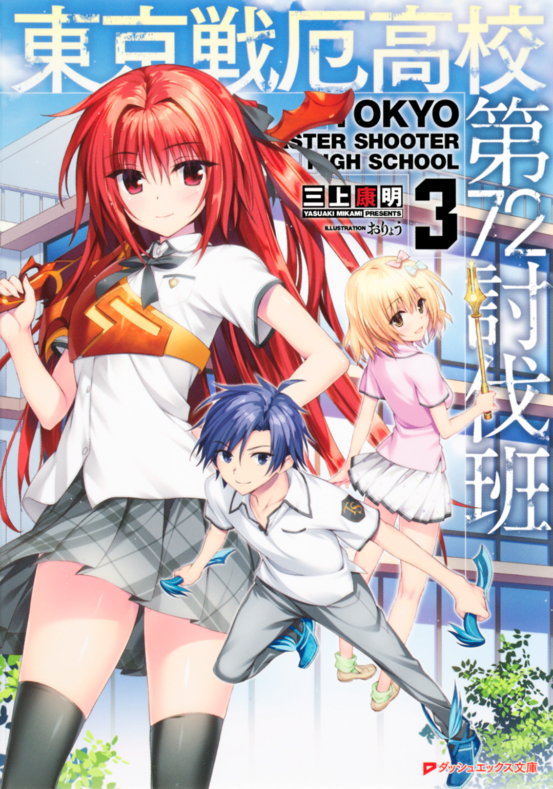
この本は縦書きでレイアウトされています。
また、ご覧になる機種により、表示の差が認められることがあります。
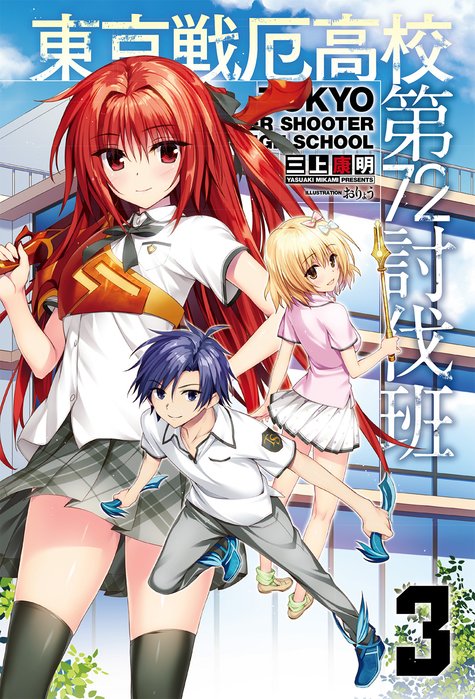
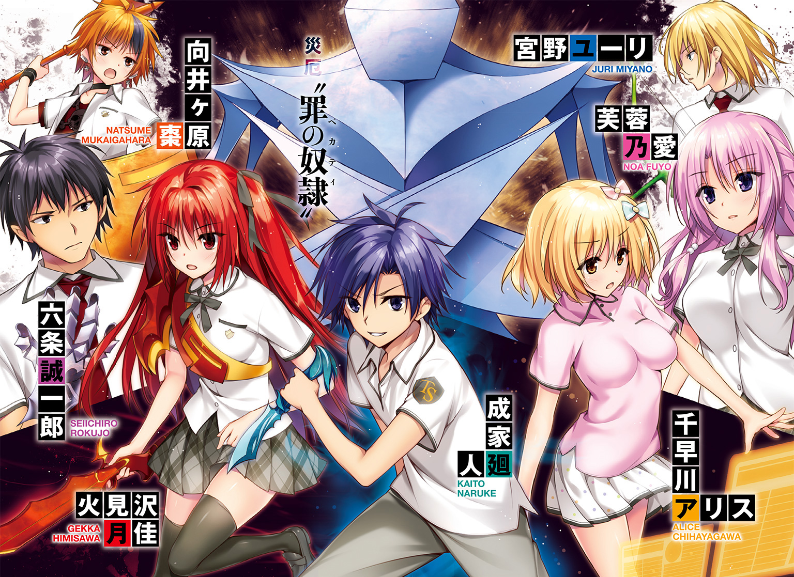
 ダッシュエックス文庫DIGITAL
ダッシュエックス文庫DIGITAL
東京戦厄高校第72討伐班３
三上康明
Ｐｒｏｌｏｇｕｅ
「ハァッ、ハァ......ハァッ......」
響刻構成体から伸びる青色の刃が廻人の顔を照らす。
本来、二本あるはずのダガー。
今手元にはこの一本しかない。
両足を覆うブーツにも細かなヒビが無数に入っている。
「クソッタレ......」
壁に背をつけると、そのままずるずると座り込んでしまいそうだ。
身体中から汗が噴き出し、息も上がっている。
戦闘服でもある東京戦厄高校の制服はすり切れ、汚れていた。
とどのつまり廻人は――追い込まれていた。
「！」
カツーン......カツーン......カツーン............。
足音が響く。
薄暗いフロアだった。廃ビル。中途半端に崩壊した壁、割れた窓ガラス。
外から射し込む夕陽以外に光源はない。
「――そこか」
女性の声は、明らかに廻人に向けられていた。
廻人の身体は十分に隠れている。他に隠れる場所も多い。
それなのに彼女は、廻人の居場所を見抜いた。
「出てこないの？ いーよ、それでも......」
ぴしん、と彼女は手に持った――ムチをしごいた。
ムチは紫色の光を放っていた。
「そのまま壁と――心中しなッ!!」
彼女の腕が真一文字に振り抜かれるや、一拍遅れて紫色の閃光が壁へと襲いかかる。
「ッ!!」
廻人はその瞬間、前方へ跳んだ。
この場に留まることは得策ではないと直感した。
直後、ムチが壁に触れる。
新聞紙をちぎるようにたやすく、ムチが、壁を破る。
崩れ落ちるガレキ。粉塵の舞う向こう、
「ほーら、いたぁ......♪」
にったりと笑う彼女。
災厄技術庁直下、選抜シューターチーム「ファルコン」の隊員章を胸につけ、上下一体のツナギ型スーツをまとっていた。
前面にジッパーがあり、首まですっぽり覆う作りとなっているが、腹のところまで彼女は開いていた。
タンクトップを押し上げる胸は、ブラジャーをつけていないのかゆらんゆらんと揺れている。
肩や肘などにはパッドが入っているが、うっすらホコリで汚れている以外、目立った傷などもない。
後ろで結んだポニーテール。髪の色は深い紫色だった。
彼女――南森が、薄い唇を開く。
「逃げるだけ？」
あざけるような言葉が、柱の陰へと身を隠そうとした廻人へ突き刺さる。
急ブレーキから軽く跳躍し、きびすを返した廻人。
ふぅ――と吐いた長い息とともに滴る汗があごから落ちる。
「君は迅引。一応、攻撃もできるシューター。ウチは停鈍だよ」
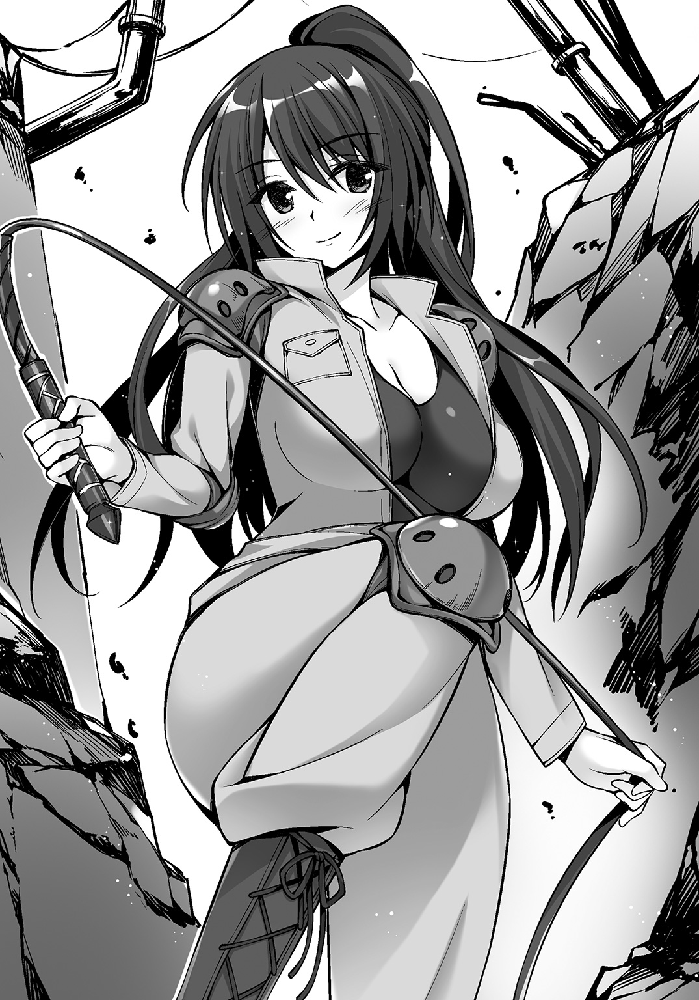
相手を足止めするのが停鈍の仕事だ。
それが、だ。壁を破壊するほどの力を持っている。
「バケモンだぜ......」
右手に握りしめたダガー。
刀身を確認するように目の高さに持ち上げる。
（どうする......俺の位置はすぐにバレる。どうしてバレる？ ニオイ......じゃないよな、気配？ どうやったらあの人に気づかれず接近できる......）
廻人の脳裏にひとつのアイディアが閃いた。
（むちゃくちゃだな......でも、できるか？ ――違う......やるか、やらないかだ。......やってやる）
ダガーの切っ先を、南森へと向けた。
「アンタの鼻を明かしてやる」
「おいで――全部食べちゃうから♪」
瞬間、廻人の姿がかき消えた――ように、一般人には見えるだろう。
真横に跳躍し、床面に触れるや次の一歩に移る。
爆発的なダッシュとは違い、スピードを殺さず徐々に加速する移動。
静かで、ブーツにダメージを与えることがない。
「あーはははは！ すごいね、君！ この短時間でそんな技まで身につけたの!?」
水面を駈けるように最小限の衝撃で次の一歩に移る。
もしも一般人が廻人の姿を目で追ったら、移ろう影だけが視界に残るだろう。
速く、静かだった。
南森は廻人を目で追いさえもしなかった。ただ突っ立っていただけだ。
（ここだ――）
廻人が青色のダガーを握りしめる。
南森の背後から青色の光が迫る。
「――――」
それまでぼうっと突っ立っていただけの彼女は、
「速いよねぇ。ほんとに......でも、単純なんだよね!!」
急速に回転し、振り返る。
背中に迫っていた刃を正面からムチで受ける。
わずかでもずれれば身体に突き刺さるという攻撃。
これをいともたやすく、ムチなんていう防御にはまったく不向きの武器で受け止めた。
「!?」
だけれどこのとき、南森は気づいた。
手応えが、ない。
それもそのはずだ。ムチが受け止めたのはダガー――だけ、だったのだ。
ダガーを投擲した廻人はすでにそこにいなかった。
「ロケットキィィィック!!」
左真横から飛来する廻人。
繰り出される右足は跳躍の速度とあいまってプロボクサーの右ストレートよりも速い。
両手でムチを持っていた南森の腕に触れる瞬間――彼女は、ムチから手を離し、身体を反らせた。
「!?」
ブーツは戦闘スーツに触れはしたが、肉体に届くことはなかった。
ミスッた――悟った瞬間、廻人の背筋に冷たいものが滑り落ちる。
視線が、合った。
のけぞっていた南森は、笑っていた。
楽しくて楽しくてしかたがないというように。
手放されたムチとダガーが、地面につくよりも早かった。
彼女の手が、空を切った廻人のキック、その足首をつかむ。
「はあああああああ――――」
振りほどこうにもすさまじい握力。
そのまま振り回され廻人の身体はぐるんと前に回転して地面に叩きつけられる。
「ッ!? がッ――」
視界に星が散る。身体中に走る衝撃から一瞬マヒ状態になる。
しかし廻人とてこれまでヤワな鍛え方をしてきたわけではない。
身体をひねって起き上がろうとする――直前、
「逃がさないわよぉー......？」
馬乗りになる南森がいた。
両膝でがっちりと廻人の胴体を固定。
仰向けのまま廻人は両手で南森の拘束を外そうとするが、
「!?」
目を疑った。
いや、凝視した。
さっきの廻人の蹴り。かわされはしたもののかすった。
そのせいだろう、戦闘服は真横に切り裂かれていた。
タンクトップもちぎれていた。
南森の肌が見える。健康的な肌色が。
胸の膨らみ、その、下の部分があらわになっている。
下乳である。
「さぁ......って、どう食べちゃおうかしら？」
舌なめずりして、指をぽきぽきと鳴らす南森は、自分の下乳が丸見えになっていることもまったく頓着していない。
「ま、待って待って！ 待ってくださいって！ おしまいっすよ、ねえ、おしまいにしましょう！」
「なに言ってるのよ？ 『停鈍なんかに負けるわけない。負けたらなんでもする』って言ってたのは君でしょ？」
「そうですけど、これはよくないっす！ 目に毒ですから！」
「あら？ どこが？」
「見えそうですから、ちゃ、ちゃんと隠してくださいよ......」
「破いたのは君なのに？」
「あー、もう！ そうなんですけどもー！」
そこへ割って入った少女の声。
「もう終わりましたか？」
「ふぇぇ......ホコリっぽいですぅ」
見るまでもなく、月佳とアリスの声だった。
南森はふたりの接近に気づいているのかいないのか、
「女の身体に動揺しているようじゃー、シューターとしては三流だなー」
「仕方ないじゃないですか。そういうのの免疫がないん――」
「ならばこうだっ」
ちょうどふたりが、廻人たちを――倒れた廻人と、南森の背中を発見したときだった。
南森はちぎれた服をがばりと開けて廻人に見せつけた。
「!?」
廻人の目が見開かれる。
いまだかつてこんなにも見開いたことがないほどに。
南森は服を戻して立ち上がる。
「......さて、と。帰ろうか？ 運動したからお腹空いちゃったよー」
にっこりと月佳たちにほほえみかける。
「え？ あの、今、え？」
乱れた戦闘服の南森と、先ほどの行動――掛け合わせると彼女がなにをやったのかは火を見るよりも明らかなのだが（廻人もぶっ倒れたまま動かないし）、どうしても月佳の頭の中でひとつにつながらなかった。
「先帰ってシャワー浴びてるよ～」
ポン、と月佳とアリスの両肩を叩いて、南森は去っていった。
「か、廻人くぅん......？」
近寄ったアリスが廻人を見下ろすと、廻人は先ほどと同じように目を見開いたままだった。
目はちょっと充血していた。
鼻から垂れた血は、叩きつけられたことによるものか、はたまた違う理由によるものなのかはわからない。
「......俺は、まだまだだ......」
「ふぇ？」
「なんかいろいろと悔しいんだよぉぉぉぉぉふおおおおおおおんんんんん！」
廻人が慟哭する。
「み......見たの、廻人？」
おそるおそる月佳がたずねると、泣きながら廻人がうんうんうなずく。
「ど、どうだったの......？」
「すごかったよぉぉぉぉふおおおおおおおんんんんん――ふごっ!?」
月佳が廻人の脇腹を蹴っ飛ばす。
「ふ、不潔！ 不潔よそんなの！」
「おごごごごご」
痛みに廻人がごろごろと転がる。
「か、廻人くん!?」
「行きましょ、アリスちゃん。こんなやつほっといて！」
肩を怒らせて月佳は去っていった。
これが――初日のことだ。
廻人たち、東京戦厄高校第七二討伐班「トリニティ」が、災厄技術庁に来て四日目。
一週間前、廻人たちは星降島で「隠れた事」の討伐に成功、災厄の死体を確保することができた。
災厄技術庁生態研究課――通称「エコセク」はトリニティに感謝して、彼らの念願だった災厄技術庁のシューター・チームとのトレーニングに招待した。
Ｃｈａｐｔｅｒ Ⅰ
Ⅰ
災厄技術庁立川基地は自衛隊の敷地内にある。
「東京大災厄」後に設定された防衛線上に位置していた。
西には高さ十五メートルという防壁が南北に走っている。「まるで津波対策用の防潮堤みたい」――防壁を目にしたとき月佳がつぶやいた。
その表現は間違っていない。防壁は津波を防ぐのだ。災厄という津波を。
「なんなの、あの人......！」
そんな立川基地内、シャワールーム。
五〇人が入ってもなお余裕があるほどの広さで、シャワーブースが並んでいる。
首元から膝までを隠すスイングドアにはバスタオルがかけられ、その向こうにはカーテンが引かれている。
壁に固定されたシャワーヘッドから、体温より若干温かいお湯が降り注ぐ。大粒のシャワーは月佳の額に当たり、頰に当たり、鎖骨に当たり、肩に当たって跳ねる。
思い出すのはさっきの廻人だ。
たぶん、見てしまったのだろう、南森の胸を。もろに。
「......あんなに興奮して......！」
握り拳を壁に叩きつけるとベシャッと音がした。
「ふぇ？」
同じシャワールーム。月佳の反対側でシャワーを浴びていたアリスが物音に振り返る。
今この空間にはふたりしかいなかったので音が聞こえやすい。
そんなことに気づかず月佳は、
「......どうして停鈍を相手に手こずるのよ......！ 手加減したんじゃないでしょうね。廻人ってああいう年上の人が好み――」
月佳の脳裏に、生徒会副会長である芙蓉乃愛の姿がよぎる。
ピンク色の髪、妖艶な笑顔、そしてあの――胸。
「まっ、まさかっ、ほんとにそうなの!? 信じられない！ 自分は田舎育ちでがさつなくせに、高望みっていうか、身の程知らずっていうか――ああ、もうっ！」
握り拳で壁を叩く。ズベシッ。
「なんで私があいつのことなんかでこんなにもやもやしなくちゃいけないのよっ！」
バショッ。
そのたびに「ふぇっ」「ふぇっ」と振り返るアリス。
「ああ、もう――」
蛇口をひねってシャワーを止める。
両手を壁についた月佳はつぶやく。
「......がんばろ、トレーニング」
ぷはーっ、と息をつくと南森は缶ビールをごんっとテーブルに置いた。
「うまいなーっ。やっぱりトレーニングのあとはこれだよねー」
立川基地内にある食堂だ。
カウンターの向こうには広々とした厨房があり、数人のコックが腕を振るっている。
ちなみに、メニュー表はない。
好きな料理を言えば素材がある限りなんでも作ってくれる。しかも、無料で。
缶ビールを飲んでいる南森の前には魚介のたっぷり入っているペスカトーレが盛られていた。
タンクトップにジャージというリラックスしきった格好の彼女だが、同じようにリラックスした姿のシューターたちがちらほらと食事をとっていた。
「あの......大丈夫なんですか、お酒飲んで」
ビーフシチューをトレイに載せてきた月佳がたずねると、南森は笑って、
「なーに言ってるの。勤務時間外なんだからウチがなにをしても自由でしょ？ 息抜きもちゃーんとしないと、衰弱するよー？」
「はぁ......」
月佳が同じテーブルにつくとアリスもやってきた。
刺身定食だった。
無言でイスに座ったアリスはじっと刺身を見つめていたが、
「......すごいです」
「なにが？」
「アジを見てください。切り口がこんなにピンと立ってます。そして身の色はまるで獲れたてをさばいたかのように鮮やかです。包丁の切れ味もさることながら、下処理、保存状態、完璧です......！」
ぎゅううと両手を握りしめる。
「そ、そうなんだ」
アリスの感動がちっともわからない月佳だったが、アリスがキッと厨房に視線を走らせると刺身を作ったらしいコックが腕組みしてアリスに視線を返すところだった。ビッ、と親指を立て合うふたり。なにか料理にこだわるアリスと熟練の料理人とで、通じるものがあるのだろう。
「あの......廻人にああいうことするの、止めていただけませんか」
月佳は南森へと向き直った。
この南森という女性は、災厄技術庁の選抜シューター・チームのメンバーだ。
三日前、生態研究課の空木に紹介されて立川基地へとやってきたトリニティに、南森は興味を覚え、トレーナーを買って出た。ちなみに空木はアリスの叔父だったりする。
「ああいうこと、って、トレーニングのこと？ 一対一の戦闘トレーニングはポピュラーなものだけど」
月佳が言いたいのはもちろんトレーニングのことではない。
南森には感謝している。わざわざ高校生シューターのトレーナーになりたいなんて選抜シューター、ふつうはいないものだ。そこを快く引き受けてくれた。
問題はトレーニングではなく、どう見ても廻人を誘惑しようとしたことなのだ。
「そ、そうじゃなくてですね、その、あなたが......」
「ウチがなに？ はっきり言ってくれる？」
「あ、あの、廻人に、最後にしたじゃないですか......その」
「その、なに？ はっきり言ってくれる？」
「だ、だから――」
なかなか本題に踏みこめず月佳にしては珍しくもごもごしていたけれど、彼女は気がついた。
南森は両肘をテーブルについてニヤニヤしながら身を乗り出している。
「ほれほれ、言ってみ？」
「 」
」
からかわれていたと気がついて月佳の顔が真っ赤に染まる。
「あ、あのあの......アリスたち、まだ高校生なんですけど、真面目にトレーニングするつもりで来ました。だから......茶化されたりとか、そういうのは」
「ああ、ごめんごめん。反応が初々しくてさー、ついからかっちゃった。それに君たち三人はまるで......」
「？」
「んにゃ、なんでもない」
南森はごまかすような笑顔をアリスに向けた。
「ちっくしょー......手も足も出なかった......」
シャワーを浴びて汚れを落とし、医務室で擦り傷や打ち身の治療を施してもらった廻人は、食堂に向かって歩いていた。
南森は停鈍だ。ムチを使って相手を拘束することに長けている。
武器としては本来使用されない。それなのに壁をぶち破るほどの威力を持っている。
しかも、だ。南森の響刻値は――生体響刻武装と使用者の相性は――「Ｂ」だという。
一般人レベルより、ちょっといいという程度だ。
すると武装自体の性能が違うのかと思いたいところだが、今回はトレーニング用に戦厄高校で使用しているバージョンと同じものを使った。
つまるところ、
「『いかにして生体響刻武装を扱うか』、か」
南森は言った。
トレーニングの目的は、いかにして生体響刻武装を扱うかを知ってもらうためよ――と。
廻人は、自分がこれまで生体響刻武装をうまく扱えていると思えていたが、それはまだまだ甘いのだと思い知らされた。
さらには戦闘の熟練度だ。災厄と戦う際には後方支援である南森が、あれほど直接の戦闘に慣れている。
響刻値の高さよりも生体響刻武装をいかに上手く扱えるか。そして戦闘に生かすことができるか。このふたつを災厄技術庁のシューター・チームは重視しているのだ。
ちなみに月佳とアリスに関しては南森のトレーニングは向いていない。ふたりが戦闘タイプではないということではなく、相性の問題だった。調善は照射の範囲と効果の持続時間を調整することもできるが、月佳の照射はそもそも一〇秒しか持続しない。さらに短縮してしまうと使い勝手が悪いし、長く持続させようとすると調善効果が衰えてしまうからだ。
一方のアリスは、逆に南森から褒められっぱなしだった。「こんな使い方見たことないよ！」というわけで、同時性破損修復は災厄技術庁のシューターにとっても珍しいものらしい。
「くそ俺だけ足引っ張ってる感じじゃねーかよ！」
悔しくて頭をがりがりかいてしまう。
「それに......」
ちら、と戦闘の最後、南森が見せた胸――が頭をよぎりそうになり、ぶんぶんぶんと顔を左右に振った。
「あれも陽動作戦だ、陽動作戦に違いない......」
「災厄相手に陽動作戦など通じない」
「いや、そうかもしんないけど、人間相手なら――え？」
独り言にいきなり合の手を入れられて廻人はぎょっとする。
「成家廻人。ここでなにをしている」
笑い方など忘れてしまった、と言われたら信じてしまいそうなほどの仏頂面。
東京戦厄高校の生徒会長にしてナンバーワン光撃である六条誠一郎がいた。
「か、か、会長!? なにやってんすか!!」
「その質問は今、俺がしたところだ。答えろ」
均整の取れた肉体に隙のない体勢。
一ミリも妥協しないという瞳でにらまれる。
「あ、えと、その......トレーニングに」
ざっくりと事情を説明すると、六条は納得したようだった。
「......なるほど。芙蓉からそのような報告は受けていなかったな」
星降島で生態研究課にシークレットを引き渡した。
あのとき、トリニティを災厄技術庁のシューター・チームのトレーニングに参加させてくれるよう交渉したのは生徒会副会長の芙蓉乃愛だった。
「会長はひとりなんすか？」
「明日、『黄金獅子』のメンバーも来る。災厄技術庁の広報活動の一環としてな」
「広報......？」
「知らないのか。シューターが殺された事件だ」
一週間前のことだ。
立川基地の自衛隊所属シューターが、災厄に食われた。
犯行に及んだ災厄の行方はわからない。
「事件は、知ってます」
この事件、実のところ廻人にも影響があったのだ。
「おかげで俺、憧れだったシューターに会えなくなったんです。その人、災厄を追って、俺たちがここに来るちょっと前に基地を出てったらしいんで......」
「特別選抜シューターか」
南森たちが選抜シューターならば、特別選抜シューターはさらに能力の高い者だけを集めた部隊である。
今回の災厄は災厄レベル５ｔｈ以上と言われており、災厄技術庁の中でもきわめて能力の高いメンバーが追っ手として選出された。彼らはチームではなく個人で行動している。
「クレオさん、って言うんだって聞きました。俺が特徴を言ったらもうその人に間違いないって南森さん――あ、俺たちのトレーナーやってくれてる人ですけど、笑われたくらいで」
廻人は苦笑する。
金髪にはパーマがかかっていて、廻人が見たときにはアメリカンバイクにまたがっていた。オレンジのサングラスに、首元には柄物のスカーフをつけていた。そしてＴシャツにぼろぼろのジーンズ。特徴的と言えば特徴的な格好だ。
名字が久連尾。それがあだ名となってクレオとそのまま呼ばれている。
「南森......クレオ......」
ぽつりと六条がつぶやく。
「ん、会長、知ってるんですか？」
「......いや。憧れに現実が追いつくよう、励め」
分かれ道で六条は言った。
そして廻人とは違う方向へと去っていく。
「相変わらず、無愛想っすなー......」
現れるときに挨拶もせず、別れ際にもない。
だけれど初めて会ったときに比べればまともに会話してくれているということを廻人もわかっていた。
Ⅱ
「廻人！ 正座ぁぁっ！」
え？ と思う間もなく廻人は座らされた。
ここは立川基地内にある寮、そのゲストルームである。
トリニティに与えられた部屋は二部屋で、ひとつをアリスと月佳が使い、廻人はツインルームをひとりで使っている。
ホテルの一室のような内装で、室内空間は広い。エクストラベッドを入れれば三人でも優に泊まれるだろう。
先ほど六条と別れ、食堂に入った廻人。すでに月佳たちがいなかったのでひとりで食事を済ませ食器を返却棚に戻して振り返った――ところ、目の前、眉間に皺を寄せた月佳が廻人をねめつけていた。
で、彼女に腕をつかまれて、アリスと月佳の部屋に連れてこられたというわけだ。
「あ、あの......月佳さん？」
「シャラップぅ」
目がとろんとして、ろれつがちょっと回っていない。
ちなみに、左に南森、右にアリスも正座させられている。
絨毯が敷かれているので足が痛いわけではないが尋常ならざる事態ではある。
「ど、どういうことですか」
南森にたずねると、
「いやーお互い本音で話すべきだよねと思ってウチがジュースと見せかけてカクテルを彼女に飲ませたらこうでね？」
「でね？ じゃないっすよ!! なに未成年にアルコール飲ませてんすか!!」
「あ、ウチそういうとこ結構フランクっていうか、別に気にしないっていうか」
「南森さんの個人的な考え方はどうでもいいっすよ」
「うるさぁい！ そこ、いちゃいちゃすんなぁー！」
月佳が廻人と南森の肩をつかんでぐいと引き離す。
そして本人はベッドにどっかりと座る。
制服――つまりスカートを穿いているのでそういう座り方をされると視線の高さ的に中が見えてしまいそうなので止めていただきたいところだが、今注意をしようものならなにをされるかわからないので廻人はとりあえず目を伏せておいた。
「私は怒っています」
小学校の先生のような言い方だった。
「私たちはぁ、災厄と戦うためにぃ、人類のために毎日精進し続けなければいけないのです」
ちら、とアリスに視線を向けると、
「廻人くん、なにがあっても月佳ちゃんに逆らわないでくださいぃ」
涙目で言われた。
なにがあったんだよ！
「だからそこぉ！ いちぃちゃすんあぁー！」
視線を合わせただけで月佳が詰めよってきてふたりの顔を真逆に向ける。
逆を向けば廻人の目の前には南森がいるのだが、彼女はいつの間にか缶ビールとスルメを用意しており、リモコンでテレビを点けていた。
この悪の元凶がっ。
「あ、あのー......月佳、さん。なにが不満なんですかね」
「............」
「月佳さん？」
「......お前」
「え？」
「お前が不満」
えぇー。原因俺ー？
「なんていうか、不純？ 私たちが、一所懸命がんばらなきゃいけないのに......年上の人を相手にでれでれするし......」
最後のほうが小声で聞こえなかった。
「ん、なに？」
「なにじゃなぁいっ！」
立ち上がった月佳にのけぞる廻人。
「今はっ、トリニティとしてもっと成長しなきゃいけないときなのっ、ひとりひとりが目的意識を持って、みんなのためにがんばって、いかなきゃいけないときっ......なのっ......」
言葉がふわふわしてきて、糸の切れた操り人形のように月佳は前のめりに倒れてきた。
「うおっ!?」
両腕を出して月佳を支える。抱きかかえるようにするとなんとか倒れずに済んだ。
彼女の長い髪がふわりと流れ、女の子特有の柔らかく甘いにおいがした。
「――寝ちまった」
すぅ、すぅ、と寝息を立てていた。
「まったく人騒がせだねぇ」
言いながら南森がビールを口に運んだので廻人とアリスがジト目を向ける。
アリスと協力して月佳を寝かせると、南森は「うーん」と背伸びしつつ、
「さて、それじゃあウチは部屋に戻ろうかな......」
「あ、あの――いろいろ聞きたいことがあるんですけど、いいすか？ 生体響刻武装の使い方とか、クレオさんのこととか」
「んー......どうしよっかなー......タダで教えるのはつまんないなー」
ぽん、と南森は手を打った。
「わかった。教えてあげるのはいいよ。ただし、トランプで勝ったら。勝った人が好きな相手に好きなことを聞けるってのはどう？ 聞かれたほうは正直に答えなきゃいけない」
廻人はアリスと視線を交わした。
「いっすよ、それで。聞かれて困ること俺にはないし」
「いいねいいねー。盛り上がってきたねー」
急遽トランプ大会が始まった。
ベッドのひとつに月佳が眠っているので、アリスのほうのベッドに三人がのった。
トランプは基地内のリラックススペースから借りてきた。
「あ、あのぅ、汚いところですけれど、どうぞぉ」
と恐縮していたが、寝相でシーツをはね飛ばしている廻人に比べればまったく使っていないのではと思えるくらいに整ったベッドだった。
南森はベッド脇に小さいテーブルを寄せて、そこにビールとつまみをセットする。どれだけ飲むんだろうと思うが飲むペースは落ちない。すでに缶は四本目に突入だ。
「『カレーは飲み物』って言葉あるじゃない？ 同じなんだよねー。『ビールは空気』」
聞いてもないのにそんなことを言ってきた。
「トランプ使ってなにやります？」
「ひとりだけが勝つゲームならなんでもいいよー」
「じゃあ、ベタにババ抜きから行きますか」
三人でババ抜きをやったことや運もあって早々に廻人がイチ抜けとなった。
「よーし。それじゃあ俺から南森さんに質問」
「つまんないなー、こういう展開」
「どうやったら南森さんみたいに生体響刻武装をうまく使えますか？」
「精進あるのみ。以上。はい、次のゲーム～」
「答えになってないじゃないっすか！ ダメダメ。ちゃんと答えてください」
「えぇ......仕事をプライベートに持ち込まない主義なんだけど......」
「いいから！」
ぶつぶつ言いながらも南森は教えてくれた。
武装は響刻構成体に含まれるベースとなるパーツから構成される。それらは災厄から採取したものだが、それはさておき、問題はこのパーツをいかにして武装に割り当てるか、だ。
廻人の場合、二本のダガーと両足のブーツが展開される。意識したことはなかったが、ダガーとブーツ、割り当てる量を変更できるらしい。
さらにはダガーの中でも切っ先だけに集中したり、刀身に柔軟性を持たせたり、といったことも可能だという。
「すべては『イメージ』ね。武装と自らの肉体が一体である......という感じかしら。イメージを深めていくことで武装を自在に操れる」
これらは、練度の高いシューターは全員できると南森は言った。
「うおおおおおそうなのかああああああすげえええええええええええ！」
「うっさい」
「トレーニングしてええええ！ いってきます！」
「待て」
部屋から飛び出そうとする廻人の襟首を南森はつかんで引き戻す。
「あのさー......ウチさー......勝ち逃げされることが死ぬほど嫌いなの、わかるー？」
結構マジめのキレ顔だった。
ババ抜き第二戦は南森が勝った。
というかババ抜きでの勝利はほとんど運によるのだが、アリスだけは顔にもろに出た。ジョーカーを引こうとすると顔がパッと輝き、それ以外のカードだとしょんぼりする。
それに気づいた南森が引く順を、南森がアリスから引くようにすべしと主張した。その結果の勝利だ。
「よーしよしよし、それじゃウチからの質問！ 千早川ちゃんって処女？」
ぴーん、と空気が凍りついた。
「な、ななななに聞いてんすか、南森さん！ 見てくださいよ！ アリスが目を見開いたまま石像みたいになっちゃったじゃないすか！ アリス！ 戻ってこい、こっちの世界に！」
「火見沢ちゃんはどーかなー？ おーい、起きて、火見沢ちゃんー」
「待って、誰か止めてこのセクハラ星人を！ っつーかそういう質問止めてくださいって！」
「えー......じゃあ、違う質問にする」
ビールで酔い始めたのか、とろんとした目をさまよわせてから南森は言った。
「君たち。三人でチームを続けられない事態が訪れたらどうする？」
廻人とアリスが視線を交わす。
「......そんなことは、起きないっすよ」
「仮に、よ。君たち仲がよさそうだけど、よすぎると、チームが崩壊したときにきついよ」
「そんなことは、起きないっす」
廻人は重ねて言った。
「そう......そっかぁ」
なにかに納得したように、南森はうなずいた。
「次のゲームやろ、次の！」
次はポーカーとなった。手札の交換は一回きりという簡単に勝負がつくものだ。
「よっしゃ！ 俺、フルハウス！」
廻人は初回から強い手を引いた。
「......君、イカサマした？ したでしょ？」
「してませんよ。南森さんだってそこそこ強いじゃないですか、スリーカード」
「おかしいな......君みたいな純朴な少年はたいていブタで負けるんだけど......」
「あ、あのぅ」
とそこへアリスが手札を公開した。
「............」
「............」
見て、廻人と南森が凍りつく。
スペードの10、Ｊ、Ｑ、Ｋ、Ａ――。
「ロイヤルストレートフラッシュ......？」
これこそイカサマかと思ったが、カードを配ったのは他ならぬ廻人である。
「ま、まあいっか。それじゃアリスが質問してくれよ。そうだなー、やっぱり秘密のトレーニングがあるか、とか......クレオさんのことは俺が勝ったとき聞くし」
「待って、どうして君が勝手に質問するの？ 勝ったのは千早川ちゃんだよ？」
「やー、だってほら、俺たちチームだし。なっ、アリス！」
「千早川ちゃん、誰になにを聞いてもいいんだよ。聞かれたほうは正直に答える。ほら......聞きたいことがあるんじゃないの？」
ニヤニヤしながら南森が迫るが、廻人としてはなにを言ってるんだという思いである。
「じゃ、じゃぁ......廻人くんに質問しまぁす！」
よしよし、トレーニングの質問をだな――。
「ふぇ？」
思わずアリスみたいな声が出た廻人である。
「か、か、廻人くんは......ど、どんな女の子がタイプなんですかぁ......？」
「え？ は？ ちょっと待って――」
「ほら質問だよ、答えなよ成家くん」
なにがなんだかわからない。
え？ 俺？ 俺のタイプ？ そんなのに質問使っちゃうの？
「あ、う、あー......ええっと、そうっすね......女性の好みってことですよね？」
なぜかアリス相手に敬語を使ってしまう。
そのアリスはトランプで顔の半分を隠しながらも目はこちらを見ている。
「女性の好みかー......そうだなぁ。あ、そうそう」
言いかけたときだった。
背中に、視線を感じた。
後ろには誰もいないはずだ。そう、ベッドで眠っている月佳だけ――。
ばっ、と振り返る。
目を閉じた月佳がいる。
気のせいか......と顔を戻すと、また視線を感じる。
振り返る。
ぎゅっと目を閉じた月佳がいる。
（なに、なんなの!? 幽霊でもいるの!?）
いいから早く答えなさいと促され、廻人は姿勢を戻す（するとまた視線を感じる）。
「強い人、かな」
「強い......？」
と、アリスが絶望的な声で聞き返す。
「うん。ちゃんと背中を預けられるっていうか、俺が突っ走っちゃうから強い人がいいな。あと、料理！ 料理がうまい人は絶対いいよなー......」
ばらばらばらっ、とアリスの手からカードがこぼれる。
そして彼女はベッドに顔を伏せる。まるで泣きだしたような格好、というか、アルマジロが丸まったような感じで。
反対に廻人の背後では葬式のように陰気な空気が漂い始めた。
「な、なんなんだ？」
廻人はわけがわからず、
「ふーん......」
南森だけはニヤニヤしていた。
Ⅲ
翌朝、六時に起床して朝食を摂り、基礎トレーニングを始めたトリニティ。
ジョギング――にしては長い距離、五キロメートルを走る。
持久力にそれなりの自信があった廻人だったが、さすがに朝イチではきつかった。月佳は食らいついてきたがアリスは息も絶え絶えだ。
そこからマシンを使った全身トレーニングである。
身体中が汗だくになると同時に、空腹が襲ってきた。身体がカロリーを求めている。アリスは全身トレーニングの途中でもうバテていたので休息をとっていた。
「まずは身体を慣らすこと。今できなくてもそのうちできるから、最初から無理はしなくていーよ。ただ努力はしてね」
南森は言った。長期間にわたる戦闘も想定しているのだろう。
昼食を無理に詰め込んで、一時間の仮眠を取る。
午後からは生体響刻武装を使用した実戦訓練だ。
制服に着替えた廻人たちはトレーニング施設へと向かうところだった。
ちょうど、会議室の並ぶ通路を通りかかった。
「ん？ なんか人がいっぱいいるな」
大会議室の扉が開かれていた。扉の前には「記者会見場」という看板が出ている。
室内からは多くの人間の気配がする。
「記者会見って、先日の事件のかな」
月佳はさすがに気がついたようだ。
ちなみに言えば月佳は、昨夜の狼藉を一から十まで覚えているらしく午前中はずっとしおらしかった。そこからだんだん調子が戻ってきたところだ。
「そう言えば会長に昨日会ったぞ。その件で来たって」
「ということは、会長さんたちは中にいるんですかねぇ......」
とアリスが言ったときだった。
パシャッ、というシャッターを切る音。
瘦せてはいるが目をぎらつかせている男がごついカメラを持っていた。くたびれたワイシャツにはネクタイをつけていない。
「ね、ね、君たち、東京戦厄高校の生徒だろ？ 今回の事件、知ってるよね？ 自衛隊のシューターが災厄に食われたの。コメント欲しいなあ」
記者のようだ。
関わってもいいことはないだろうと無視して廻人たちが進もうとすると、
「あーあー、いいの？ 僕らの生活を守るために戦った人が死んでるのに、ガン無視しちゃうの？ 君たちそれでも災厄を討つ者候補なの？」
「俺たちは――」
言いかけた廻人を月佳が制する。
「おっしゃるとおり、私たちは東京校の生徒です。災厄と戦う訓練を受けています。だからこそコメントできる立場にありません」
毅然と言い放つと、わずか、記者はたじろいだ。
その隙に三人は記者から離れていった。
「なんだか......イヤな感じがしましたぁ」
アリスがつぶやく。
「............」
廻人は思う。クレオは特別選抜シューターとして今回の災厄を追っている。自分とは活動している次元が違う。
わかっていたはずだ。クレオはただの目標であり、ライバルではない。
だがこれまであやふやだった「目標」は、現実に生きるシューターとしての「クレオ」として目の前に現れた。
あまりにも遠い、と廻人は感じた。
「ちっがーう。全然違うー。ダメだなー。昨日は結構イイ線いってたんだけど」
何度目かわからない南森の叱責が飛ぶ。
トレーニング施設内、巨大なホール。廻人は生体響刻武装を使って災厄を模したターゲットに攻撃を加える。
このターゲットは多種多様な災厄の形をしており、地面からせり上がって現れる。
自走しないので攻撃は必ず当たるが、坂の上にあったり、壁の背後にあったり、柱の陰にいたりと様々だ。出現のたびにそちらへ急行するので体力も使う。
「ハッ、ハァッ、ハァッ、ハッ......ううおおおおお！」
壁の裏に出現した災厄――ダルマのような形をしていた。
二メートルの高さの壁をひらりと飛び越え、廻人はダルマに向かってダガーを繰り出す。
「――ぐっ!?」
ガッキィンという鈍い金属音は、単にダガーとターゲットがぶつかっただけではない。ダガーの刀身にヒビが入り、斜めに折れた音だ。
「アリスちゃん修復！」
月佳の横では展開する立体画面を見ながらアリスがマシンガンのごとき速度でキーを打つ。廻人の生体響刻武装修復プログラムだ。
「あっ――ごめんなさいぃ、資材不足です。これ以上は修復できません」
「そこ、なんとかなんないかなー千早川ちゃん。トレーニングは一度死んでからが本番だよ」
「ふぇぇぇ......」
廻人はその場で大の字になった。
息が荒い。心臓が血液を身体中に送り出している。頭から、首から、脇から、手から、汗が噴き出る。
「どうしたの、廻人。今日の様子、なんか変だよ」
ひょこっと顔を出したのは月佳だ。
「別に......」
「クレオさんのこと考えてた？」
図星だった。そのせいで訓練に身が入らなかった。
この感情をなんと言うか、知っている。
焦りだ。
そして焦っても仕方がないことだとも知っている。
「悪い......明日からもっとちゃんとやる」
「いいの」
「......え？」
「もっと焦ったらいいの」
廻人が予想もしなかったことを月佳が言った。
「私たちはまだまだ未熟なんだから、もっと焦らなきゃ。他の人たちが努力するその五倍も十倍も努力しなきゃ。あなたが焦るから、私も焦る。焦って焦ってどんどん成長しよ？」
「――――」
目の前のもやが、さっと開けたような思いがした。
焦っていいのだ。
ただ、同じように焦っている――がんばっている仲間がそばにいる。そのことだけわかっていれば。
廻人は上半身を起こした。
「月佳」
「ん？」
「......サンキュな」
にや、と月佳は少しだけ笑ってみせると、
「一人前みたいな顔で『サンキュな』とか言わないでよ、恥ずかし」
廻人の額をこづいた。
「お、俺はただ――」
「南森さん」
月佳はそんな廻人に構わず、アリスといっしょにトレーニング中の修復データを確認している南森に声をかけた。
「さっきおっしゃってた、『昨日はイイ線いってた』ってどういうことですか？」
「あー。昨日さ、彼がウチに最後の攻撃仕掛けるとき、音を消そうとして走ったでしょー。あのことなんだよねー。成家くん、あのとき君はなにを考えてた？」
「な、なにって......なんか、水の上を走る感じっていうか......よく言うじゃないですか。足が沈む前に次の一歩を出せば水の上を走れるって」
よく言わないわよ、と月佳は言ったが、南森はうんうんとうなずく。
「そーゆーことなんだよねー。言ったでしょ。大切なのはイメージ」
「イメージ......」
廻人は手元の響刻構成体を見る。今年の四月にもらってから四カ月。すでに傷だらけだった。
「イメージ！ よっしゃ、がんばろうぜ月佳！」
「はいはい」
急に元気になった廻人に呆れた様子を見せながらも、楽しそうに月佳は答えた。
廻人は確信する。
もっと強くなれるはずだと。
いつか南森にも追いつき、クレオにも追いつく――。
一方で、廻人は忘れていた。トリニティの存続は、危ういバランスの上に成り立っていることを。
Ⅳ
夕方、トレーニングは終了した。
ぐったりする疲労感は毎度のことだが、一昨日よりも昨日、昨日よりも今日のほうが楽になっていた。
身体が、順応しているのだ。
廻人たち三人は食堂に集まっていた。
食事をしながら今日の振り返りをしていると、食堂の壁にかけられていた大型ディスプレイが災厄に関するニュースを流し始める。
「お、会長だ」
災厄技術庁、防衛省の共同会見で、壁には黄金獅子のメンバーが並んでいた。
こうして見ると、すっとした六条の姿勢、美貌の際立つ乃愛、立ち姿にも品のあるユーリ、小さいながらも傲慢さがにじみ出ている棗と、存在感がある。
災厄技術庁のシューターと比べても遜色がないほどに。
会見では、現在に至るまでの情報が共有されたが、昨日と内容は変わっていなかった。
災厄はいまだ行方不明。防衛省、災厄技術庁、警視庁ともに総力を挙げて災厄を追跡している――。
記者たちもネタが欲しいのだろう、様々な角度から質問したようだったがはかばかしい返答は得られなかった。
「どこに行ったんですかねぇ......災厄」
「もしかして南森さんが呼ばれたのってこの関係とか？」
アリスと廻人がそんなことを話しているときだった。
ヴヴヴヴとテーブルに載っていた月佳のスマートフォンが着信を告げる。
「お姉ちゃん？」
星降島で久しぶりに会ってからというもの毎日のようにメッセージを送ってくる姉。返事がないと電話をかけてくる。
半ばうんざりしながら立ち上がり、廻人たちから離れつつ電話に出ると、
《――月佳ちゃん、あなたなにやってるの》
ハッとするほどの冷たい声に月佳の足が止まった。
「な、なに......どうしたの、急に」
ため息が聞こえる。
《チェックしてなかったか、やっぱり。新都新聞のウェブを確認してみて》
有無を言わさぬ響きに月佳はテーブルへと戻る。アリスに頼んでスマートフォンのブラウザを起動。新都新聞のウェブサイトにアクセスする。
なんだなんだと廻人もやってきて、アリスを挟み込むように画面をのぞき込む。
《自衛隊のシューターが災厄に殺された事件の関連記事》
姉に、言われなくてもわかった。
トップページのサムネイルにあったのだ――月佳の顔が。
昼に撮影されたあの写真が。
『大変痛ましい事件だと思います。私たちはこのような事件が起きないようシューターとしてさらにトレーニングを積まなければなりません』
記事には火見沢月佳の名前がはっきりと出ており、
「お、おい、どうしてお前のこと、『ホムラの創業者一族の次女』とかまで書かれてるんだよ」
廻人が言うとおり、家のことまで書かれていた。
《今回の事件、全然動きがなかったからちょっとでもネタが欲しかったってところでしょ。で、月佳ちゃんの美貌に目が行って、どっかの有名人かと思って調べたのかもね......》
「なん、なんで、こんな......」
《月佳ちゃん、油断したでしょ。ダメだよせっかくうまいこと目立たなくしてきたのにぃぃぃ......とにかく、なんとかお父さんの目に入らないようにするから！》
姉からの通話は切れた。
日本で五指に入る自動車メーカーである「ホムラ」。火見沢家はその創業者一族であり月佳の父はホムラの社長を務めていた。
親族以外信用しない父は、月佳の兄と姉をホムラに入社させていた。父は月佳もゆくゆくは入社させる腹づもりだったが、月佳は自分の道は自分で決めると無理矢理東京戦厄高校に進学したという経緯がある。
ディザスター・シューターなんて傍から見ているのと実際になるのとでは全然違う。そのうち夢から覚めて火見沢家に戻ってくる――そんなふうに父が考えているフシがあった。だからこそ、姉は言うのだ。目立つな、と。
「未成年の写真だから、学校に抗議してもらえれば写真くらいは......」
月佳の言うとおり、東京戦厄高校に連絡をしたところ翌日には記事の写真や月佳に関する記述は削除されていた。
だけれどそれは――遅かった。
その日の夜、学校から立川基地へ連絡があったのだ。
火見沢月佳への立川基地でのトレーニングを即刻停止すること。
身柄を東京校へ送ること。
理由は――退学のため、だった。
「なんでそんなことになるんだよ!? 一方的過ぎんだろ!!」
廻人が叩くと食堂のテーブルは安っぽい音を立てた。
隣には表情を硬くした月佳がいる。
アリスは、先ほど「ちょっとだけ待っててください」と言ってどこかへ行ってしまった。
「月佳の親父さんが勝手に言ってることなんだ。無視したらいいよ。そうだよ、そうしろよ」
廻人は自分で浅はかなことを言っていると自覚していた。
でも、頭がついていかなかった。
星降島で月佳の家庭の事情を聞いた。
父への対応策はいっしょに考えればいいと思っていた。
そのうちのひとつが立川基地でのトレーニングでもある。月佳が、シューターとして実績を残せば簡単にシューターを辞めさせることはできないはずだからだ。
だけれど月佳の父の行動は早かった。
「高校を続けられないとなると、成人するまではシューターに戻れない......かな」
ぽつりと月佳は言った。
「成人......」
四年後だ。
この四カ月、月佳と過ごした濃い時間を考えると、果てしなく遠い未来に感じられた。
「それまで......トリニティを解散して別のチームに入ってろってことかよ。どうしてだよ!? 月佳がなんか悪いことしたのか!? 違うだろ！」
「落ち着いて、廻人」
「がんばって――誰よりもがんばって、いっしょにがんばってきたのに、それを、むげにされて、俺は落ち着くことなんてできない！」
昨日、月佳が言ってくれた。「もっと焦ったらいい」と。そんなふうに言ってくれる人間、他にいるわけがない。
トリニティは奇跡のようにバランスの取れたチームなのだ。
月佳の代わりなんていない。
要らない。
「お、お待たせしましたっ！ 連れてきましたぁ」
そのときだった。
食堂へ飛び込んできたのはアリス――そして、
「な、な、なんてことだ......」
驚愕に顔をこわばらせる白衣姿の男。
アリスの叔父にして、災厄技術庁生態研究課の課長――空木だ。
「どこにもいない......新種の災厄がいるとアリスちゃんが言ったのに！ ここには！ 人間しかいない!!」
どうやらウソをついて連れてきたらしい。
そうか、と廻人はアリスの思惑に気づく。
アドバイスを得るなら偉い人間から。
災厄技術庁の課長だ。なにか名案があるかもしれない――。
「ちょっとぉ、お父さん！ どうしてあんな強引なことをしたのよ!?」
同時刻。
東京新都千代田区、大手町にあるホムラ本社、その社長室。
摩天楼を一望できる高さにある社長室にはふたりの人物がいた。
オフホワイトのスーツを着こなしている月佳の姉、火見沢陽那。
そして窓から外を眺めている男性――ホムラの社長にして、月佳の父。
火見沢は、身長が一七〇に届くかという程度だったけれど、がっちりとした体格と、身体に漂わせる威圧感から、それ以上に見られることが多かった。
自動車メーカーとして国内では名が知られていたものの、海外ではパッとしなかったホムラを、見事に世界ブランドへ成長させた男である。
「陽那」
どっしりとした声が広い社長室に響いた。
「な、なによ......」
実の父親とはいえ、思わずたじろいでしまう陽那である。
「お前、私に月佳の情報が入らないよう秘書室に細工をしたな？」
陽那は、おかしいと思ったのだ。
大手四紙は毎日読み比べるが、父はいちいちネットの記事なんてチェックしない。
しかし他の社員――特に秘書室が、新都新聞について父の耳に入れる可能性があった。
だからこそ陽那は秘書室にまず連絡を入れ、釘を刺した。新都新聞については一切社長に報告するなと。
それが見事に裏切られたというわけだ。
「秘書室は所詮、長い物には巻かれよという体質。お前の警告など、むしろいいご注進の種くらいにしか思わなかったろう」
「うぐ......」
秘書室の人間は陽那に聞いたからこそ父に報告したのだ。墓穴を掘ったようなものだ。なにも言わなければ父も知らなかったかもしれないのに。
ううう、ごめん、月佳ちゃん――と心の中で謝ったが、とりあえず謝るのはあとだ。
「撤回して。月佳ちゃんに学校へ行かせてあげて」
「もちろんだ。今から国立大受験へ向けた進学校へ転入させる」
「そういうことじゃなくて！」
「話は終わりだ」
くるりと振り返った火見沢。
額や眉間に刻まれた皺。あらゆる困難に立ち向かい、けっして自らの信念を曲げることがない、強い決意に満ちている。
「これ以上、私の時間を無駄にするな」
「お父さん！」
陽那は食い下がったが、火見沢は二度と陽那の言葉に耳を貸さなかった。
Ⅴ
場所は変わって、昨日と同じゲストルーム。
月佳とアリスは自分のベッドに腰を下ろし、廻人はイスに座っていた。
空木の説明を聞いたのち食堂から引き上げてきた。
――ホムラ社長の力は絶大で、戦厄高校の校長程度では逆らえないよ。ホムラ社長は多くの政治家とも昵懇だからね。災厄技術庁にも強い影響力を持っている。
そう、空木は切り出した。
――だから正攻法では不可能だ。つまり取りうる方法は――。
「俺は反対だ」
廻人は真っ先に意見を表明した。
「で、でもぉ......現実的に可能なんでしょうかぁ、叔父さんが言ったこと......」
「......『ホムラの敵に力を借りろ』、ね......」
アリスが言葉を濁した部分を月佳が口にした。
闇の珠でも吐き出したように禍々しくさえ聞こえた。
つまり、空木の提案はこうだ。
火見沢家――ホムラに対抗できるのは、ホムラの敵しかいない。ホムラの敵だけがホムラと戦うことにメリットがあるのだから。
だが力を借りるということは、ホムラを攻撃することにもなる。
「ダメだ。絶対ダメだ。俺にはあんまり難しいことわかんねーけど、これ、親子ゲンカって枠じゃ済まないだろ」
「廻人だって、私が学校辞めること反対だったじゃない。それに仕掛けてきたのは父が先よ」
「他になにか方法があるはずだ」
「ないわ。それに正直を言えば......空木さんが話してくれた内容は、私が考えていたことと同じだった。『ああ、やっぱりこの方法しかないんだ』って思ったもの」
「ダメだって言ってるだろ！」
廻人が立ち上がる。
「月佳......家族って、すげぇ大事なモンだよ。絶対に裏切ったりしちゃいけない」
月佳が廻人をにらみつける。
「遅かれ早かれ父とはぶつかるはずだった。それが早まっただけ。それにこれはうちの家の問題。あなたにどうこう言われる筋合いではないわ」
「月佳！」
「もういい。話したくない」
月佳が顔を背ける。
廻人が両手を握りしめる。
アリスは――ただどうしていいかわからずおろおろする。
「部屋に戻って。今日はもう寝る」
ベッドサイドに置かれたデジタル時計が示す時間はまだ九時半だった。
「............」
廻人の手からゆっくりと力が抜けていく。
無言で部屋を出ていった。
デジタル時計が示す時間は夜中の二時を過ぎていた。
アリスに背を向けてベッドに丸まっていたが、月佳は眠れずにいた。
廻人が、反対することはなんとなく想像がついていた。家族を大事にする廻人だから。
でも、がっかりした。
廻人は星降島で言ってくれた――お前の父ちゃんのこと、いっしょに考えよう、と。
そして――月佳がチームを守ろうとしたみたいに、俺もお前を守りたい、とも。
その言葉がトリガーだった。
廻人に心惹かれていくことの。
（反対するだけだったら誰にでもできる......いっしょに考えてくれるんじゃなかったの？）
月佳だって父の敵と手を組むなんてしたいわけがない。
それでも、シューターでいたいから。
廻人のそばで、アリスのそばで、戦いたいから。
イヤなことだって耐える――それこそ「どんなことをしてでも」、学校へは通いたい。
隣室は、廻人に与えられたゲストルームだ。
廻人はベッドに寝転がるや五分で眠りに就いた。
どんな状況でも眠れるのは廻人の特技でもある。
時計が五時半を示すころ――廻人はぱちりと目を開いた。
「やっぱ、ダメだろ」
廻人の結論は変わらなかった。
家族と敵対するなんて、ダメだ。絶対に。
「うし」
となれば――やるべきことは決まっている。
廻人は東京戦厄高校の制服に着替えると、食堂に入った。朝六時前でもコックが腕を振るっている。
「カツカレー、大盛りで」
これからなすべきことを思うと、カロリーを蓄えておきたかった。
「成家くん」
カツカレーを怒濤の勢いで食らっている廻人の前へ現れたのは、南森だった。
「話、聞いたよ。......君は行くの？」
「俺がなにしようとしているかわかるんですか？」
「昔......チームに、君と似た人がいてね。その人は――いえ、それはいい。ともかく君は自分のすべてを懸けて、チームが存続する道を選ぶんだね」
「当たり前です」
即答した。
「そう......もし君の覚悟が本物だとしても、命だけは懸けないでね」
「え？」
「じゃあね」
南森は去っていった。
「............」
食事を終えると廻人は立川基地を出た。
そして早朝のために乗客の少ない電車に乗った。
向かったのは――都心、日本の中枢。
ホムラの本社だ。
Ⅵ
明け方から少しだけ眠れたらしい。月佳が目を開けたとき、頭はずっしりと重かった。だけれどそれ以上眠りたいと思うよりも前に昨日のことを思い出してしまった。
「......月佳ちゃん」
アリスも起きていたらしい。身体を起こした月佳に声をかけてきた。
「......ごめんなさぃ。アリスのせいで、廻人くんと月佳ちゃんがケンカしちゃいました......」
「アリスちゃんのせいじゃない。あいつが――」
言葉が途切れる。
いくつもの言葉で廻人を罵ってやりたいと思う。いっしょに対策を考えると言ったのに月佳のやろうとしたことにただ反対しただけの裏切り者と言ってやりたいと思う。
でも、なぜだか言葉が出てこなかった。
月佳にもわかっていた――廻人が、心の底から月佳を心配していたことを。
「......あいつ、怒ったかな。私に呆れたかな」
ふるふるとアリスが首を横に振った。
「そんなことないです。廻人くんは怒ったりしないし、月佳ちゃんに呆れたりしません」
「そっか」
ほっとする自分に月佳は気づいていた。
「廻人くんも起きてるかもしれませんねぇ......いっしょに朝ご飯食べませんか？ アリス、呼んできますね」
「え？ あ、え、あの、ちょっと」
まだ廻人に会う心の準備ができていない。
だけれどアリスはさっさと部屋を出て隣室へと向かってしまう。
（ど、どうしよ、昨日あんなケンカしたあとにどんな顔したら――）
月佳は心配したが、それは空ぶりに終わった。
アリスはすぐに戻ってきた。
「あの......げ、月佳ちゃん。廻人くん、部屋にいないみたいですぅ......」
代わりにもっと大きな不安が月佳に襲いかかる。
こういうとき廻人はきっとなにかをやらかす。
廻人の携帯電話にかけたが、出ない。
「あいつ......どこに行ったの？」
こういうとき廻人はなにを考える？ なにをする？
「まさかホムラに行ったんじゃ......」
「月佳ちゃんのお父さんに会いに......」
ふたりは同時に言った。
出社するサラリーマンの姿がちらほら見えるが、ラッシュまでにはまだ早い。
しかも夏休みシーズンだ。ふだんよりさらに人は少ない。
ホムラ本社ビルの受付嬢は、ビルへ入ってくる制服姿の高校生に気がついた。
サマータイムを導入していることもあって早い時間から受付嬢は勤務している。
彼は背中に小さなバッグを背負っている。
「ご用件をうかがいますが、ホムラの自動車ショールームでしたら隣のビルの一階にございまして、九時より入ることが――」
「社長に会いに来たんだけど。火見沢って人でしょ、社長」
「え？」
受付嬢は耳を疑った。
「火見沢にご面会ですか？ ......もしかして、ご家族の方でしょうか」
「ああ、まあ、そんなとこ」
そう言った少年は、あはははと笑う。
まったく無邪気なその笑顔に受付嬢は秘書室へと連絡を取るが、この時間に社長と面会の約束など入っていないという。
「あの、申し訳ありませんが、お約束がない方とは面会できないことになっています」
「えぇえ？ 重要な話をしにきたんだけど」
「ですが――」
受付嬢が言いかけたところで警備員が近づいてくる。
警備員は、廻人の着用している制服が東京戦厄高校のものであることに気づいたようだ。
びくりとして立ち止まり、無線で何事かを言うと早足でやってくる。
「ほんとうにご家族の方ですか？」
疑念たっぷりに聞いてくる受付嬢に、
「や、家族......みたいなもんだよ。あのさ、月佳ってわかる？ 火見沢月佳。アイツと俺は今、いっしょのチームなんだけど」
「君」
警備員がわらわらと現れ、五人ほどに囲まれた。
「戦厄高校の生徒のようだけど、まさか生体響刻武装を持ち込んできてはいないだろうね」
「え、持ってきてるけど？」
素直に答えると緊張が走った。警備員たちは半歩後じさって腰の特殊警棒に手をかける。
「今すぐ響刻構成体を出しなさい！」
「な、なんだよ......おっかない声出すなって」
「刃物や銃と同様に、許可なくこのビルへ持ち込むことは禁じられているからだ！ 響刻構成体を出すか、ビルから出なさい！」
受け答えによっては問答無用でねじ伏せる――気配が伝わってくる。
廻人の背後にいる警備員が、特殊警棒の柄をつかんだ。
「止めなよ」
彼へと廻人は鋭い視線を投げる。
警備員はどきりとしたように手を離す。
「俺が言ってるのは簡単なことだろ。月佳の親父さんに会わせてほしいってだけ。俺は話し合いをしにきたんだ」
そう――話し合いだ。
月佳を、辞めさせないでほしいと伝えたいだけなのだ。
正面から熱意を伝えれば、きっと彼の思いを変えられる――廻人はそう信じていた。
「こちら正面入り口。応援をお願いします。所轄へも一報を」
だが廻人の意図は伝わらない。どころか危険人物扱いされている。
この状況がまずいことはわかっている――それなのに、
「......なん、なんだよ。アンタたち大人は」
だんだん腹が立ってきた。
月佳が将来の希望をなくしかけているのも大人の勝手な事情だ。
それに異をとなえようとすれば他の大人が邪魔をしてくる。
「俺たちが、なにしたんだよ!? 学校に行きたいって言ってるだけじゃねーか！」
「興奮したぞ、気をつけろ！」
「今のうちに取り押さえろ――」
死角から伸びてくる手が廻人の肩をつかむ瞬間、自然と廻人も反応していた。
「!?」
警備員の目には、地面と天井が回転していくように見えたろう。
廻人は腕をつかんで彼を転がすように投げた。
ごろん、とひとりが床に倒れた瞬間、警備員たちは戦闘モードへ移行する。
「警棒使え！ 武装される前に制圧しろ!!」
叫び声が上がる。廻人に殺到する四人。
その四人は廻人の目にはっきり見えていた。生体響刻武装を展開していなくとも戦闘状況の把握はできる。バックステップでふたりをかわし、身体をひねると残りふたりの間をすり抜けるように回避する。
行動の間にも、視界の端には正面入り口の外側からこちらへ走ってくる警備員の姿が見えた。
ビル内からもやってくる足音。
おそらく合計で五人か六人。
生体響刻武装を展開していない状態ではすぐに拘束されるだろうが、生体響刻武装を使うわけにはもちろんいかない。人間相手に使ったことが露見すれば、即座に永久使用停止処分だ。
廻人は視線を巡らす。
どうしたらいい、どうしたら――。
非常階段へ続くドアが、目に入った。考えるよりも先に身体が動いていた。
「追え！」
警備員たちが追ってくる。
廻人は非常階段に続くドアを開くと後ろ手に閉じた。
「開けなさい！」
どんどんどんとドアを叩く音。ノブも回そうとしてくるが廻人が押さえ込む。
「くそ、どうすっかな――」
ここに籠城しても他の階から警備員はやってくるだろう。
「......ま、人を相手に使わなければいいんだよな？」
右手でドアノブをつかみながら左手でバッグの響刻構成体をつかむ。
ドアノブへの攻勢が止んだ瞬間、廻人はドアに背を向けて駈け出す。
「武装召喚」
廻人の身体は青色の光に包まれ――一瞬の後には二本のダガーを握りしめ、足下にはブーツが展開していた。
（イメージ......イメージだ）
南森に教わったことを思い出す。
なにも傷つけず、しかし速い。そんな走り方をイメージする。水上を駈け抜けるイメージ。後には小さな波紋しか残らない――。
「動くな！ 止まれ！ ......え」
廻人がドアノブをつかんでいないと気がつき、ドアを押し開けた警備員たちが見たのは、いつもどおり、変わらない非常階段だけだった。
そのとき廻人はすでに五階から六階に続く階段を駈け上がっていた。
足下から音は、ほとんど聞こえなかった。
Ⅶ
月佳とアリスがホムラ本社ビルにやってきたのは何台ものパトカーがホムラへ到着したのと同じ時刻だった。サイレンは鳴っていないが物々しい気配が漂っていた。
「月佳ちゃぁん......」
不安そうにアリスが言うと、
「行こう」
月佳は、きっ、とビルの最上階へ一瞥をくれてから歩き出した。
「社長室ってことはたぶん一番上なんだよな......」
確証もなく走ってきてしまった廻人だったが、最上階へと続く階段ではたと立ち止まる。
ドアが、開いていた。
そのドアに寄りかかるようにして立っているひとりの女性――、
「バカなことしてくれたものね......武装を解いてこっちにいらっしゃい」
廻人は星降島で、彼女とはわずかに面識がある。
「あの、確か月佳の姉ちゃんっすよね？」
「そうよ。朝早くから秘書室と戦争してたからたまたまこっちにいたの。そしたら、高校生の侵入者があるとか聞こえたじゃない？ ピンときたわ――あなただって」
武装を解いた廻人は陽那に続いて最上階のフロアへと足を踏み入れた。
黒に塗られた壁と、ダークグレーのカーペット。
シックなカラーで整えられていた。
「しっかし呆れたわね。一階からここまで走ってきたの？」
「え？ ええ、まぁ」
まるで高級マンションのような内装に、きょろきょろしている廻人。
疲労はもちろんあるが武装のおかげで相当軽減されている。
「このフロア誰もいないんすね。あっ!? ひょっとして月佳の父ちゃん、来てないのか!?」
「みんな侵入者がいるって聞いて避難してるだけ。父は社長室で仕事してると思うけどね」
「なんだ、よかった......これでここにいないってなったら俺の苦労、水の泡じゃん」
「......呆れた。あなたね、そんなことより自分の心配をしなさい。こんな問題起こしておいてなんの罰もないと思うの？ ふつうの学校なら停学は間違いないわよ。もしも武装を使ったりしたことがバレたら一発退学よ。だから、武装を解いてって言ったの。非常階段には監視カメラがないけど、このフロアにはあるんだから」
サーッと廻人の顔が青くなる。
「いや、あの、俺......ただ、月佳が学校辞めさせられるって聞いて......」
陽那は腰に手を当てて、ふぅ、と息をついた。
「......それについては私も思うところがあるから、一応、今はあなたの味方。そこが社長室」
彼女が指差した先に、両開きのどっしりとした木製扉。
「行っていいんすか？」
廻人の問いに、ここまで来てなに言ってるのよ、という顔をしたあとに陽那は、
「一筋縄じゃいかないわよ」
「でも、俺がなんとかしなきゃ。俺たちチームメイトだから」
廻人はひとり社長室へと向かった。両手でドアの把手をつかんで引き開ける。
部屋へと吸い込まれていった。
「............」
誰もいなくなった廊下でひとり、陽那は、
「......月佳ちゃん、いい子を見つけたじゃない」
くすりと微笑んだ。
南東に向いている社長室は、光であふれていた。
執務机で書類に目を通していたホムラ社長の火見沢は、廻人が入ってきてもその作業を止めなかった。
廻人は火見沢へ向かって歩いていく。
広い社長室だった。
朝とはいえ、夏の盛りだ。
しかし空調はばっちり効いており、気温は一定に保たれていた。
「俺、成家廻人って言います。東京戦厄高校で月佳と同じチームです」
執務机のすぐそばまでやってきた廻人が言ったが、それでも火見沢は黙殺していた。
「月佳は、ディザスター・シューターになりたがってます。だから今までどおり学校に通わせてほしい。それをお願いしに来ました」
腰から九〇度、身体を折って廻人が頭を下げる――と、火見沢が初めて廻人に目を向けた。
「なぜだ」
深く、重く響く声だった。
「え？」
身体を起こした廻人が問い返す。
「なぜ、月佳がシューターになる必要がある」
「それはあいつがめちゃくちゃ才能があるからです。すごいんですよ、あいつ！ ものすごい射撃の能力で――」
「誰にでもできる仕事だ」
「なっ......」
そんなわけがない。
「あいつには才能があるんですよ。それに努力もしてる。誰にでもできることじゃない、あいつにしかできないことがある......！」
そう、廻人をサポートできる調善なんて月佳以外にはいない。
「くだらん」
だが、火見沢には届かなかった。
「月佳はホムラの幹部候補として入ってもらう。これからホムラは国内ナンバーワンを目指し、ゆくゆくはこの地球上で最も自動車を製造する会社になる」
微塵の疑いもない、確信を持って火見沢は言った。
「ホムラの仕事と、災厄を殺す仕事と、どちらがこの世界にとって重要かなど、考えるまでもない」
簡潔に相手を制圧する言葉をぶつけてきた。
「......そう、ですね」
廻人はうなずいた。
「わかります――わかるよ。俺にだって。どっちの仕事が重要か............なんて、考えたって意味がないってことくらい」
「なんだと？」
火見沢ほどに、威圧的な視線を向けられたことは、廻人はいまだかつてなかった。
視線だけで後じさりしてしまいそうだった。
「一番大事なのは、月佳がどっちを選ぶかだ!!」
だから、声を放った。
廻人は月佳の気持ちをようやく理解できた。
火見沢は、自らが信じたことをけっして曲げないのだ。
月佳がどう反論しても勝てるわけもない。陽那が加勢したとしても。
そのとき、
「動くな！」
社長室の扉が開かれた。
私服の刑事を先頭に、制服の警官が入ってきた。
廻人がなにかを言う前に、警官が廻人に殺到する。
突然のことに回避ができなかった。廻人は腕をつかまれ、服をつかまれ、引き倒される。
「っなにすんだよ！ 放せよ!!」
うつぶせに床に押しつけられる。
「............」
ゆっくりと立ち上がった火見沢が廻人を見下ろす。
彼はなにも言わなかった――ただ、廻人を見下していた。
Ⅷ
月佳とアリスは、警察が入った後に社長室へとやってきた。
「廻人！」
「廻人くん！」
思いがけないほど切羽詰まった、悲鳴に近い声が漏れた。
床に押さえつけられた廻人だったが声に気がついてこちらへと顔を向ける。
火見沢もまた、実の娘の登場に気がついたようだった。
だが特に感情を動かされた様子もなく目を細めただけだ。
「彼を放してください。彼は私のチームメイトです。そしてそこにいるのは私の父です。彼が危害を加えるはずはありません」
「しかし......」
「父との面会を私が予約しましたが、手違いで入っていませんでした。通報は誤りです」
ウソをついた。すると、警官たちは警戒をしながらも廻人を解放した。
「......大丈夫？」
「悪りぃ......」
廻人にしては、珍しくしょげ返った顔だった。
そう――そうなのだ。
廻人は、自分のためにここまでしてくれた。
自分が停学、ヘタをしたら退学になるかもしれないのに。
この瞬間、月佳はあることを悟った。
執務机の向こうにいる父、後ろのほうで心配そうにしている姉。火見沢家、ホムラ――。
あるいは、身体をはたいている廻人。横でぎゅっと手を握りしめているアリス――。
（選べるのは、どっちかしかないんだ......）
生まれてこの方、不足を感じたことのない生活か。
自分で切り開く自分だけの生活か。
選べるのはひとつだけ。
この問いは最初から目の前にあった。今ようやく気がついた。
「お父様」
なら、
「私は、自力で高校に通います。私は、火見沢家と一切の縁を切りたいと思います。ですから、これから先の人生でなにひとつ私に構わないでください」
月佳は言った。
誰もがハッとするほどの――笑顔で。
「おい、月佳――」
月佳は廻人の手を握った。
反対の手でアリスの手を握った。
「私は東京戦厄高校でとても大切な友だちを得ました。私のために命を懸けてくれる人です」
あなたにはそんな人がいるんですか――月佳の目ははっきりとそう、父に問いかけていた。
「行こう」
「おい、月佳」
「いいんですかぁ......？」
月佳はふたりを連れて社長室から出ていく。父に背を向けて歩いていく。社長室のすぐ外にいた陽那は、なにかを言おうとして、言わなかった。
エレベーターホールにたむろしていた秘書室の人間たちは廻人の姿を見てぎょっとしたが、待機させておいたらしいエレベーターに三人が乗り込んでいくのを遠巻きに見守っていた。
静かにエレベーターが降りていく。
「ねえ――」
そこで月佳はようやく口を開いた。
「これで、よかったんだよ」
「でもな月佳――」
「いいの。いい。だって私、今......とても気分がいいの」
ガラス張りの壁面から東京の空が、夏の空が見える。
彼女の瞳が青空を映す。
昨日までとは違う、迷いが一切ない瞳だった。
火見沢月佳は家族を失った。
その代わりに、
「私ね、生まれて初めて――自由になれた」
Ｃｈａｐｔｅｒ Ⅱ
Ⅰ
立川基地に戻ってから月佳も、アリスも、廻人も、ベッドに倒れ込んだ。そしてそのまま爆睡した。
すでに今日はトレーニングを中止にするよう東京戦厄高校から連絡が入っていた。
事態の展開についていけない学校は、状況を把握したいから立川基地からさっさと引き上げてこいと言っているのだ。
今日中に荷物をまとめ、夕方には鎌倉区の東京校に行く予定だった。
昼過ぎ、最初に目が覚めたのはアリスだった。
横ですやすやと眠る月佳。憑きものが取れたように安らかな寝顔だった。
アリスはひとり、部屋を出た。
アリスには考えなければいけないことがあった。
「......廻人くん、って、やっぱり......」
今日のこと。
廻人は自分のことも顧みず月佳のために行動した。
アリスには思いも寄らなかったことをやってのけた。
三人のチーム、トリニティ。
でも廻人の月佳への思いは、特別なものなのでは――。
「やっ、千早川ちゃん」
「ふぇっ!?」
気がつけばすぐそこに南森がいた。
「残念だねぇ、トレーニング、全然できなかったねー」
「は、はいぃ......すみません」
ふと南森はなにかを考えるようにすると、
「ねー、千早川ちゃん。ちょっとお茶しよっか？」
「お茶、ですか？」
自販機のコーナーで南森はアリスに缶ジュースを買ってくれた。本人はブラックの缶コーヒーだ。
備え付けのベンチに腰を下ろす。建物内は静かで――これが夏休み期間であるせいか、それともふだんからそうなのかはアリスにはわからない。
「やー、大変だったね」
たぶん、今朝のことを言っているのだろう。内容とは裏腹に南森の口調は軽い。
「それにしても成家くんはすごいね。ふつう、あそこまではできないし、やらないよ」
「やっぱりそうですよ、ね......」
「ひょっとしたら成家くん、火見沢ちゃんのことが好きなのかもね」
「..................」
他人から見てもそうなのだ。
目を伏せたアリスを観察するようにした南森は、
「千早川ちゃん......成家くんのこと好きでしょ？ ひとりの男の子として」
驚きのあまり一瞬ぽかんと口を開け、ついでアリスの身体は真っ赤に染まった。
「なっ、な、なん、なっ、なんっ、あのっ、その、アリスは、あの」
「あははははー。面白いくらい正直な反応だねー」
アリスは顔をうつぶせる。膝にめり込むほどに。
（なんでわかっちゃったんですか!? そんなにアリスわかりやすかったですか!?）
頭の中にぐるぐるぐるぐると疑問符が飛び回る。
「でも......やっぱりそうかー......」
ぽりぽりぽりと残念そうにあごをかく南森。
「厳しいね......ウチのときとよく似てるよ。成家くんを見てても思ったんだけどさ......」
「......ふぇ？」
「たぶん、火見沢ちゃんも成家くんのことが好きだよ」
「!?」
今度の驚きはさらに大きかった。
がばりと顔を上げたもののなにも言えなくなったアリス。
「さっきは成家くんが火見沢ちゃんのことを好きとか言ったけど、それはないと思うよ。あの手のタイプはさ――単純で、自分勝手なんだ。これ、ウチの経験論だけどね」
乾いた笑いを漏らす。
「......全部が手遅れになる前に、話しておきたいことがあるんだよね」
見抜かれたこと、新たに告げられる事実らしきこと、そんなこんなでアリスの頭はいっぱいいっぱいだった。
聞き返すだけが精一杯だ。
「話しておきたいこと、ですかぁ......？」
小さく、南森はうなずいた。
「ある、チームの話。そのチームは東京戦厄高校でも有名な三人編制だったんだ」
三人編制のチーム。トリニティと同じ人数。
でもトリニティの話じゃないことは確かだ。
南森は「だった」と過去の話をしているのだから。
「光撃、停鈍、それに......迅引っていう編制で。当時はまだ迅引が『足手まとい』みたいな風潮もなかったし、その迅引も並の光撃より強かったしね。響刻値も測定不能のＳ以上だった」
どくん、どくん、と心臓の鼓動が強くなる。
トリニティの話じゃない。
だけどまるで――トリニティのような話だ。
「......三人はなにをするにもいっしょだったし、チームの人数を増やすことも考えなかった。『黄金獅子』にもなれたし、卒業後もチームを組んでいこうと話してた。でもね、ひとつだけ問題が――ふつうなら問題にはならないんだけどさ。光撃と迅引が男で、停鈍が女だった」
「停鈍が......女の人......」
アリスは南森の表情をうかがう――停鈍である、南森の表情を。
なんでもないふうを装って話しているけれど、どこか懐かしげに目を細めている。
「その問題に、彼女が気がついたのはレベル１ｓｔの災厄との戦闘中だった。連携がおかしかったからね。いつもの連携なら迅引が敵の気を惹いた瞬間、停鈍がムチを絡ませ、光撃が敵を斬る。でもその日は迅引が敵を倒そうとしたのよ。直接ね。もちろん可能だったかもしれない。だけど、確実性を取るなら三人で連携するべきだった。だってそれまでずっと連携してきたんだから。成功してきたんだから。結果――大げんかになったわ」
「......それで、どうなったんですか」
「結論から言うとケンカはね、中断された」
「中断......」
「倒したと油断していたの。災厄はまだ生きていた」
「!?」
「そして......光撃を食った」
南森の声から、体温のようなものが抜け落ちていた。
淡々と彼女は語った。
「すぐに迅引がトドメを刺したから災厄は成長しなかったけど......光撃の治療は間に合わなかった。彼は死んでしまった。停鈍が、ふたりの確執が長かったと知ったのはその後よ。仲がいいふたりだと思ってた。兄弟みたいにね。でも裏では、どちらが彼女にふさわしいか競ってたんだって......。バカらしいでしょう」
「それから南森さんは、どうしたんですかぁ......？」
ただのたとえ話や聞いた話ではないことは明らかだった。
停鈍は、南森だ。
これは南森の体験談なのだ。
「............」
自分の話だと告白してよいものか迷ったのだろうか、少しだけ逡巡して南森は答えた。
「ウチは......光撃が、宏一が死んでからは............他のチームからの誘いがあって、そっちに移ることにしたよ」
宏一。それが亡くなった光撃の名前なのだろう。
「そして迅引は特別選抜シューターに呼ばれた」
「え――」
「以来、ウチはクレオと組んでない」
クレオ――廻人が目標としているシューター。
南森とかつてチームを組んでいた？ 東京戦厄高校で？
（そっか......）
南森は自らトリニティのトレーナーとして立候補してくれた。
廻人のことを聞いたのだろう。響刻値が高い迅引で、さらにクレオを探している。
興味を持つなというほうが無理だ。
そして彼女はトリニティを目にして感じた。過去の自分たちに似ている、と。
「ウチは今でも思い返すんだ。もし――ふたりの確執に気づいて、どちらかを選んでいたら。あるいはふたりのどちらかが、ウチをあきらめてくれてたら......宏一は死ぬことはなかったんじゃないか、って」
Ⅱ
今、廻人とアリスの間にはひとりぶんの空間があった。
ふたりが座っているベンチは校長室の前。
東京戦厄高校に戻ってきていた。
夕焼けがふたりを照らしている。
廻人の横でアリスは、なにかを考えているような様子だった。
わざわざ校長が月佳を呼び出した――これがどんな意味を持っているのか廻人は考えたけれど、わからなかった。月佳は自由を手に入れた。それで十分のはずだ。
これでもしも学校が無理にでも月佳を退学に追いやったりしたら――。
「あ......」
目の前の校長室のドアが開いた。
廻人が立ち上がると同時にアリスも立ち上がる。
「とりあえず、いろいろ大丈夫だった」
月佳の表情は明るかった。というより、ほっとしたような様子だった。
「ひとつ目は、ホムラが今日の出来事について訴えを起こしていないこと。警備員の勘違いで通報してしまったってことになった。お姉ちゃんがうまくやってくれたんだと思う」
これは廻人が停学あるいは退学になるかもしれないことだったけれど、
「そんなことはいい。お前は――大丈夫なのか。まだ、シューターでいられるんだよな？」
「私は、問題ない......と言えばウソになるけど、この問題を解決するにはふたりにも手伝ってもらいたいことなの」
「ん？」
「ふぇ？」
廻人とアリスが顔を見合わせる。
「学費のこと」
月佳は火見沢家と縁を切った。
だがそれによって発生する問題もある。
全寮制の戦厄高校は住む場所に困らないものの、学費は払わなければならない。
「学費は、今年一年分は支払われていて来年と再来年が問題なのね。でも、ひとつ打開策がある。それは......奨学金制度」
「奨学金なんてこの学校にあったっけ？」
「名称はないの。制度化されたシステムじゃなくて――だから校長先生に直接確認するまで私も確信がなかったんだ。『黄金獅子』になれれば、学費はすべて免除されるってこと」
瞬間、廻人の脳裏によぎったのは生徒会長六条誠一郎だ。
黄金獅子とは今の生徒会チームのチーム名であり、一方で、東京校のトップチームに贈られる称号のようなものでもある。
「そうか――この学校でトップチームになれれば、学費は免除されるってことか......！」
「対象は二年生以上ですねっ！」
アリスも声を上げる。
一年生は、既存の黄金獅子にスカウトされる以外にトップチームのメンバーになる方法がない。それは純粋に、災厄討伐の実績がない（許可されていない）ためだ。
「いいじゃん――」
もともとトップチームを目指していた。
それが、トップチームになることでさらに学費も免除されるというのなら。
「いいじゃんそれ！ 俺たちの目標と一致してるし！」
「はいぃ、がんばりましょう！」
盛り上がるふたりに、月佳は苦笑する。
「もう......そんなに簡単じゃないと思うけどね」
「簡単だよ！ 俺が月佳といっしょにバイトするよりよっぽどいいだろ！」
「え？」
廻人は説明する。
学費を払うなら自分もバイトしてそれを渡すつもりがあったと。
「そんなの悪いし、それにしたってなんでいっしょなのよ......」
「や、どうせ月佳がバイトしてたらトレーニングできないんだから、時間合わせてバイトしたほうがいいじゃん。同じ場所でバイトしたら連携も高まったり......なんつって」
「バイト......」
「いっしょに......」
このとき月佳は、雑貨店で廻人といっしょにアルバイトをしている姿を想像し、アリスは書店で廻人といっしょにアルバイトをしている姿を想像していた。
「ん？ なんだよ、ふたりとも急に黙り込んで」
「べ、別に、オススメの雑貨選んだりするのも、悪くないなんて思ってないからっ」
「そそそそうですよぉ！ 重いものとか持ってもらってアリスはポップ書いたりしてとか思ってませんからぁ！」
「ん？ 雑貨？ ポップ？」
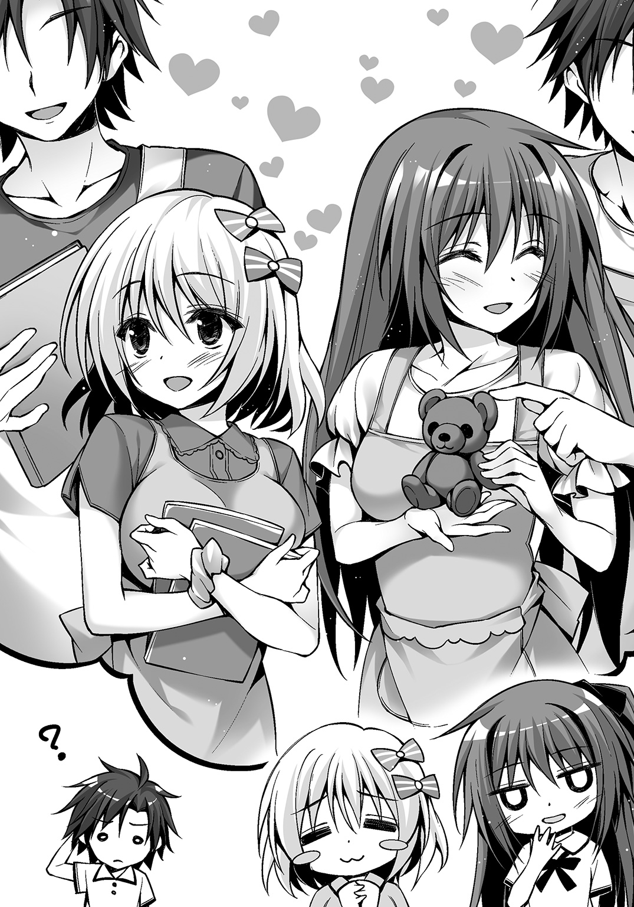
「あう......」
「はわわわわ......」
よくわかっていない廻人だったが、
「ま、いいや！ それじゃあ明日から、トップチームに向けてトレーニング――」
「――なんだけど」
言いかけた廻人を、月佳が制した。
「一応、騒ぎを起こしたことは事実だから......校長先生にこうも言われたの。夏休みの間、響刻構成体を使うなって」
つまり、トレーニングをするな、という意味だ。
反省しろということなのだろう。
その効果はてきめんだ。
三人の意欲をごっそりと削いでいったのだから。
「............」
「............」
「............」
ジュワジュワジュワと外からはセミの鳴き声が聞こえてくる。
三人は黙りこくっていた――が、
「わかった」
最初に言ったのは誰あろう廻人だ。
一番トレーニングをしたがっていた廻人だった。
「そんなら俺にも考えがある――」
考え――そう、廻人には考えがあった。
夏休みの間、トレーニングができないことは痛い。
だけれど響刻構成体を使うことだけがシューターに必要な要素ではない。
トリニティに一番大事なのは、
「結束だよ」
奇跡のようなバランスで成り立っているチーム。
これを維持するために必要なのは結束だ。
「だから――遊ぼうぜ！」
廻人が声を上げると、
「え？」
「ふぇ？」
女子二名が素っ頓狂な声を上げる。
「だーかーらー、遊ぼうぜ。三人でさ！ そーいうのもたまには悪くねーじゃん。その代わり九月からはもりもりトレーニングしようぜ！」
トリニティの夏は、急遽、遊ぶ夏に変更となったのである。
Ⅲ
「第一回、トリニティ『夏になにして遊ぶか考える会』の開会を宣言しまーす」
廻人は言って両腕を広げたが、拍手も起きなければ歓声もなかった。むしろ、氷より冷たい月佳の視線が寄せられ、絵に描いたような困惑を顔に浮かべたアリスがいるだけだった。
「ノリが悪いぞ！」
「責任の転嫁をしないで。いきなりワケのわからないこと言い出した廻人が悪いんだから」
「ふぇぇ」
三人がいるのは寮のカフェテリアだった。
夏休みに入り帰省した生徒も多い。
空席ばかりのテーブル。
廻人たちはその一角に集まっていた。
「で、どこに行く？ なんつったって夏休みだからなー。休みはありあまってるよなー」
「......そう言えば廻人って、ヘラとか直角とか、その辺と遊びに行ったりしないの？」
ヘラ。それはクラスメイトにしてヘラヘラしている男。
直角。それはクラス委員にして四角四面の男。
このふたりに輝井も含めて、星降島では同じコテージで寝起きした。
「んー。ヘラはさ、『夏だぜ！ 女の子たちが俺を呼んでるぜ！ くう危険な火遊びしにいかなくっちゃなあ！ 一夜限りの花火を打ち上げなきゃなあ！』って言ってたのを最後に見たっきりだな」
「そ、そう。廻人は誘われなかったの？」
軽く月佳が引いているのもやむなしというものだ。
「俺はトレーニングやるって言ったら、なんか虫でも見るような目つきになって『あ、そ』って言ってた」
「ふぇぇ......」
「直角は九月から輝井と同じチームに入るから、夏休みの間に調整するって言ってた」
「......なるほど」
月佳が神妙な顔でうなずく。
言わずとも廻人にもわかる。彼女がなにを考えているか。
輝井が組むチームは、響刻値Ａマイナス以上というメンバーを絞り込んだチームだ。もちろん狙っているのは同じ黄金獅子。
「強敵ですぅ......」
「ま、そーだな。でも――」
「トップチームになるのはトリニティよ」
自信に満ちた月佳の言葉。
「――はいぃっ！」
アリスは釣られて力強い返事をした。
この三人のチームを維持すること。生体響刻武装を使ったトレーニングができないなら、連携を深めること。それらが今、やれることだ。
「じゃあ、遊びにいく場所は決まりだな！」
いきなり廻人が言ったので、月佳とアリスはきょとんとした。
「夏と言ったらこれだよな」
廻人はイスの下から取り出した――緑色のプラスチックケース。多くの隙間が空いており、通気性がよい。真ん中には透明なプラスチックが窓のようにはめ込んである――。
「む・し・と・り――へぶぁっ」
月佳のチョップが廻人の脳天に叩き込まれた。
「小学生かっ！ 喜ぶわけないでしょ!? 私たちが、カブトムシとかクワガタ捕まえてっ!!」
「え......喜ばないの？」
「喜ばない！」
「じゃ、じゃあ月佳はなにしたらいいと思うんだよ。俺たち三人で」
「決まってるじゃない」
話を振られて月佳の顔が輝く。
「気持ちはスカッとするし、最近では女性のプレイ人口が増えている――」
プレイ人口、という言葉にイヤな予感がするアリスである。
だけれど月佳は頰を紅潮させ、声高に言う。
「バン！ バン！ バーン！ 銃を撃ちまくって気分爽快！ そう、クレー射――」
「却下」
「――撃で......えっ」
「えっ、じゃない。却下に決まってるだろ」
「だ、だって、楽しいのよ。飛んでるクレーを撃ち落としていくのって」
「アリスを見ろ、震えてるぞ」
銃を撃ちまくる、と聞いてアリスはすでにびびっていた。
「つーか月佳、クレー射撃の解説でテンション上がりすぎだろ。立ち上がって拳を振って。みんなこっち見てるぞ」
確かに他のテーブルからこちらへ「なんだなんだ」というような視線が向けられていた。
月佳は耳まで真っ赤になってイスにすとんと腰を下ろした。
「きゃ、却下でいいです......」
消え入りそうな声だった。
「さて......」
廻人と月佳はアリスを見た。
「アリスは？」
「ふぇ？」
「なにしたい。俺たち三人で」
問われ、アリスは両手の人差し指をくっつけては離し、離してはくっつけた。
「あ、あのぅ......実はぁ、アリス、とってもいいアイディアがありまして......」
「おっ。マジかよ。教えてくれよ」
「うんうん。聞きたい。なに？」
ふたりが前のめりになったことに気をよくしたアリスは、ポーチから三枚のチケットを取り出した。
廻人と月佳が文字に目を通す――。
「『世界の包丁展示会』......？」
「『肉も魚もなんでも切れる！ あなただけの一本を見つけられる』......？」
「はいぃ！ どうしても行ってみたかったんですぅ！ 包丁だけじゃなくてあらゆる種類の刃物が集まるところで、豚足を切り落とすナタみたいなのもあるんです！」
廻人は真顔になった。
「アリス」
「はぃ！」
「俺の人生で、今までもこれからも、豚足を切り落とすような事態に遭遇するとは思えない」
「ふぇぇっ!?」
アリスが救いを求めて月佳を見ると、
「りょ、料理はできるようになりたい、かも？ でも最初はもっとちっぽけなやつでいいよ、うん......」
フォローしたのかしていないのかわからない言葉が返ってきた。
結局三人ともやりたいことはバラバラだった。
うーん......と首をひねること五分。
「あ、こうしたらどう？」
月佳がぽん、と手を叩いた。
彼女の提案は――廻人とアリスにも、受け入れられた。
そのころ東京戦厄高校、職員室。
ほとんどの教員が帰宅した室内は閑散としていた。
迅引科の教師であり廻人たちの担任でもある仁科は休憩スペースのソファに座ってマグカップのコーヒーをすすっていた。
「ふぅん......」
テレビが点いていた。ニュース番組でキャスターが語っているのは立川基地の自衛隊シューターが殺された事件だった。
いまだ、解決されていない。災厄は逃げている。どこに行ったのか。不安がる近隣住民の声。番組の内容は自衛隊や災厄技術庁へ批判的な内容になっていく。
そのとき仁科のスマートフォンが着信した。
表示された番号を、仁科は登録していない。
だがその番号がどこのものか、知っている――覚えている。
それは災厄技術庁内の番号――。
最初、無視しようと思って仁科はスマートフォンを捨て置いた。だけれど一度切れたと思うとまたもかかってくる。それを三度繰り返した挙げ句、ついに仁科は応答した。
「......しつこいぞ。私に連絡してくるってことは、どうせ面倒ごとの押しつけだろう？ 応用技術第一課の案件なんてろくでもないことばっかりだ」
苛立ちを隠そうともせず仁科は電話の相手へと言う。
相手が何事かを言った。
「ふん......だったら最初から第四課に話をすればいい。私はもう辞めた人間だよ。そんな人間の意見を聞いてどうする？」
またも相手が何事かを言った。
仁科の目が細められる。
「......わかった。それなら私なりに調べてやる」
ちっ、と舌打ちをして仁科は立ち上がった。
Ⅳ
「ある意味幸運だったってことでいいんじゃね？ 誰も食べずに済んだんだしさあ」
「あなた、それって私を責めてるの？」
「の、のんびり、しましょう。ケンカしないでぇ」
「......でぇもなあ、あんなことが起きるなんて予想外もいいとこだろ」
「ろくに経験もないんだからしょうがないでしょ！」
「しょ......しょ......」
「アリス、『よ』でもいいんだぞ」
「はいぃ......えっと、『よ』く考えてみるとアリスの説明が悪かったかもしれませんしぃ......」
「アリスちゃんは悪くないわ」
「おい、月佳、順番守れよ」
「順番なんていいのよ、もう！ まだるっこしい！」
廻人たちはバスに揺られていた。
制服は着ていない。三人とも私服である。
廻人はＴシャツにカーゴパンツ、それにトレッキングブーツというスタイルで、かなりの悪路でも問題なく歩けそうなほど。
反対に月佳はオフホワイトのブラウスに、ふわりとしたスカートを穿いている。足下はミュールなので跳んだり跳ねたりは当然できない。
アリスはボーダーのシャツの下に、ガウチョパンツ。頭にキャップでも載せたら少年に見間違われそうだ。
さっきから三人が話しているのは、お互いの言葉の最後の文字から話をつなげていくという、しりとりである。
なぜこんなことをやっているのかと言えば――いい加減、話が尽きてきたからである。
鎌倉駅から東京駅へ出て、そこから下りの電車に乗る。終点に着くと次の電車に乗ってさらに終点まで。
その時点ですでに田舎だった。駅前に小さな商店があるだけで畑と山しかないところだ。
バスは、一日に四本しか走っていなかった。
乗り込むとさらに山の奥まで連れていかれるのである。
朝早く出てきたのにそろそろ正午だ。
田舎になったなー、と思うとさらに田舎へと行く。先ほどから人家は見ていない。月佳は不安に思ったけれどバスが通っているので一応人間が住む場所へ続いているのだろう。もっともこんな秘境が関東にあったとは知らなかったけれど。
「つーか......虫捕りがこんなことになるとはなぁ......」
廻人たちが向かっているのは、もちろん虫捕りのためではない。
「いいじゃない。アリスちゃんの『包丁』が『料理教室』になったんだし、似たようなものでしょ」
夏休みになにをして遊ぶか――月佳が出した妥協案は、それぞれの提案をベースにして三人でも楽しめるものにしようということだった。
アリスが料理好きなのは知っていたから、それなら三人で「料理教室」に行ってみてはどうかというわけだ。
ただ――月佳が電子レンジで食材を爆発させ、大騒ぎになった。
先ほど廻人が言っていたのはそのことだった。
なにをどうやったら爆発させられたのかはわからなかったが、そんな代物を人間が口にせずに済んで幸運だった――と。
「でもでも、アリスは楽しみです。廻人くんがどんなところで生まれ育ったのか」
「そうね。私も興味があるわ。あなたみたいながさつな人を生み出す環境に」
「それ......どーゆー意味だよ......」
廻人の提案「虫捕り」は、「廻人の実家にお邪魔する」となった。
「あのさ。言っとくけど、なにがあっても驚くなよ？ 不愉快になるなよ？」
「わかってるわよ。その話、ずっとするわね。もう何度も聞いたわ」
「特に月佳。お前が心配なんだよ」
「......それこそどういう意味よ」
三人はやがてあるバス停で降りた。終点のふたつ手前だった。
「ここ？ なにもないじゃない」
川沿いの道だった。右を見ても山、左を見ても山である。
バス停だけがぽつんとある。
川に、手すりもない小さな橋がかかっているが、橋を渡った先は舗装されていない道が続いていた。
「ここからは――あ、来た」
廻人が手を挙げた。
舗装されていない山道から四輪駆動の自動車が飛び出してきた。
橋の両端ギリギリにタイヤを載せて、一〇センチずれたら落ちそうなところをまったく減速せず走ってくる。
「おおおおい！ 廻人かぁ！ よく帰ってき――」
橋を渡りきると車は停まり、中から、首にタオルを巻いた、作業着姿の男が出てきた。
三〇前後であろう彼は、黒々と日に焼けていた。
廻人へ向けて振ろうとした手は止まっていた。
彼の目は、月佳とアリスに釘付けになっていた。
「叔父さん、久しぶり。こっちがチームメンバーの――」
廻人の叔父は車に飛び込むと無線機を取り出し、
「一大事だぁ!! 廻人が嫁っこ連れてきたど!! 親類全部集めろ!! しかも嫁っこはふたりおる!!」
がなり立てた。
「......今、あの人『嫁』がどうとか言ってなかった？」
廻人がため息をついた。
「だから言ったろ。なにがあっても驚くな、不愉快になるな、って......」
とんでもないスピードで林道を突き進み、ぼんぼん車が跳ねるものだから慣れない月佳とアリスはかなり尻が痛くなった。
自動車は山間にぽっかりとできた盆地へとやってきた。広がる田んぼと、山の斜面に作られた畑。三〇に満たない世帯からなる集落がここにはあった。
「うわあ......」
月佳が声を漏らす。
車のクーラーが壊れているから窓を開け放っていた。この辺りは鎌倉区に比べて気温がぐっと低いようだ。流れ込んでくる空気は清浄だ。吸い込むと心地よかった。
「ふぇぇ......ケータイが圏外ですぅ......」
「電話だって通じるようになったの、俺が小学生のときだしなー」
助手席の廻人がのんびり言う。
吹き込んでくる風に、彼の髪がなびいている。
気持ちよさそうに目を閉じていた。
廻人の家にたどり着くと、人だかりに出迎えられた。みんなよく日に焼けていた。おそらく集落全員が集まったのではないかというほどで、小さい子は背伸びをして、廻人と同い年くらいの少年少女はどことなくつまらなさそうに――そのくせ興味はあるように横目でちらちら見ており――大人たちは好奇心剝き出しで車が近づいてくるのを待っていた。
「おーっす。みんなー、帰ったー」
廻人が言って、舗装されていない道路に降り立つと、
「うおあ!?」
横に突き飛ばされた。
車から降りてきた月佳とアリスが取り囲まれる。
「ほおおおー！ この子らが都会の子かぁ」
「肌が白いのう。都会は雪でも降っとるんか」
「なんじゃ、身体もほっそいな」
「どっち？ ねえ、廻人の嫁っこどっち？」
矢継ぎ早に、というより、なんの脈絡もなく浴びせかけられる質問。
「え？ え？ え？」
「ふぇぇ......」
月佳ですら困惑しアリスはすでに涙目になっていると、
「だああ！ テンション上がってんじゃねーよ！ 離れろ、びっくりしてんだろ！」
路肩から畑に転落していた廻人が起き上がり叫ぶ。
「なんじゃ、廻人ォ......お前、都会でちょっと過ごしたからとえらそーに」
「そうだそうだ。ばあちゃんが野菜送るっつったら断ったそうじゃねーか」
「うっせー！ 寮でメシ食うならカフェテリアで十分なんだよ」
すると、村の住民たちは視線を交わし合い、
「わっはっはっは！ かふぇてりあー！ 廻人がかふぇてりあー！」
カフェテリア、という言葉を連呼して爆笑の渦に包まれた。
廻人が真っ赤になってぷるぷる震える。
あ、廻人もこういう顔をするんだ、と月佳が感じいっていると、
「てめーらさっさと野良作業に戻れよ!! 長旅で疲れてんだよッ!!」
廻人は人波をかき分け、月佳とアリスの荷物をつかむや両肩に担いで歩き出した。
月佳とアリスもそれに続いて歩いていく。
「ヒュー、廻人が女子の荷物を持ってくとはねぇ」
誰かが冷やかすとみんなまたどっと笑った。
すぐそこが廻人の家だった。
広々とした平屋で、縁側の障子は開け放たれていた。
二〇畳はある居間。座卓には切られたスイカが載せられてあった。
先ほど廻人の母が持ってきたもので――彼女を見たアリスは思ったものだ。廻人を女にして大きくしたような人だ、と。
「――怒ったか？」
親戚一同に挨拶してきたらしい廻人が、居間にやってくるなり月佳とアリスに言った。
「なにが？」
「あいつら、別に悪気はないんだ。ただ、この村によそからお客が来るなんて珍しいことだし......ちょっと過剰に喜んじゃうんだ」
「怒ったりするわけないじゃない」
ぷっ、と月佳が噴き出した。
「ね、アリスちゃん」
「もちろんです。廻人くん、こういうところで育ったんですねぇ」
「そうそう。だからこんなんなっちゃったんだーって私思ったもん」
「おい、こんなんなっちゃったって――ま、怒ってないならいいや」
廻人は手を伸ばしてスイカを手にした。先ほど月佳たちも食べたが、甘すぎず、いくらでも食べられそうな味だった。
「あ、そういや夕飯はうちの家族だけじゃなくて親戚も来るってさ」
廻人がスイカを食べつつ言うと、
「さっきの人たちの中で、廻人の親戚は何人くらいいるの？」
「全員だよ。大騒ぎになる......とあらかじめ言っとく」
休む間もなく夕飯の準備が始まった。
客人は休んでて、と言われても、さすがにそうはいかないと思った月佳たちである。
それもそのはずで、夕飯に来る人数が半端ないのだ。
月佳は廻人とともにテーブルを出したり座布団を用意したりする。アリスは台所へ入って廻人の母、祖母の隣で包丁を振るい称賛を浴びた。
隣の集落に行っていたらしい廻人の父や兄たちが帰ってくると、彼らはお裾分けをされたというイノシシの肉を持ってきた。アリスが目を輝かせた。
「廻人！ 裏行ってトウモロコシ取ってきな！」
母の命令で廻人が家から出ていくと、
「待って――私もいっしょに行く」
月佳がついてきた。
「どうしたんだよ？ 家で休んでていいぞ」
「休めないでしょ。アリスちゃんがあんなに働いてるのに......」
料理はからきしダメな月佳である。
「じゃ、これかぶっとけよ。陽射しが強いからさ」
渡された、麦わら帽子。
「......どう？」
そっと頭に載せ、上目遣いにたずねてくる月佳。
絵になる――。
シューターになっても災厄技術庁の広告塔にさせられるんじゃないかと思うほどに、月佳は、顔も髪もスタイルも整っている。
家にあったぼろぼろの麦わら帽子すら、そういうオシャレなのだ、と言われれば廻人は納得してしまうだろう。
「ま、まぁ、陽射し遮るだけだからどうもクソもねーよ」
「むぅ」
ぷくーっと頰をふくらませる月佳。そんな仕草も可愛らしい。
「あとお前、サンダルじゃ歩けないぞ」
「サンダルじゃなくてミュール」
「これ履けよ」
訂正されてもサンダルの種類なんて覚える気がない廻人は、月佳にクロックスを勧めた。比較的新しい、廻人の母のもののようで、月佳の髪と同じ赤い色をしていた。
「ふふ。歩きやすい」
「行くぞ」
「はーい」
素直にクロックスを履いて廻人についていく。
家の裏には山があり、斜面には畑があった。
すっくと空へと伸びる形のよいトウモロコシが並んでいた。
「わあ......こんなにおひげが生えてるのね」
葉に包まれ、先端から噴出するように生えているトウモロコシのヒゲ。
調理済みのものしか見たことがない月佳にとっては不思議な体験だ。
「月佳月佳」
廻人はそんな月佳の背後から声をかける。
「武装召喚！」
両手にトウモロコシを一本ずつ握り、構えた姿。
「ぷっ――くっだらない」
「なんだよ、今笑ったじゃん」
「笑ってませんー」
「ウソつくなって。ほら、月佳も二本持ってみろよ。俺の気持ちわかるぞ」
「やらないわよ、バカ」
バカと言いながらも月佳は楽しそうだった。
一〇本ほどのトウモロコシをざるに載せ、家へと戻っていく。
すると、
「廻人にーちゃん！」
小さな子どもの声が聞こえたかと思うと、
「きゃあっ!?」
声の方角から水が降ってきた。
降り注ぐ水の向こうには、ホースで放水している子どもたちがいた。
満面の笑みで。
「てめぇら夏休みの宿題でもやってろ!!」
「うわあ、廻人にーちゃんが怒った！」
「怒ったぁ！」
きゃっきゃ言いながら彼らは蜘蛛の子を散らすように逃げていった。
「大丈夫か、月佳？」
「うん、水をかけられただけだから。あー、びっくりした」
「!?」
月佳の様子を見た廻人もびっくりした。
子どもたちはただ水をかけただけだ。そう、水をかけたのだ――真っ白の、ブラウスを着ている月佳に。
肌に吸いつくように濡れたブラウスの下――はっきりと形が確認できるブラジャー。その色は薄いピンク色。
「............？」
月佳は廻人の様子がおかしいことに気づき、彼の視線が月佳の顔ではなくその下に向いているとわかり――自分の胸元を見た。
「..................成家くん」
感情の一切消えた、声。
夏の盛りであるはずなのに廻人は凍てつく吹雪のごとき冷気を感じた――。
「よっしゃ廻人、ビール持ってこいや！ ......ってお前どうしたんだよ、その顔は」
ふだんから話し声が常人の大音声である廻人の父はそう言うと、宴席の一番いいところにどっかと座った。目の前にはゆでたトウモロコシと枝豆が盛られてある。
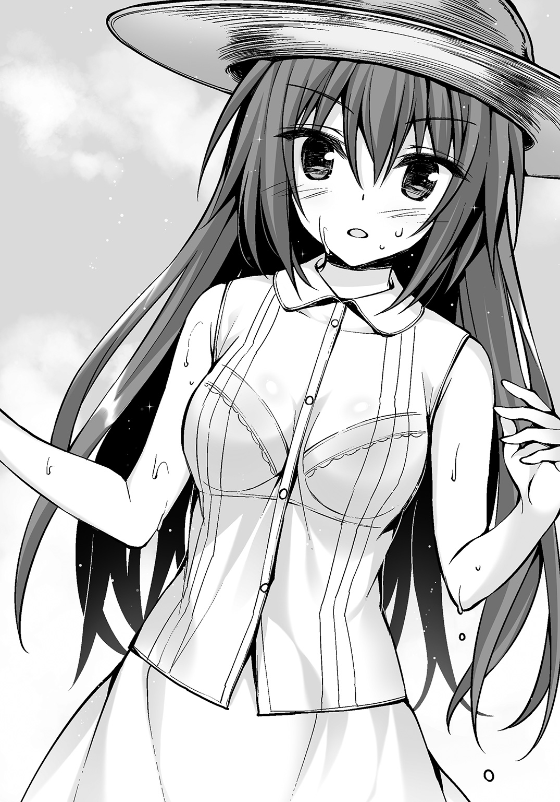
ここでは廻人は荷物の運び屋だ。母に言われて食材を運び、父に言われビールを運ぶ。日頃こき使われている兄たちはその役目が廻人に回ったとわかるとおおいに喜んで部屋にこもってゲームをしたりマンガを読んだりした。
「うるせえ。黙って酒飲んでろ」
「はっはーん......なるほどぉ？」
父は、廻人の赤い頰が、手のひらの形になっていると気づいたようだ。
「なるほどじゃねえよ酔っ払い」
「はっはーん？」
「うるせえっつってんだろ！」
ドン、とビール瓶を父の前に置いて廻人は逃げるように去っていった。
やがて日が暮れてくると、ぞろぞろと廻人の家に親戚がやってくる。
「ま、まさか、集落の全員が来るわけじゃないですよねぇ......？」
アリスが戦々恐々としているとその「まさか」だった。
屋内だけでなく庭にもテーブルが設置されていた。用意した料理は明らかに足りなかったが親戚たちが持ち寄るので問題ないらしい。
ナスにトマト、オクラといった夏野菜を使ったカレー。イノシシは手っ取り早く庭でバーベキューだ。独特の味付けで煮込んだ川魚や、鶏の唐揚げに手作りの餃子などもある。
最終的には広々としていたテーブルが料理によって埋め尽くされた。
「そんじゃ、ま――」
いつの間にか現れた廻人の祖父は誰よりも日に焼け誰よりも精悍な顔つきだった。
「いただきまァァす！」
祖父の発声――と言うより怒号――によって宴会はスタートする。
発声を終えると祖父はそのまま後ろにぶっ倒れたが誰も気にしなかった。しばらくすると祖父は起き上がって宴席からも消えていく。
酒を飲める男たちは集まってビールを浴びるように飲み始め、女たちは集まってわいわいとうわさ話で盛り上がり――三人並んだ廻人たちは騒ぎに取り残されたようにぽつんと座っていた。
「さ、じゃあ俺たちも食うか」
「あっ......うん」
質問攻めにされるのではないか、とか心配していた月佳だったが特になにも起きなかったことに拍子抜けだった。
色とりどりの料理が並んでいる。月佳は、ナスの油炒めに箸をつけた。
「――――」
思いがけず言葉を失った。
火が通ってトロリとしているナス。しかし煮崩れを起こすことはない。
口に含むと熱々のナスがほどけるように広がっていき、熱を加えることによって引き立てられた優しい甘みがじゅわっと舌に絡みつく。
「うめぇか？」
正面に座っている廻人の父は、優しく微笑んでいた。
廻人は母親似だというのが第一印象だったけれど、父の笑顔は廻人の笑顔とダブる。
「はい、とっても美味しいです」
「そうかそうか――」
廻人の父は、横でカレーをがっついている廻人にちらりと視線をやり、
「で、どっちの子が廻人のガールフレンドなんだ？」
「ブホォッ」
廻人の口からカレーが噴出し、廻人の正面に座っている年の離れた兄に直撃する。てめーなにすんだこの野郎と兄が騒ぎだしたが無視して、
「親父、なに言ってんだよ!? そーいうんじゃねーって言っただろーが！」
廻人はあわてて抗議する。
「なんだ、違うのか？」
意外そうな顔の父と、
「さっすが成家の大黒柱だぁ。宴会始まってソッコー聞いちまったぞ」
ざわつくギャラリー。
「あ、あああああのあの、わ、私たち、その、廻人くんとはただのチームメイトで......ね、ねっ？ アリスちゃん！」
「............」
不意打ちにたじろぐ月佳を、横目でちらりと見ているアリスがいた。
「――アリスちゃん？」
「はいっ。アリスたちはとっても仲良しですよねっ」
にこやかにアリスは言った。
Ⅴ
日はとっぷりと暮れて、小学生までの小さな子たちは家へと帰っていったが宴会はまだ続いていた。
庭のテーブルは撤去されていた。
アリスはひとり、外へ出ていた。
近くを流れる小川のせせらぎが聞こえていた。半袖では肌寒いほどに気温は下がっている。鎌倉区とは全然違う。
なにより違うのが、
「わぁ――きれいね」
アリスの後から外へと出てきたのは月佳だ。
空を見上げていた。
信じられないくらい、星で埋め尽くされた空を。
山の稜線で切られた夜空にははっきりと天の川が見えた。
「月佳ちゃんも、こっちに来たんですかぁ？」
「うん。ちょっと疲れちゃったね......」
月佳は苦笑する。彼女が言っているのは、結局質問攻めにされたことだった。
廻人の恋人ではないと月佳が発言するや、恋人に立候補する少年が出てきて「お断りします」と言下に切って捨てた。さらには月佳が実家と絶縁状態にあるとわかるや、養子に取ると言いだすおじさんもいたがそちらも丁重にお断りした。
「月佳ちゃん、大人気でしたねぇ」
「アリスちゃんこそ――」
アリスはアリスで台所での活躍から、廻人の母を始めおばさんたちから絶大な支持を受けていた。「嫁に取るなら絶対この子」というお墨付きまでもらい、お見合いをしないかとまで勧められたが、さすがに高校生だからと断った。すると、成人したら必ず連絡するようにと念を押される始末だ。
「なんていうか......あったかいね」
月佳とアリスは並んで夜空を見上げた。
「......はい。とっても」
ふたりは同じ夜空を見上げ、同じ少年のことを思っていた。
だけれど考えている内容は違った。
（月佳ちゃん......やっぱり、廻人くんのことが好きなんですね）
南森に言われたときは半信半疑だった。
しかし今アリスは確信を持っている。月佳は、廻人が好きなのだと。
きれいで、頭がよくて、強くて、優しい――そんな月佳が、アリスは大好きだ。
恋のライバル、だなんて言うのもおこがましいと思う。
アリスの、廻人への想いでは負けないとしても――廻人ならどう考えても月佳を選ぶだろうとアリスは思う。
それに、南森の話。
（アリスが廻人くんに想いを寄せていたら......いつか、事故につながるかもしれません）
ケガで済むのならマシだ。でも、廻人か月佳、そのどちらかが――命を落としでもしたら。
堪えられない。
その問題を回避するためにできることは、ひとつ。
「月佳ちゃん」
「なあに？ アリスちゃん」
「アリスたち――ずっと同じチームでいられたらいいですね」
「ふふ、どうしたの急に。ま、廻人がバカやらない限りはうまくいくんじゃないかしら？」
軽く悪口を言いながらも、月佳はまんざらでもなさそうだった。
「きっと大丈夫です」
そう、きっと大丈夫だ。
このチームはずっと続けられる。
心に決めた。
（アリスは......あきらめます。廻人くんへの想いを）
月佳の想いも成就するはずだ。
廻人と月佳のカップルなんて、すばらしいじゃないか。
「......きっと、大丈夫です」
月佳に聞こえないくらいの声でもう一度つぶやいた。
これが一番の答えだとアリスは確信していた。
ただ、
「......アリスちゃん？ どうしたの......？」
ハッとして頰に手をやる。
濡れていた。
ひとしずく、まぶたからこぼれたみたいだった。
「あ、あははは、目にゴミが入っちゃったみたいです」
「ハンカチ要る？」
「大丈夫です。それより、そろそろ中に戻りませんか？」
「そうだね――」
月佳がきびすを返して家へと戻っていく。
その後ろ姿を見つめる。
大好きな友だち。
大好きなチームメイト。
大好きな月佳。
「これで......いいんですよ」
胸がちくちくする。
苦しい。
でも、きっと――この苦しさも治まっていくはず。
「............」
ぎゅっ、と右手を胸の前で握りしめてから、アリスは月佳を追って家の中へと戻った。
Ⅵ
月佳が提案した「クレー射撃」に代わるもの――。
なかなかこれといったものがなかったけれど、ついにアリスが発見した。
「......マジかよ」
その日、関東地方はカラッと晴れた。
車輪がレールを走る轟音とともに人々の「きゃー」という歓声。
軽快な音楽と小さい子どもたちの笑い声。
この暑い中、着ぐるみをかぶって風船を配る人。
そう――遊園地である。
「......ほ、ほんとに入るわけ？ ここ......」
三人の目の前にあるのは――明るい雰囲気からはほど遠い、廃墟ビル（ふうの建物）だった。
「ゾンビハウス」と書かれた看板には、血のような手形がつけられており、はっきりと「一五歳未満は入場禁止」という注意書きまであった。
ネット上の評判では、「トラウマ注意」「ロッカー......ロッカーが......」「もう二度と行かない。近寄りもしない。絶対にだ！」など意味不明なものも含めて書き込み多数。
人気アトラクションだったらしいが、この遊園地は立川に近い場所にあった。災厄が逃げ出した事件があったせいで園内は空いていて、ここも並ばずに入れる。
「さっ、いってらっしゃいです！」
にこやかに送り出そうとするアリスに、
「いやいやいや、待て待て待て。どうしてアリスは来ないんだよ」
「え？ だって、ふたりでしか入れないみたいですし」
入場は一回二人までという制限があった。
「公平にジャンケンしましょ、ね？」
ホラーものがそんなに得意ではないのか、月佳も少し顔が青ざめている。
このアトラクションを見つけたとき、アリスは「これですぅ！」と思わずガッツポーズをしてしまったほどだった。
ふたりだけの空間、恐怖、密着......とくればカップル成立するしかない！ ――というのが数多の恋愛小説を読み込んできたアリスの結論である。
なので、ここでジャンケンをするなんていう選択肢はないんである。
「実は......」
「実は？」
「アリスは......」
「アリスは？」
「........................ゾンビアレルギーなんです」
精一杯深刻そうな声を振り絞って言った。
「......ゾンビアレルギー？」
「はぃ。ゾンビ的なものが近くに来るとじんましんを発症してしまって、最悪の場合は死に至るとお医者様に言われているんです」
「......マジで？」
「はぃ――ですからおふたりでどうぞですぅ！」
ふたりの背中をぐいぐい押していくアリス。
ゾンビアレルギーならなんでこんなとこ選んだんだよという顔を廻人はしていたがここは強引に進める。
「でも、ここ、射撃となんの関係も――」
言いかけた月佳の手に、
「はぃです」
銀色の拳銃を手渡した。
「弾丸の数は一二発です。ゾンビの脳天にぶっ放せば撃退できるという仕組みです。月佳ちゃんの腕なら余裕ですよね！」
「......アリスちゃん、下調べしすぎなんだけど......」
「それじゃぁ、いってらっしゃいです！」
こうして廻人と月佳はゾンビハウスに放り込まれた。
ゾンビハウスに入ったふたりは、手錠によってつながれる。
渡された拳銃はもちろん本物ではなく、低出力レーザーの照射装置が内蔵されている。レーザー光がゾンビの頭のセンサーに命中すればゾンビはその場で動きを止める。頭以外だとダメ。
「おお......すげぇな」
廻人と月佳が建物内に入ると後ろで鉄の扉が閉じられた。
ビルの廊下が目の前には続いているが、コンクリの壁はところどころ崩れている。明かりは、天井についている薄赤いランプだけだった。
中はひんやりと涼しい。
「じゃ、行ってみるか」
「............」
「月佳？」
「あ、う、うん」
手錠がかけられているのは廻人の右手と月佳の左手。射撃は月佳の得意分野なので、彼女の利き腕である右手をフリーにしようというわけだ。
しかし、なんだか月佳の様子がおかしいことに廻人は気づいた。
「なんか顔色悪くね？」
「べ、別に、顔色とかすごくふつうですけど？ なに言ってんだか。ゾンビなんて怖いわけないじゃない」
「いや、ゾンビの話なんてこれっぽっちもしてねーけど......」
「さっさとクリアしましょ！」
月佳が先に立って歩き出す。じゃらりと手錠が鳴って廻人も引っ張られるようについていく――矢先、
「きゃああああああ!?」
天井がパカリと開いてゾンビが逆さまに落ちてきた。
「来ないで来ないで来ないで来ないで！」
月佳が銃を撃ちまくる。
ガァンガァンと音がして、銃は割とそれっぽい感じだった。吊るされた状態のゾンビはぶるぶる震えるとそのまま動かなくなる。
ゾンビ――ゾンビ人形はなかなかの質感でできていた。
「おい、月佳、撃ちすぎ！ 月佳！」
「はぁ、はぁ、はぁ、はぁ......」
肩で息をする月佳を見て廻人は、
「――やっぱり止めようか。ここならすぐ戻れるし、出ようぜ」
「だ、大丈夫」
「大丈夫じゃねーだろ」
「平気よ！ うん、こういうびっくり系はずるいってだけ。驚いただけだもの」
月佳の負けず嫌いが始まったと廻人はため息をついた。
「わかったよ......それじゃ、マジで無理だと判断したらすぐに離脱するからな」
廻人は歩き出して、すぐに足を止めた。
「......月佳？」
「な、なによ」
「......いや、なんでもない」
手錠でつながれたふたりの手。
月佳の手が、廻人の手をにぎりしめていた。
ふたりは手をつないで奥へと進んでいく。
造りはビルだったが、中は迷路のようになっていた。分岐路があったり、ドアを開いてオフィスを抜けていったりする。
オフィスエリアは天井に明かりがない代わりに、パソコンのディスプレイが光源になっていたりとなかなか凝っていた。
そんなところを歩きながら、廻人は後悔していた。
やっぱり最初のところで引き返しておくべきだったと。
「きゃああああ!?」「もうやだー!!」「来ないでよぉぉぉ!?」「きゃあああああ!!」とずっと月佳の口からは叫び声が飛び出し続けていた。すぐそばで聞いているものだから廻人の右耳はそろそろ聴覚が麻痺するところだった。
「！」
細長いロッカールームに入ったところだった。
右にロッカーが並び、左は壁。
天井の蛍光灯が薄暗く明滅している。
そこで、前と後ろから足音が聞こえてきたのだ。
「月佳、銃は――」
とっくに弾丸切れだった。
「廻人ぉ......」
月佳が廻人の服を引っ張る。
ゾンビが迫ってくる。
逃げ場も、武器もない――。
「ここだ」
廻人はロッカーに手をかけた。開かない。隣を確認する。開かない。その次――開いた。
ギリギリ人間ふたりが立って入れるスペース。
「早く」
廻人と月佳はロッカーに入り、ドアを閉めた。
目の高さにスリット状の穴があり、そこから弱々しい光が入り込んでくる。
足音が近い。
「ウウウウウウ......」
密着する、ふたり。
作り物のアトラクションだとわかっているのに、出来の良さや月佳のビビリ具合から廻人までも緊張してきた。
ガチャガチャガチャ、と音が鳴る。ロッカーを確かめているのだ。
その音はロッカーひとつぶんずつ近づいてくる。
ついに廻人たちの隠れているひとつ横のロッカーで音が鳴った。
月佳が廻人の腕にしがみつく。
「............」
「............」
だが、廻人たちのロッカーはいつまで経ってもなにも起きない。
空調のゴオオという音だけが聞こえてくる。
「!?」
直後、ロッカーのドア越しに現れるゾンビの顔。
目は白く濁り、頰は破れて歯がのぞいている。
廻人ですら声を上げそうになったのをギリギリこらえ――月佳はさっきからずっと目を閉じているのでセーフだったようだ。
ゾンビはふたりがロッカーの中にいることを知っているのか知らないのか、そのままふいっと顔を背けると、歩き出す。
足音が遠ざかっていく――やがて聞こえなくなった。
「ふぅ――」
身体から一気に力が抜けた。それは月佳も同じだったようで、
「おい、月佳......おいって！」
気でも失うように崩れ落ちそうになる。廻人が抱き留めると月佳の額が廻人の肩にこつんと当たった。
「だ、大丈夫だから、ほんと......ちょっと貧血みたい」
「だよな、は、早くここから出よう」
廻人の声がうわずる。というのも狭いロッカー内の無理な体勢のせいで、月佳と密着していることに今さらながら気がついたからだ。
足と足が絡み合って、柔らかくすべすべの月佳の太ももを意識してしまうし、腕には胸のふくらみが当たっている。アリスに比べれば小さいけれどもちゃんと大きさを感じる。
「あ、あの、月佳、そっちに把手があるから......開けてくれよ」
「うーん......」
「月佳？ げ、月佳さん？」
酸欠なのかもしれない。だとしたら、なおのこと早く出なければならない。
「し、失礼しますっ！」
廻人は月佳を強く抱きしめて彼女の身体を扉から引き離し、手を把手へと伸ばす。
「うっ......ぁん」
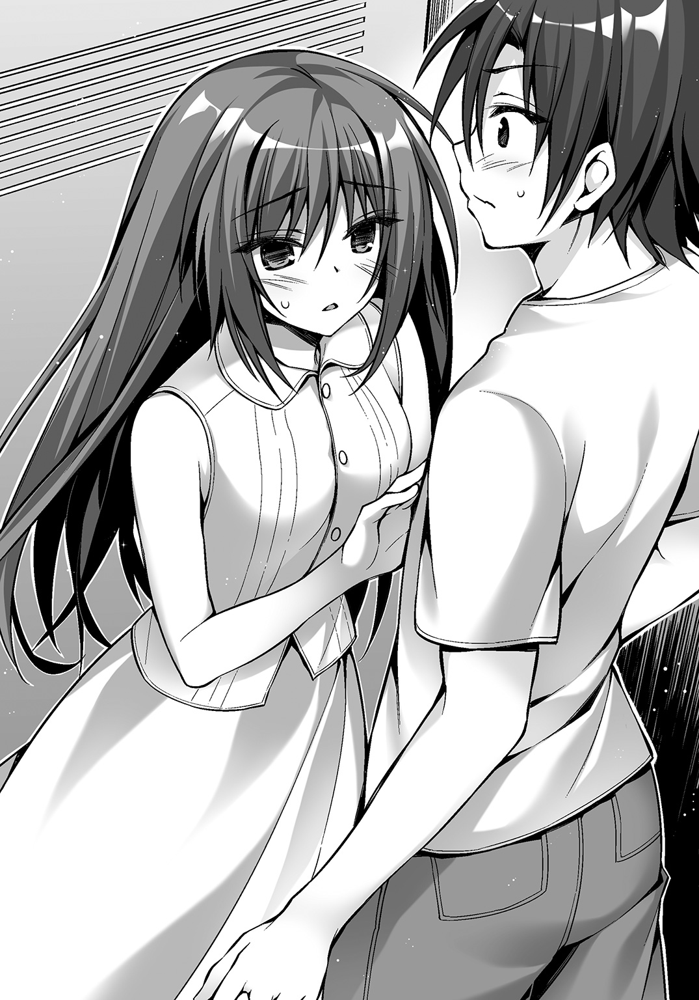
月佳のうめき声が耳元で聞こえる。
「も、もうちょい......」
腕を伸ばす。指先が把手に触れる。
ちょっと感じるとかそういう次元ではもはやない。月佳の胸の膨らみが廻人の身体に当たっていたし、線の細い彼女の柔らかな身体をはっきりと感じた。
がちゃり――。
「ぶはっ！」
ロッカーのドアが開いて、転げるように出ていくふたり。
急に涼しい風に包まれる。
「よ、よし、これで大丈夫――って、月佳？」
月佳がぐったりしたまま動かない。
「これやべーんじゃ......ちょっと誰か！ 誰かいませんかー!!」
廻人が大声を出すと専用の通路から係員が走ってきた。
見た目がゾンビだったもので廻人は叫び声を上げた。
Ⅶ
同時刻、東京戦厄高校。
駐車場に入ってきた一台のバイク。
近年の流行デザインである流線型からはほど遠い、無骨な造りのアメリカンバイクだ。
腹の奥底に響くような重低音をエンジンが発している。
乗っていた男は駐車場のど真ん中に停めるとヘルメットをシートに置いて裏手の入り口へと向かった。
だらりとしたタンクトップに、くたびれたジーンズ。カウボーイブーツも年季が入っている。
職員専用の入り口に立っていたのは、仁科だった。
「お出迎えとは恐れ入るね、先生」
「下品なエンジン音が聞こえたからね」
答えた仁科は深刻な表情だった。
「詳しい話をするから、入って」
「ひ、ひどい目に遭った......」
ゾンビハウスからようやく抜け出した。
ベンチにぐったりとしている月佳は、やはり貧血を起こしていたらしい。
ゾンビが怖かったのもそうだけれど最近眠りが浅いようで、寝不足も貧血の原因だった。
家のこと、将来のことがやはり気になるのだろう。
「あ、あぅぅ......想像以上でしたか」
「私も......ゾンビアレルギーになりそうよ......」
「ごめんなさぃ......。月佳ちゃん、なにか飲み物とか欲しくないですかぁ？」
「それじゃ――」
月佳のリクエストでアリスはソフトクリームを買った。
「私、もう少し休んでるからふたりで遊んできていいよ。せっかく遊園地来たんだしさ」
ソフトクリームの効果か多少顔色がよくなった月佳が言う。
「そうか？ それなら行ってこようか、アリス」
「え!? で、で、でも――月佳ちゃんを置いては行けません」
「子どもじゃないんだし、私は平気よ」
「あぅぅ」
そうじゃなくて、廻人との仲を深めるチャンスなのに――。
「ほら、アリス」
廻人に促され、渋々アリスもベンチから立ち上がる。
すると月佳が言った。
「廻人......アリスちゃんに変なことしたらタダじゃおかないから」
「へ!?」
「いくら緊急時だからって......さっきのこと、許してないからね」
月佳が頰を赤くする。
ゾンビハウスの中でなにが起きたのかを知らないアリスはきょとんとするだけだった。
「ほ、ほら、アリス、行こうぜ！」
廻人とアリスは月佳から離れて歩き出す。
「廻人くん、今のって――」
「な、なんのことだろうなあ？ 俺にはわからないなあ？」
すっとぼける廻人であるが、なんらかの進展があったのだろう。ゾンビハウス作戦も多少は成功したのだ。
「............」
でも――もやもやとした感情が胸に溜まっていく。
この感情の正体はわかっている。
嫉妬だ。
バカだ、と思う。自分であきらめると決めたのに、あきらめきれていないのだから。
「――月佳はさ、月佳なりに気を遣ってるんだよな。俺たちにふたりで遊んでこいって言ったの。自分の家庭の事情に俺やアリスを巻き込んだって思ってるから」
「え？ あ、は、はぃ、そうですよね......」
「？ どうした、アリス」
「え、えとえと、なんでもないです！ それより......どうしましょぅか」
「んー......そうだな。俺たちアイス持ってるしな」
月佳と同じくソフトクリームを手にしているふたりである。
「ソフトクリームを持ったまま乗れるのなんて――いや、あるぞ！」
廻人がパチンと指を鳴らした。
ふたりがやってきたのは観覧車だ。
係員が「落とさないようにくれぐれも気をつけてくださいね」と言ったものの乗ることは問題ないようだった。
こちらはなかなか人がいるようで、小さい子どもたちが並んでキャッキャと騒いでいた。
「か、観覧車ですかぁ......？」
「あれ、イヤ？」
「えっと......イヤ、ではないんですけど......」
廻人とふたりきりになるシチュエーション。イヤなわけがない。
でもこうなるべきは自分ではなく月佳だ。
「ほら、俺たちの番だ」
廻人がさっさと歩いていくので仕方なくアリスは後ろをついていく。
乗り込むとゴンドラはゆっくりと上昇を始めた。
六人乗りのゴンドラ。
廻人が窓際に座ると、アリスはその対角に座った。
「中は結構暑いのな。アイス、すぐに溶けそうだ」
「............」
「俺さー、あんな田舎に育ったじゃん？ だから遊園地とかも全然来たことなくて。すっげーのな。あんな怖いアトラクションあるとは思わなかったよ。ユーレーとか怖くないけどゾンビは怖い」
「............」
「あと東京の夏が暑いってのもほんとうだな」
「..................」
「............」
「........................」
「......アリス。俺、なんか悪いことしたか？」
「............ふぇ？」
「なんか嫌われたのかな、って。よそよそしいっていうか......悪いことやったなら謝るし、直せるところは直すから、教えてくれないか？」
「あ、あのぅ、そうじゃなくて――」
真剣に悩んでいる顔で廻人がアリスを見つめている。
嫌いになるわけがない。
むしろその逆だ。
廻人は、アリスが初めて好きになった相手――。
「......廻人くん」
アリスが握るソフトクリーム。コーンを包む薄い紙がくしゃりと小さな音を立てた。
「これから先、どんなことがあっても廻人くんを嫌いになったりなんてしません」
本心だった。
こんなにも仲間を想ってくれる人を。
こんなにも頼れる人を。
こんなにも純粋な人を。
嫌いになるはずもない。
「アリスにとって、廻人くんはとっても大切な――チームメイトですから」
笑顔でそう告げた。
チームを守るために想いを隠すと決めたのだから。
地上では月佳がソフトクリームをぺろりと食べ終わり、一息ついていた。
「あ......だいぶ落ち着いた」
ゾンビのせいでひどい目に遭ったという思いはあるけれど、思い返してみると、怖い思いをしているときには実家のことも将来のことも全部頭から吹っ飛んでいた。
多少は月佳も気にしていたのだ。自由を手に入れたとは言っても、なんでもかんでもできるようになったわけではなく、むしろ自分自身で負わなければならない責任は増したわけであるし。
ただそういったもろもろも、生きるか死ぬかという状況では些細なことなのだ。
「アリスちゃんに感謝――うーん、素直に感謝できないけど......」
苦笑した。
そのとき月佳の視界に入ってきたのは観覧車だった。
見覚えのある金髪のショートヘアが、ゴンドラのひとつにある。
「そっか、観覧車に乗ったのか」
横顔だし遠いからはっきりとは表情が見えない。
だけれどなにか――緊迫した空気のようなものを感じた。
「アリスちゃん......？」
ふと思えば、ここのところアリスの様子がおかしかった。
――アリスたち――ずっと同じチームでいられたらいいですね。
廻人の実家で不意にアリスはそんなことを言った。
特に深く考えなかったけれど、
「......アリスちゃん？」
なにか別の意味があるのでは――。
「そっか――そんならいいんだ。安心したよ」
ほっとした。アリスに嫌われるようなことをしたっけ？ と思ったけれど、女の子の考えることを正確に把握できたためしがない廻人にとって、アリスが怒っているならその理由を推測するのは至難の業だった。
今、アリスはニコニコしている。怒ってない。
「あ、溶けそうだぞ」
廻人が指摘したのはアリスが手にしていたソフトクリームだった。
カップの縁に白い液体が溜まっている。
「わっ、ほんとですね。食べちゃわないと――」
ちろりとアリスが小さな舌を出してクリームをなめとったときだった。
がくん、とゴンドラが揺れた。
「ひゃぁっ!?」
前のめりにアリスは倒れ、イスから落ちた。
「アリス!? 大丈夫か？」
「ひゃ、ひゃい......冷たぃですぅ......」
床には無残にもソフトクリームが転がっていたが、それよりも問題は顔にソフトクリームが当たったらしい。
「――――」
廻人は思わず固まった。
白くどろりとした液体が、アリスの鼻を頰を口元を汚している。
おそるおそる彼女は液体に指先を触れて、その白さを確認する。
「うぅ......べたべたですぅ......」
ぺろりと口の周りを舌でぬぐう仕草に――廻人はどきりとしてしまう。
「あ、あ、あの、その、タオルとか俺持ってなくて――」
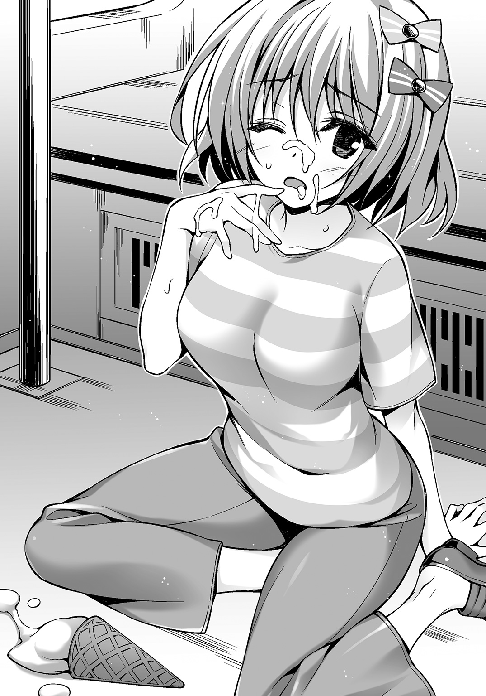
「大丈夫ですよ。アリス持ってますから」
動揺する廻人を尻目にアリスはさっさと顔を拭いてしまう。
アリスに変なことをしたらタダじゃおかない、と月佳は言っていたけれど、
（これは俺のせいじゃないよな......？）
ちなみにゴンドラが止まった理由は、他のゴンドラで子どもたちが飛び跳ねたりしたものだから震動を感知して一時停止したということだと、降りたときに係員が教えてくれた。
「やっ」
地上に戻ってきたゴンドラから出ると、月佳がそこで待っていた。
「もう大丈夫なんですかぁ？」
「うん。すっかり元気よ」
月佳はアリスの様子をうかがうようなそぶりを見せたが、アリスはニコニコとしていつもどおりだった。
「さて、それじゃこれからなにに乗る――」
と廻人が言いかけたときだった。
廻人の携帯電話に着信があった。
「ん......？ これって」
学校の番号、仁科からだ。
彼女が言うには、すぐに学校へ来るようにと。
「――マジすか!?」
特別選抜シューター、クレオが学校に来ているという。
Ｃｈａｐｔｅｒ Ⅲ
Ⅰ
「ちょっと廻人！ 早いって！」
「はぁ、ひぃ、ふぅ、ふぇぇ......」
鎌倉駅から学校まで、走った。
月佳はともかくアリスは廻人の速度についていけない。
悪いと思いながらも廻人は先を急いでしまう。
どうしても会いたかった人。
目標だった、憧れだったシューター。
立川基地で会えなかったクレオが、学校に来ているというのだから。
廻人たちは職員用の会議室へとたどり着いた。勢い込んで扉を開ける。
「――――」
その人は、廻人に背中を向けて立っていた。
だけれど頭に巻いたバンダナ、あのときよりは長いけれどパーマのかかった金髪、
「来たか」
ハスキーな声――そのすべてが、廻人の記憶と変わらなかった。
オレンジ色のサングラスを通した彼の瞳は、あらゆる物事の本質を見通すかのように鋭かった。
「シューターのクレオだ」
気圧されて、動けなかった。
クレオは日に焼けていた。あごには無精ひげが生えていて、精悍さを漂わせている。
「成家くん、入りなさい」
「あ......は、はい」
廻人は我に返る。
なにか、いろいろと話したいことが、聞きたいことがあったような気がしていた。だけれど頭からすべて抜け落ちていた。
それに、ここにはそういうほんわかしたムードを歓迎しないような空気があった。
廻人は気がつく。
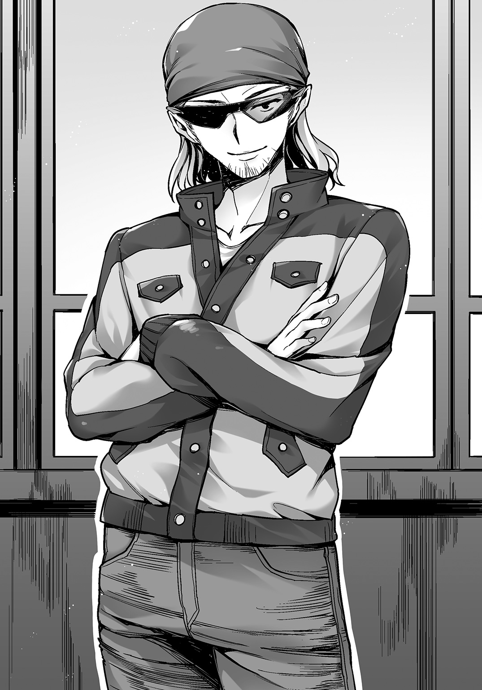
仁科以外にも、六条誠一郎を始めとする黄金獅子のメンバーがいる。
「トリニティは全員入りなさい」
入るべきか迷っていた月佳たちへ、仁科が告げる。
そもそもなぜクレオがここにいるのか、なぜ廻人が呼ばれたのか。
廻人たちが席につくと、テーブルを挟んで向かいにいる乃愛がにっこりと微笑み、相変わらずユーリがなにを考えているのかわからない笑みを浮かべ、棗はガムをふくらまし、六条は仏頂面だった。
「今から話すことは極秘指定の情報だ。この会議室にいる人間以外に話すことを禁じる」
クレオはそう、切り出した。
「立川で自衛隊所属のシューターが災厄によって殺された。その災厄の名は『罪の奴隷』という」
クレオは時系列に沿ってペカティに関する情報を説明した。
「二足歩行をする、四本の腕を持つ災厄だ。腕の先は鋭利な刃物になっており、これで人間を切り刻む。頭部は完璧な立方体。この立方体に災厄の核である中心体がある」
殺された――食われたという自衛隊所属のシューターは、響刻値がＳを記録した有望なシューターであったという。
「ま......連中は詳しい情報や撮影された映像は秘匿したがな。自衛隊の機密上の理由で、だ。個人的な知り合いに聞いたところ、レベルは５ｔｈにも達するかなり強力なペカティだと言っていたがそれも事実かはわからん」
自衛隊は自らの威信に懸けて単独でペカティの追跡をしようとしたが、捜査権を持たないため災厄技術庁と連携せざるを得なかった。
「投入された人員は二〇〇〇人に上る。しかしペカティの行方は杳として知れない。これがなにを意味するかわかるか」
クレオの問いに、
「災厄は東京災厄地域に移動したということですか」
六条が答えた。
「ふつうは、そう考える」
クレオはうなずく。
陰でこそこそと廻人が月佳に聞く。
「......どういうことだ？ なんでそうなんの？」
「......災厄は人間を捕食するでしょ。それなのに他に被害が出ていないっていうことは人間がいない地域に行ったのではないかという推測ができるからよ」
ぽん、と廻人は手を叩いた。なるほど。
「ふつうは、とはどういう意味ですか」
六条がたずねると、仁科が答えた。
「ペカティの討伐記録は、結構多いのよ。でもそのどこにも『人間がいない方角へ逃げる』といった習性は示されてない」
「......なるほど。立川基地には多くの人間がいるはずなのに、たったひとりを捕食し、満足して姿を消すことは考えにくいと」
「そのとおり。もうひとつ無視できない情報があって、今までに討伐されたペカティの最高災厄レベルは２ｎｄなの。あっという間に討伐されてきた災厄というわけ。つまり――この災厄が本性を現したことが今まで十分にあったかと言えば、ない」
クレオがうなずく。
「だから、俺は庁内のチームに依頼して過去の討伐記録をすべて洗ってもらった。細大漏らさず、おかしな点や、行動の傾向を確かめたかった」
乃愛が小さく手を挙げる。
「それが、どうしてこの学校に？」
小さく仁科がため息をつく。
「......本来なら災厄技術庁でも生態研究課がこの分野の担当なんだけど、あそこは『起こったこと』を記録するけど、『起こらなかったこと』は仮定すら許さないというポリシーなのよ。で......」
「災厄技術庁を飛び出した異端の科学者である仁科にお鉢が回ってきたというわけだ」
これには全員がびっくりして仁科を見た。
仁科が、元は災厄技術庁所属だった？
「......隠してたわけじゃないのよ」
「いや、なんつーか納得しましたよ。先生って『マッドサイエンティスト』っていう言葉がすげーよく似合うし」
「成家。二学期からの授業は覚悟しとけよ」
「あ、い、いや、悪い意味じゃないっすよ！ だから結婚できないとかそういうこと思ってませんし！」
墓穴を掘る一方だった。
「くっくっく......かかかかかかか！」
クレオがこらえきれないといった感じで笑った。
「そうかそうか。お前が成家廻人か」
「えっ――俺のこと、覚えててくれたんですか!?」
「いや、初対面だろう？ 俺はお前のことを先生から聞いただけだ」
よもや、とは思った。だがやはり何年も前に田舎で討伐した災厄と、そこにいた廻人のことなんて覚えていないのだろう。
少しだけガッカリしたが、
「俺がここまで来たのは、成家廻人、お前に用があったからだ」
「......え？」
「それに、六条誠一郎」
名指しを受けたが、六条は眉ひとつ動かさなかった。
「先生の仮説も、俺の直感も示しているところはひとつだった。ペカティは――優先的に、響刻値の高い人間を襲っているのではないかと思う」
Ⅱ
それぞれがクレオの言った言葉を咀嚼していた。
立川基地でのシューターの犠牲。その後、犠牲者は出ていない。
「あの......人間ひとりの捕食で満足した可能性はありませんか？」
月佳がおずおずとたずねると仁科が、
「今のところその可能性は排除しているね。なぜなら災厄が人間を捕食することに満足したというケースは今までに一例もないから。ただし捕食傾向に偏りがあることは報告されていて、たとえば女性中心に狙うとか、特定の血液型だけを捕食するとかいうことはある。だから特定の響刻値を持つ人間を狙う――そういう災厄がいてもおかしくない」
「わかったよ。それで、俺はなにをしたらいい？ なにかさせたいんだろ、俺に」
廻人がクレオにたずねると、
「察しがいいな。ずばり、そのために来た。どうやらお前の響刻値はＳＳだっていうじゃねえか」
廻人の響刻値について知らなかったのか、ユーリと棗が目を見開く。
「お前、それに六条、ふたりに頼みたいことはひとつ――じっとしてろ」
「......は？」
「今言ったろ。ペカティが響刻値の高い人間を狙う場合、お前らにうろうろされるのは困るんだよ。ペカティ討伐完了の連絡が入るまで、この学校から出るな」
クレオの言うことはもっともだ。
廻人や六条を狙ってペカティがやってくる可能性がある。
襲撃があったとき、たとえば廻人が今日のように遊園地にいれば一般市民の犠牲者が出るかもしれない。
学校に閉じこもっていれば、ペカティが現れても被害は拡大しない。今は夏休み。ほぼ無人だ。
廻人は――協力相手として見られているのではなかった。
保護対象だ。
「もし、ペカティが現れたら逃げろ。響刻構成体は手放すな。寝るときも、風呂に入るときも、便所に行くときも」
「俺たち、校長に武装を禁止されてるんだけど」
「そんなんバックレていいわよ」
おい、アンタより校長のほうが偉いんだろ、という目で廻人が仁科を見ると、
「というのは冗談で......う、うん冗談でね。クレオがいる間は使用許可を得てる」
廻人はうなずいた。
「じゃあ――戦ってもいいってことだよな？ 正当防衛の場合は討伐許可がなくても戦っていいはずだ」
するとクレオの顔から笑みが消えた。
「いや、無駄な犠牲だ。逃げろ。俺がひとりでヤツをひきつけ、防壁の外へ連れていく」
「なっ......」
クレオが廻人たちの実力をみくびっている、あるいは自らの力を過信している――そういうことはないのだろう。
なぜなら、クレオはひとりで戦うとしながらも「倒す」とは言わなかった。
迅引である彼がやるべきは、ペカティを人間のいない場所へ連れ出すこと。人間の居住区外――東京災厄地域へと追いやること。
これは迅引に最も適している任務であると言える。
東京災厄地域に入れば、ペカティとの距離を空け、災厄が活動を停止する一キロメートル外まで離れればいい。
「同じように響刻値の高い人間を自衛隊も集めている。まあ、半信半疑といった雰囲気だな。アイツらは立川を中心に厚く布陣を敷いているよ。鎌倉にペカティが現れる可能性は少ないと思っていい」
「ひとつ質問があります」
六条が聞いた。
「仮にペカティが出現したとして、敵のターゲットは私や成家になるのではありませんか。迅引には防闘のように災厄を惹きつける能力がありません」
「ああ、その心配は無用だ」
クレオはめんどくさそうに手を振った。
「俺の響刻値もＳＳだからな」
学校内にはシャワールームや食堂もあるので不自由はなさそうだった。寝起きする部屋はないので、使われていない教室に布団を敷くことになった。
「つか、月佳たちは帰ってもいいんじゃ......」
その日の夜、部屋には布団が三つ並べられていた。
廻人と月佳とアリスのぶんである。
「あなたひとりじゃ心配だからいてあげるって言ってるの。わからない？」
「わかんねえよ......」
「えと、アリスだけ帰りましょうかぁ......？」
「ダメ。アリスちゃんもいっしょ」
ぐいっ、と月佳はアリスの肘に腕をからめた――。
同じころ、隣の部屋。
「お前たちは帰っていい」
布団が四つ、並べられていた。
「あらあら。会長ひとりだと寂しいでしょうから私たちもいますわ」
「親睦を深めるのも一興さ。カードで勝負するかい？」
「修学旅行みたいだケド」
乃愛もユーリも棗も残る気だ。
「――――」
六条は小さくため息をついた――。
そんな廻人と六条は同じタイミングで廊下へ出てきた。
「あ......会長」
「こんな時間にどこへ行く」
「や、ちょっとジュースでも買いに」
「俺もだ」
ふたり、なんとはなしに連れ立って歩き出す。
電気は消えているのでハンドライトで足下を照らす。
いつもとは違う学校の表情。どこかよそよそしく感じる。
いつ何時ペカティの襲撃があるかわからないため、寝るときも制服着用だ。
この取っつきにくい生徒会長を前にすると、なにを話していいかわからなくなる。
結局ふたり、なんの言葉も交わさないまま自販機コーナーまで来た。
「――成家」
廻人がコーラを買ったところで六条が口を開いた。
「火見沢のことは聞いた」
月佳が、父とケンカ別れしたことだろう。
「お前が支えてやれ」
「......うす。言われなくとも」
「わかっているのなら、いい」
それだけ言うと、六条は興味までなくしたかのように口を閉じた。
「会長」
今度は廻人が言った。
「俺に稽古をつけてくれませんか」
「......稽古？」
「近接戦闘、俺、からっきしダメだから。上手い人を真似たいんですよ」
「今からか」
がこん、と自動販売機から音が鳴る。六条がかがんでペットボトルのミネラルウォーターをつかむ。
時間は九時半を回っていた。
だけれど響刻構成体の使用許可は今だけだ。
この間に、できることはやっておきたいと廻人は考えていた。
「災厄は待っちゃくれないでしょ？」
挑戦的に廻人が言う。
身を起こした六条の口元が――笑っていた。
「覚悟しろ。俺は温くない」
目は真剣そのものだった。
廻人はごくりとつばを呑んだ。これは――とんでもないものを刺激したかもしれない。
Ⅲ
部屋に残っていた月佳とアリスはパジャマに着替えていた。
月佳は身体の線がよくわかる細身のパジャマで、ストライプ柄だ。アリスはぶかぶかのジャージとＴシャツである。
「アリスちゃん。ここに座って」
布団の上に座り、向かい合うふたり。
「は、はぃ......座ってますけど」
改まって月佳に言われ、アリスはどきりとする。
「私に言わなければいけないことがあるんじゃない？」
「ふぇっ!?」
「おかしいと思ってたの。遊園地で、廻人とふたりで観覧車に乗ったの下から見てた。アリスちゃんの様子、おかしかった」
ぼんっ、とアリスの顔が真っ赤に染まった。
実は月佳としては、アリスがなんだか廻人と険悪なムードになっていた気がしてそう言っただけなのだが、思っていたのと違う反応が返ってくる。
「おおお、おかしく、なんか、なないですぅ！」
「いえ、おかしかったわ。廻人となにかあったの？」
ピーと音が鳴って蒸気が噴出するほどにアリスの顔がさらに赤くなる。
やっぱりおかしい、と月佳は感じる。
「星降島のころから――」
「はわわわわわ」
アリスは前のめりに突っ伏してしまった。そして頭を抱える。
訪れる沈黙。
月佳としては、
（......あれ？ なんか反応が違うような......？ なんでアリスちゃん顔真っ赤なの？）
という思いで、声をかけようかどうか迷っていると、
「月佳ちゃん......」
「なぁに？」
「........................ごめんなさぃ」
ん？ と月佳は思った。
ごめんなさい？
「アリスも――月佳ちゃんと同じなんです」
「ん？」
「アリスも......廻人くんのことが......す、好きなんです............」
「え――」
えええええええええええええええええええええええええええええええええええええ!?
月佳の喉から声なき声がほとばしった。
顔を真っ赤にして涙目のアリスが身体を起こしつつ言う。
「アリスの気持ちはバレてないって思ってたんですけど......」
ウソ、ウソ、ウソ、と月佳の心の中では疑問符が飛び交う。
「でも南森さんには見破られちゃって......月佳ちゃんとアリスの気持ち」
ウソぉぉぉぉぉぉぉおおおおおおおおお――月佳は、カウンターパンチを食らったようにひっくり返り頭からタオルケットをかぶった。
今度は月佳の体温が急上昇する番だ。
「......月佳ちゃん......？」
「........................」
「月佳ちゃん？」
「..................いつ......」
「な、なにがですか」
「いつから知ってたの......」
「そのぅ......南森さんに聞いたときですぅ......」
「じゃあ、廻人の実家に行ったときとかも知ってたってこと......？」
「は、はぃ」
タオルケットをひっかぶったまま月佳は右に転がり左に転がりしている。
「で、でもぉ、月佳ちゃんもアリスのこと知ってたんですよね？」
「違ーう！」
「ふぇ？」
タオルケットを引きはがして月佳が起きた。
涙目で顔真っ赤というアリスと同じ顔である。
「私はただっ、アリスちゃんと廻人がケンカしてるとか、険悪とか、そういう感じなのかと思っただけなのっ！」
「ふぇぇっ!?」
「それが、なに――南森さんに聞いたとか、なに、もうっ、ああ、なんなのそれぇ......」
へろへろと力なく背後に倒れる月佳。
「げ、月佳ちゃんは......し、知らなかったんですか......アリスのこと......」
こく、と月佳が力なくうなずく。
「ふぇぇぇぇぇぇ......」
アリスもまたぱたりと力なく背後に倒れた。
しーんと静まり返る。
月佳は、廻人とのやりとりで自分がどんな顔をしていたか、それをアリスに見られていたと思うと恥ずかしいやら死にたいやらで悶々としていたし、アリスはアリスで、言う必要のないことを吐き出してしまった後悔で恥ずかしいやら死にたいやらで悶々としていた。
「アリスちゃん......」
「は、はぃ」
「南森さんはなんて？」
「............」
寝転んだままアリスは一瞬、沈黙した。
言うべきかどうか迷ったような沈黙だった。
「......もぅ、全部話したほうがいいですよね......」
「話して」
アリスは南森から聞いたことを話した。
かつて南森がクレオと同じチームだったこと。
三人のチームで、抜群の連携力を誇っていたこと。
そして――南森を巡る争いでひとりが死んでしまったこと。
「............」
月佳が黙り込む。
「......南森さんは、正しぃと思います......。だから、チーム内で争いになるくらいなら......どちらかが身を引くしか............」
「それがアリスちゃんの結論なの？」
月佳がむくりと身体を起こす。
「............月佳ちゃん、アリスは思うんです」
アリスは横になったままだった。
右手の甲を眉間に当てて、目を閉じているようだった。
「廻人くんはとっても素敵です。自分を捨てて誰かのために尽くせる人なんて、廻人くん以外にアリスは知りません。だから......月佳ちゃんの相手としてふさわしいと思っています」
アリスの声が震えていることに月佳は気がついた。
「月佳ちゃんはとっても優しくて、頭がよくて、運動神経もあって、射撃も上手で、どんなときも冷静で――すごくかっこよくて、すっごくきれいで............廻人くんと月佳ちゃんはとっても素敵なカップルになれると、思うんです......だから」
ひとしずく、彼女の目尻から涙がこぼれた。
「だからアリスが身を引きます。そうすれば――アリスの大好きなトリニティをずっと続けられるんですから」
がばり、と月佳がアリスに覆い被さった。
「げ、げ、月佳ちゃん？ く、苦しいですっ!?」
ぎゅううとアリスを抱きしめる。
「バカなこと......言わないで」
「ふぇ......？」
「私はアリスちゃんのことも大好きなの。アリスちゃんを泣かせておいて平気な顔なんてしてられないの！」
両手を突いて身を起こす。
涙にまつげを濡らしたアリスの顔がすぐそこにある。
「泣いちゃうくらい好きなら......その気持ち、あきらめないで。私のために身を引くなんて絶対に許さないんだから」
月佳の言葉がアリスに響く。
また泣きだしそうな顔になってアリスが言葉を絞り出す。
「でもぉ......チームがおかしくなっちゃうのはぁ、ほんとうにイヤなんですぅ......」
「トリニティじゃない人の言ったことなんて信じない。きっと、私たちならどうにかできる――今はまだ、どうしたらいいかわからないけど。でも今、確実に言えるのは、アリスちゃんだけが悲しい思いをするなんて間違ってるってこと」
月佳はアリスの隣にごろんと横になった。
「まったく――生まれてきて初めてよ、こんなに恥ずかしい思いをしたの。でもさっぱりした。アリスちゃんになら、私の気持ちがバレてても全然イヤな気分じゃない」
「月佳ちゃん......アリスは、まだ、廻人くんのこと......好きでいてもいいんですかぁ......？」
「当然――」
すると、今度はアリスが月佳の身体にぶつかってきた。
額を月佳の胸に埋める。
「月佳ちゃん、月佳ちゃん、月佳ちゃぁん......！」
「よしよし、泣かないの――って言っても、これから私たちはライバル同士になるのか」
「絶対勝てませぇん......」
「わからないわよ。あいつバカだし、料理はアリスちゃんのほうがどう見ても上手だし」
「廻人くん、バカですかぁ......？」
「大バカよ――バカ正直で、バカがつくほど仲間思い」
「......はい。アリスもそう思います」
ふたりの目と目が合う。
「ふふ」
「えへへ」
なんだかおかしくなって笑いだしてしまった。
「あーあ、私たち......めんどくさいやつ好きになっちゃったんだね」
「はい。めんどくさくて、とっても素敵です」
「......言うね、アリスちゃん。急に大胆になった」
「え、そ、そうですか!?」
泣き顔から一転、照れた顔になる。
「あ、あのぅ......月佳ちゃん。でも、ずっとライバルのままなのはつらいです」
「......私も同じこと考えてた。それで思いついたんだけど、こうしたらどうかな――卒業の日に、ふたりで告白するの」
「ええええええええ!?」
「あいつがどっちを選んでも恨みっこなし。選ばれなかったとしても潔くあきらめて相手を応援する」
「......アリス、やっぱり月佳ちゃんに勝てる気しません......」
「それを言うなら私だって......あいつのことバカバカ言ってるし......」
「どちらも選ばれないってこともありますよね......」
「そのときは......」
月佳は笑った。
「いっしょに泣こう」
「そですね......」
アリスもつられて笑う。
「アリス、月佳ちゃんのこともっと知りたいです」
「あら、ライバルを知って勝ちに行こうってこと？」
「もうっ、そういうことじゃないってことくらい、月佳ちゃんわかってますよねっ」
「ふふふ。私もなの。アリスちゃんのこともっと知りたくなっちゃった」
それからふたりは、廻人がいないのをいいことにふたりだけの秘密を話し合うトーク大会を始めた――。
Ⅳ
「ま、飲みなよクレオ」
差し出されたウイスキーの瓶を見てクレオが眉根を寄せる。
「......なあ、一応聞くが、ここは高校だよな？」
「当たり前でしょう。どこからどう見ても高校の一室でしょう。ほら、これとか」
指差したのはテーブルに置かれたビーカーだ。氷が入っている。
シューター・タイプ別に与えられる教員室であり、迅引科は仁科しか担当教員がいないためにこの部屋を占領しているというわけだ。
「......アンタのぶっ飛びっぷりは昔っからだから、突っ込むのは止めとくぜ」
クレオがビーカーを手にすると、琥珀色の液体が注がれる。
からん、と氷が転げる音がした。
「乾杯」
「おう」
ふたりはビーカーを掲げるとそれぞれウイスキーに口をつけた。
「アンタ――ほんとにここで教師やってんだな」
「......ん、まあね。ちょっと時間かかっちゃったけどさ」
「いいのか」
「なにが」
「研究者としてやってくつもりだったんだろ」
仁科はビーカーを置いてタバコを口元に運ぶ。
壁には「校内禁煙」と書かれた紙が貼られてあったが、無視して火を点ける。
「君が気に病むことじゃない」
「そうはいかねえだろ。あのことが原因だったのはわかってる」
「......そうでもないよ」
「ねぇわけあるか。宏一が......アンタの弟が死んでからだ。アンタが、せっかく配属された研究所を辞めて教師になるなんて言いだしたのは」
「私が悲劇を繰り返さないために教師になったとでも？ もしそうでも、君には関係ない」
「関係ある。宏一と俺はチームだった。あのとき油断してなければアイツは死ななかった」
「宏一が生きていたらまだチームは続いていたかい？ 南森くんと君たちのチームは」
「............」
南森の名前を聞くと、クレオは黙り込んだ。
「......南森くんとは会ってるの？」
「いや」
「どうして」
「どうしてもこうしても――止めだ、そんな話は」
右手を上げてクレオは話を打ち切ろうとした。
手が、タバコの煙を散らしていった。
「君が幸せになっても宏一は恨まない」
「んなこと気にしてねぇよ。俺は......どのみち長生きできねぇだろ。こんな仕事だ」
「............」
仁科はタバコを灰皿にこすりつけた。
世の中には――公表されない不都合な数字というものがある。
災厄技術庁はディザスター・シューターたちの死亡率を公開しているが、その数値は、災害救助に当たるレスキュー・チームたちのそれとそう変わらない。他の先進国の警察における殉職率のほうが高いくらいだ。
だが、特別選抜シューターに限っては違う。
配属後、五年で死亡する確率は実に一五パーセント。
六人か七人にひとりが死亡する。
この数値は公開されない。非難されることが目に見えているからだ。
「宏一の死に責任を感じて、自分の命を捨てようとしているのなら――」
「そんなんじゃねぇって。俺がやらなくても誰かがやらなくちゃいけないだろ、この手の仕事は。そんじょそこらのシューターじゃ相手にならねぇ敵ってのは存在する。そいつらを処理するのが俺だ」
「今回のペカティも？」
「ああ......強ぇぞ、ヤツは。俺にはわかる」
ウイスキーを飲んだせいか、あるいは違う意味でか、クレオが渋い顔をする。
「......仁科先生よ。ヤツはここに来ると思うか？」
「............」
「なんだ。どうしたよ」
「......成家と六条くんの保護に来たのが君でなければ、それはないと思っただろうね。だけど――君が来てしまった」
「どういう意味だ」
「ペカティの討伐記録をすべて漁った。そこから導き出される『響刻値が高い人間を襲う傾向』について仮説に次ぐ仮説を重ねた」
仁科は立ち上がって、デスクに置かれていた数枚の紙を手にした。
それを、クレオに差し出す。
「ペカティがこの鎌倉に現れる確率は......発芽の位置が立川であったとしても、二〇パーセントから四〇パーセントというところ」
「高くはねぇな」
そう言いながらクレオは仁科に先を促す。
「......成家が入学してきたとき、私は真っ先に君を思い出したんだよ。同時にこの学校の教師になってよかったとも思った。そのふたりがこの建物にいるんだ......なにが起きても不思議じゃない。そうでしょう」
「まったくだ――アンタは研究者としても一流だったんだな。その勘、合ってるよ」
クレオはビーカーをテーブルに置いて、立ち上がった。
「さて――そんじゃま、やりますか」
生体響刻武装を展開した状態で廻人は走り出す。
それを目で追うのは同じく武装を展開せずただだらりと両腕を下げているだけの六条だ。
誰もいないバトルホール。
廻人は円を描くように六条の周囲を駈ける。
「いいんすか、武器持たなくても！」
「俺に剣を抜かせてみろ」
ぐるりと走り、ちょうど六条の真横から廻人は急接近する。
人間の視野ではほぼ死角になる位置である。
「だああああああ――」
ダガーは腰のホルダーに吊っている。
廻人は勢いに任せて六条へと握り拳を繰り出す。
すぅ......と六条の身体がねじれたように見えた。
廻人のパンチに添えられた六条の手。
身体のひねりは、直後、渦となる。
その回転に巻き込まれるように廻人の腕は引っ張り込まれる。
「お、お、おおおおおおおお!?」
廻人は自分の身体が浮くのを感じる――直後、天井が見えていた。
投げられた、と感じたのは、背中が床にたたきつけられてからしばらくしてだった。
「......小手調べにしてはつまらんぞ」
服の乱れを直しつつ六条はすっくと背筋を伸ばす。
「は、ははは......」
まさかここまであっさり投げられるとは。
バネ仕掛けのように廻人は跳ね起きると六条から距離を取った。
ナメ過ぎていた――自分は力をつけてきたはずだ、というたいした根拠もない自信があるだけなのに。
相手は現在の生徒会長にして「黄金獅子」のリーダーだ。
目指すべき相手なのだ。
簡単に攻略できるはずがない。
「――全力で行きます」
「いい表情だ」
瞬間、廻人の姿が消えた。
ブーツが壊れるぎりぎりの速度。人間の目では追えないはずだ。
しかも、足音を消して走っている。
驚きに、六条の目が見開かれる。
そのときには廻人は――空中にいた。
六条の真上。
落ちていく。
「――武装召喚」
漆黒のガントレット、そして、馬の首すら切り落としそうな分厚い大剣が六条の手元に召喚される。
彼は迷わず頭上を見た。
廻人と視線がバッチリ合う。
だが、遅い。
逃さない。
「おおおおおおお！」
体重を載せて繰り出される廻人の拳――。
「お――おおお!?」
めきょっ。
拳が、とらえたのは大剣――の刀身だった。
とっさに六条は、大剣を盾として展開したのだった。
「せえいっ!!」
廻人を載せたまま力任せに大剣を振り切る六条。
「ひえええええ!?」
廻人の身体は空へと吹っ飛ぶ。
その着地点へと六条が走り込んでいる。
びゅおおおおおおおっ、と空気を巻き込んで振り抜かれる大剣。
もちろん切り裂くためではなく、刀身の腹を廻人に向けたスイングの遅いバージョンだ。
だからこそ廻人は対処できた。
「！」
六条の顔に驚きが走る。
先ほど六条がやったのとは逆、廻人のブーツが六条の刀身に触れた。
瞬間、廻人はぬるりと滑るように身を翻し、大剣をやり過ごした。
「あっぶねぇええええええ！ なんすかそれ、防御にも使えるなんてずるくないっすか！」
「お前は回避も攻撃もできるだろう」
「......確かに」
納得してしまった。
「お前の行動パターンはあまりに単純だ。だから防御は簡単だ」
「うーむ......やっぱりそうっすか」
南森にも指摘されたことだ。
「そんなら、どうしたらいいですかね？」
「自分で考えろ。今の戦いにもヒントがある」
「えー。急にせこくなって、どうしたんすか。ひょっとして俺に立場を脅かされそうで焦ってたりしてー......あ、ウ、ウソです、冗談ですって！ 怒らないでくださいよ！」
「怒ってなどいない」
「怒ってるでしょ!? だってさっきまで額に青筋浮いてなかったっすよ!? それに立ち上るオーラみたいなのまで見えてきた――あ、オーラが、不動明王に形を変えていく――」
とかなんとか言っていたときだった。
「............」
「............」
ふたり、同時に同じ方向を見た。
「気がついたか」
問いに、廻人はうなずいて答える。
「なんか......イヤな感じがしました。うなじがひりひりするみたいな......敵が近づいてくる時みたいな」
Ⅴ
訪れは、一瞬だった。
バキバキという音とともにバトルホールの壁が内側に吹っ飛んだ。
ジリリリリリリ――非常ベルが鳴り響く。
その音がどこから聞こえてくるのか、そいつは左を見て、右を見た。
《ッィ――――――――――――――――――――――――――――――――――》
啼いた。
確かにそう、感じた。
だけれど音は、人間の可聴領域をはるかに超えていた。
二度、三度、四度。
音波だけが空気を伝わってくる。
廻人の肌を震わせる。静電気でも走ったみたいに身体中がぴりぴりする。
二本足で立っているからだろうか、その姿は人間のようですらある。
もちろん、違う。
身体全体が薄青に発光しているし、腕は四本だ。腕の先端は尖っており全体がバターナイフのような形状をしている。
頭部は、聞いていたとおり立方体だ。キレイな真四角でつるりとした表面はバトルホールの照明を反射する。
そして――大きい。
体高は五メートル以上あるだろう。
災厄レベル５ｔｈ、ペカティは、廻人がこれまで見たどんな災厄よりも大きかった。
「来る」
ペカティは数歩、走っただけだ。
距離が五〇メートル以上あったというのにすぐそこまで迫っていた。
「はや――」
身構えていた。それなのに、反応が遅れた。
ペカティは攻撃モーションに移っており、上から巨大な刃がギロチンのように振り下ろされる。
「ぐっ!?」
六条に肩を突き飛ばされて廻人は転げる。
ペカティの刃は床に深々と突き刺さっていた。
もし突き飛ばされていなければ――廻人の身体はたやすく両断されていた。
「走れ!! 休むな!!」
六条はすでに走り出している。
そうだ。自分は迅引だ。
走らなければならない。
ずずず......と刃を引き抜いたペカティは廻人へと身体を向けた。
六条ではなくこちらを見た。
（響刻値だ。俺のほうが高いから）
考えている余裕もなかった。
ペカティは廻人目がけて猛然と駈け出した。
しかし動き出したら廻人も負けない。
一直線に走って、ペカティと差をつけていく――。
「!?」
だが廻人は啞然とした。
わずかに身体をかがめたように見えたペカティ。
次の瞬間、テレポーテーションでもしたかのように廻人の真後ろに迫っていたのだ。
瞬発力のあるロケットジャンプ。
「――やばっ......」
ペカティの刃が廻人目がけて振り抜かれる。
廻人はダガー二本を構えてそれを正面からガード。
ばきぃ、と鈍い音が聞こえる。
ペカティの刃がダガーにめり込む。
「ぐっ――ぐぐぐぐぐぐぐっ！」
廻人は力任せに押し切られ、真横に吹っ飛ぶ。
一〇メートル以上転げて身体が止まる。
なんとか両手を突いて身体を起こしたときには――もう、ペカティはすぐそこにいた。
レベル５ｔｈの災厄。
その強さはあまりにも反則的だった。
四本の刃が廻人目がけて繰り出される――。
「先生の予感は大正解だったってわけだ」
廻人の前に滑り込んできた影。
彼が手にしていたのは刃渡り三〇センチほどのショートソード。
宿す光の色は金。
ッキィ――キキキッ――――金色の剣閃がほとばしったと思うと、ペカティの刺突は空間をねじ曲げられたかのようにあらぬ方向へと弾かれた。
かろうじてそれが、彼――特別選抜シューターのクレオが、刹那のうちに見せた剣技なのだと認識できた。
クレオの武器は一本きりだ。
足下に展開するブーツは膝下までがっちりと守るプロテクターのごとき形状。
「そんなんじゃあ、ダメだ。小僧」
廻人には目もくれずにクレオは言った。
「相手は俺だ......来いよ」
空いた左手で、かかってこいと言わんばかりに災厄を挑発した。
その挑発を理解しているのか、あるいは単に標的を変えただけなのか、クレオが走り出すとペカティはクレオを追った。
速い。
廻人は舌を巻いた。
廻人自身、とてつもない速度で走ることができる。それこそ高速道路を自動車と並走できるほどに。
だけれどクレオは次元が違う。
車にたとえるならスポーツカーだ。
一瞬の加速でトップスピードに到達する。
加速による重力、肉体の軋みは常人ならば気絶するほどだろう。
それを軽々と走る。
草原を割る疾風のように。
啞然としている廻人の前で――クレオは消えた。
ペカティを連れて。
「廻人！」
バトルホールへ月佳たちが飛び込んできた。
トリニティだけでなく、黄金獅子のメンバーも勢揃いだった。
「大丈夫!? ケガはない!?」
月佳に揺すぶられて、
「あ......ああ」
廻人は我に返る。
「なにがあったの」
「ペカティが来て、それで......クレオさんが連れていった」
「そう――」
月佳はほっとした様子を見せた。
「......廻人くん？」
アリスが怪訝な顔をする。
それは、廻人の様子がいつもと違ったからだ。
（......なにも、できなかった）
不意を襲われたとはいえ、災厄との戦いはいつだって突然だ。
ここにクレオがいなければ間違いなく廻人は死んでいた。
（なにやってんだ......なにやってんだよ、俺は......!!）
怒りが生まれた。
どろりと心を焼いていくマグマのような怒りだ。
（強くなったって思ってた......それがこのザマだよ......練習じゃない、いつ本番がやってくるかもしれないのに!!）
この学校で一番になるつもりだ。
ゆくゆくはクレオのようなシューターに――。
なにが起きても冷静に行動し、やらねばならぬことのために最短距離で進むクレオと、今の自分。
目標と自分の差があまりにもあることを、廻人は思い知らされた――。
一方で六条もまた黄金獅子のメンバーに囲まれていた。
「ケガはない？」
乃愛に聞かれ、六条はうなずいて返した。
だけれど右手のガントレットがばっくりと斬られていた。
廻人を突き飛ばしたときだ。
紙一重でペカティの刃は腕まで届かなかったが、触れれば腕の一本や二本、簡単に切り落とされていたことだろう。
大剣と同じ強度のガントレット。
なのに、豆腐でも切るように刃は滑り込んできた。
「......かいちょ」
棗が六条のシャツを引っ張る。彼女にしては珍しく心配を瞳ににじませて。
六条が左手を棗の頭に載せる。
「災厄技術庁に、災厄について報告をしよう。特別選抜シューターが引きつけてるとはいえ、警察にも連絡を取らねばなるまい」
落ち着き払った言葉に棗も、乃愛も、ユーリも安堵した様子を見せる。
そこへやってきたのが仁科だった。
「六条くんから報告してもらえるとありがたいね。それにしても......いやはや、ここに来るとはね......」
「仁科先生も校内にいらっしゃったんですか」
「クレオと一杯やってただけよ」
見れば仁科の顔は薄ら赤い。学校で酒を飲むなと言いたいところだが、そんなことよりクレオが酒を飲んでいたことに六条は驚いた。アルコールが入っていてもあれほどの身のこなしができるのだ――。
「......では、災厄技術庁に連絡してきます」
六条は黄金獅子とともに去っていく。
その背中に、仁科は言った。
「芙蓉くん、それに生徒会メンバー。今日は六条くんのそばにいてあげなさい」
しかめ面で六条が振り返る。
「......お言葉ですが、それには及ばな――」
「はぁい、わかってまーす」
「当然だケド」
「やれやれ、麗しきは愛ではなく友情か」
六条の微妙な心の動きを、黄金獅子のメンバーはすでに感じ取っていたのだろう。
「火見沢さんと千早川さんもね」
仁科が言うと、
「ま、まぁ、今日はその予定でしたし......」
「は、はぃっ」
顔を赤くしてふたりが答える。
当の本人である廻人はそんなやりとりにも気づかないほどにショックを受けているようだった。
月佳に促され、トリニティも去っていく。
「――クレオ、大丈夫だろうね......」
腰に手を当てて仁科は小さく息をついた。
「......心配してもしょうがない、か」
ふと、気がついた。
ペカティが落としていった身体の欠片。
それはクレオのショートソードに削られて落ちたものだった。
仁科はポケットからハンカチを出して、欠片を拾い上げる。
切った指の爪ほどの大きさだ。
「一応、調べときますか」
そして彼女はバトルホールを後にした。
クレオがペカティを東京災厄地域に捨ててくれば、これで事件は解決。
あとはクレオの成功を信じるだけ。
そう、思っていた。
拾った欠片が――誰も知らなかった事実へとつながるとは、仁科は考えもしなかった。
Ｃｈａｐｔｅｒ Ⅳ
Ⅰ
おかしい。
どうしてこうなった。
廻人は布団の上で目を見開いていた。
天井はあまり見覚えのない教室――先ほどペカティに遭遇してから戻ってきて、布団に横になった状態。
それから二時間が経った。
夜更けである。
「すぅ......すぅ............」
「ふひゅぅ............ひゅぅ............」
右と左から寝息が聞こえてくる。
すごく近い。
ちろっ、と右を見ると五〇センチくらいの距離に月佳の寝顔。
左を見ると同じ距離にアリスの顔。
（近い！ 近すぎだよ!!）
ペカティとの戦いで廻人はいろいろなことを考えた。考え込んだ。だから、月佳たちに促されるままこの教室に戻ってきて布団に横になっても考えていた。電気が消されても考えていた。
ふむ......と我に返るとこの状態だった。
確か月佳が「あなたも怖い思いしただろうから、きょ、今日は特別に......と、隣で寝てあげるから」とかなんとか言って、「ねっ、アリスちゃん？」とアリスに同意を求め、「ふ、ふぇっ!? あ、あのあの......ふつつか者ですがよろしくお願いしますぅ......」とかアリスが言っていた気がするけれど記憶は曖昧だ。
いずれにせよこれは危険である。
こんな近いところでＬとＲから女の子の寝息を聞かせられて眠れるわけがない。というよりどうして月佳とアリスのふたりが寝てしまったのか不思議だ。よりによってふたりともこっち向きで寝ている。せめて背中を向けてくれと思うが熟睡しているようなので起こすのも忍びない。
（......脱出しよう）
廻人は上半身を起こそうとした。
「ふにゅ......」
「!?」
月佳に腕をつかまれた。
「ダメ......バカイト......」
寝言かよ！ と思うのと、夢の中でもバカイトとか言うなよ！ と思うのとは同時だ。
振りほどこうとしたががっちりつかまれている。
なんなの？ ふだんは抱き枕とか抱いて寝てるタイプなの？
「......ひとりで、行かないで......」
ぽつりとこぼれた言葉。
どんな夢を見ているのかはわからない。
だけれど廻人の心に――こつんと音を立てて当たった。
さっきのペカティとの遭遇戦。戦いとは呼べないほど、廻人は無様な動きだった。
ひとりではなにもできない。
クレオとは違うのだ。
廻人が今やるべきは、トリニティとして強くなること――。
月佳のことを思った。
火見沢の家と決別した彼女の事情を考えれば――廻人が欠けること、アリスが欠けること、もしもそんなことが起きたら月佳には耐えられないだろう。
「......ひとりじゃ、行かねぇよ。それに............お前をひとりにも、しない」
廻人がつぶやくと、月佳の表情が緩んだように見えた。
仕方がない、しばらくここにいよう――と廻人は改めて横になった。
「ふにゅう」
「ふごっ!?」
どさっ、と左から柔らかくて温かくていいにおいのするものが覆い被さってきた。
もちろんそちらにいたのはアリスだ。
まるでラリアットでもかますみたいにアリスの左腕が廻人の鎖骨あたりに乗っかっていた。
びっくりしたし重いし肩に触れるアリスの髪からふんわり漂う香りが甘ったるくて頭がくらくらするし――なにより、
（や、柔らかい......）
腕に触れているのは位置的にアリスの胸にあるふたつのふくらみだ。
存在感が半端ない。
廻人の全神経が思いがけず腕に集まってしまうほどの存在感。
（だ、だ、だ、脱出しなければ......！）
唯一自由になる足を使ってブリッジをしつつまずはアリスの身体から逃れよう――としたとき、
「すぅ......」
「!?」
月佳の長い足が伸びてきて廻人の足を封じ込める。
（月佳さん！ 邪魔！ 長い！ 足長すぎィ！ なにこの連携！）
完全に封じ込められた。
ふたりのチームワークがいい、というふうに解釈すればいいのかも廻人にはわからなかった。
そのまま――身動きの取れない状態で廻人は朝を迎えた。
Ⅱ
鎌倉区上空にはぎらつく太陽が昇ろうとしていた。
今日も快晴。
暑い一日になることは明白だった。
「............」
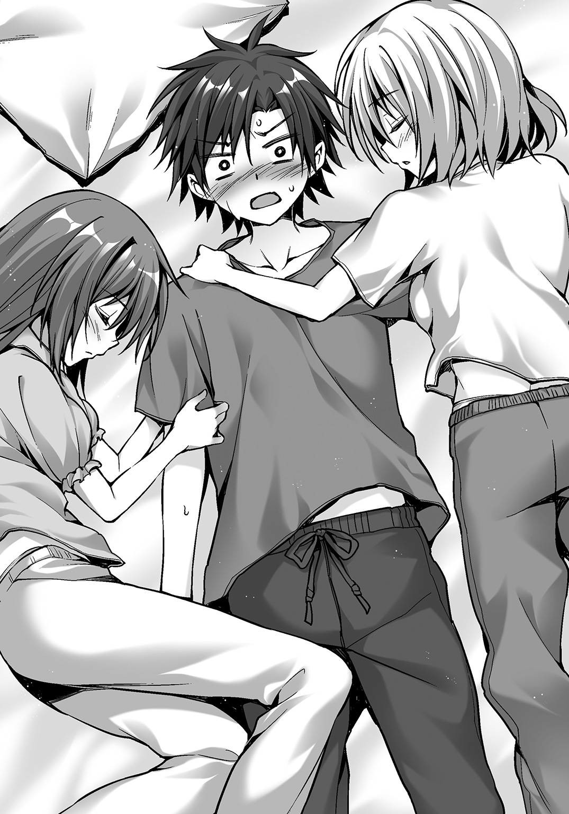
そんな天気に反して、廻人の目の下にはクマがべったり浮いていた。
「あまり眠れなかった？」
教室を出て寮へと帰る準備をしたところだ。
月佳にたずねられ、
「......まあ」
廻人は正直に言うわけにもいかずにぼかして答えた。
「平気？ もし睡眠不足が続くなら――」
「いやいやいや！ 大丈夫、大丈夫だから、マジ」
またいっしょに寝ようなどと言われたらそれこそ睡眠不足は続行だ。
廻人たちが教室から出ると、ちょうど生徒会チームも出ていくところだった。
「あら。成家くん、眠そうね。......もしかしてぇ、昨晩なにかあった？」
乃愛に聞かれて廻人はブッと噴き出したが、
「なにもありませんし、廻人は大丈夫です」
月佳が廻人と乃愛の間に割り込んだ。
「あら。私は成家くんに話しかけていたのだけど」
「廻人は大事なチームメンバーですから。精神的に有害だと推測される場合は、私も介入すべきだと思います」
「まあ。精神的に有害だなんて、怖い言葉を使うのね」
「先輩がどうして廻人にちょっかいを出すのか知りませんが、はっきり言って迷惑です」
美少女ふたり、視線がぶつかり合う。
ばちばちばちと火花でも散っているかのように廻人には見えた。
「――ふぅん」
先に力を抜いたのは乃愛だった。
「変わったわね――もう、成家くんを引き抜くのは無理、かな」
「最初から無理でしたから。残念でした」
月佳は強気の姿勢を崩さなかった。
女子ふたりがなにを争っているのか廻人にはよくわからなかったけれど、月佳の様子がいつもと違うことには気がついた。
なんだか――吹っ切れた感じだ。
感情に正直になっているように見えた。
「おまえ」
その横では、棗がアリスと向かい合っていた。
相変わらずガムを嚙みながら。
背の高さは、アリスだって小さいが棗はさらに小さい。
だけれど態度のでかさで棗のほうが大きく見える。
「な、なんでしょぅ......」
過去にやり込められた経験があるアリスは思わず萎縮してしまう。
「復慈なんダロ」
「ぇっと......はぃ」
「誰でも直せんノ？ 島で乃愛を直したんダロ」
棗が言ったのは星降島でのことだ。
急な共闘ではあったが確かにアリスは乃愛の武装――ヴァイオリンを修復した。
弱破である乃愛は、楽器の音色を通じて災厄の能力を低下させる。
「アリスのお友達に弱破の方がいて、修復する練習をしていましたからぁ......なんとかできました」
「防闘は」
「ふぇ？」
「防闘は直せんノカって聞いてるケド」
「あっ、と......ぇと、たぶん、大丈夫ですぅ。ただ同じチームに入らないと、武装の情報がわからないので......」
星降島での経験から、アリスはあらゆるシューター・タイプの武装を修復できるようパッチを組んでいた。
ただ、武装は人によって千差万別であるため、チームを組んで武装についての情報を取得しなければ完全修復は難しい。
「チッ」
「ふぇっ......」
舌打ちされて、さらに萎縮するアリス。
「チームじゃなきゃダメなノ？」
「えとえと......修復率は五〇％を切ると思いますぅ......」
どんどん小さくなるアリスだったが、
「それで十分」
「ふぇ？」
「――もしアタシが直せっつったら、直せ」
「ふぇぇ？」
「いいナ」
それだけ言うと、棗はアリスに背を向けて歩き出した。
アリスはぽかんとしていた。
棗の言った意味がよくわからない。棗の武装を修復するような事態が訪れるなんてこと、あるのだろうか？
だけれどわかったこともある。
以前、鎌倉区役所で棗に会ったときにはアリスは歯牙にもかけられなかった。
同じシューターとしてすら認識されなかった。
それが、今はアリスの能力をたずねてきた。
少しは力を認めてくれたのだ。
「むふー」
アリスが鼻息を荒くすると、
「チョーシのんナ」
くるっと棗が振り返ってフーセンガムをふくらませた。
「ふぇぇぇ......」
ガムとは反対に、アリスは縮こまった。
そんな彼女たちの様子をちらりと見たのはユーリだった。
「若きつぼみたちが成長しているようだね」
「............」
話しかけられたことをわかっているのだろうけれど六条は特に返事をせず、歩みを止めることもなかった。
「考えの深いことだ。そんなにも心がざわつくのかい――夜の森に訪れた野分のように」
「気にしすぎだと思うか」
「心のざわつきは否定的な意味しかないわけではないよ」
相変わらずとらえどころのない言いまわしを、ユーリはした。
実は、先ほど棗が不穏なことを言いだしたのだ。
――強い災厄、まだ近くにいるんじゃないノ。
六条は彼女の言うことを「クレオはまだ、ペカティを東京災厄地域まで連れ去っていない」という意味だと考えた。
棗は防闘としても優れていたが、さらに特殊な直感というか予感のようなものが働く。
クレオが今いる位置は、災厄技術庁がＧＰＳなどで把握しているだろう。問題があるならば六条にも連絡があるはずだった。
だが昨晩災厄技術庁に事の顚末を報告したときに、特に向こうからの情報はなかった。ふつうに考えれば問題はないということだ。
以降も連絡はない。
クレオはペカティの連れ去りに成功したはずだ。
Ⅲ
ぴぴぴぴぴ――どこか間の抜けた着信音が響く。
東京戦厄高校災厄化学研究室にあるソファ。
そこからだらりと垂れている腕。
大口を開けて寝こけている――仁科。
「――んあっ」
携帯電話の着信音に気がついた彼女は、そばのテーブルを見やった。
空のウイスキーボトルが二本。ビールの空き缶は数えるのもイヤになるくらい。
汚れた灰皿に、食べかけのつまみ。
「うー......いつつつつ。飲み過ぎたなぁ」
頭を押さえながら起き上がった仁科は携帯電話を手にした。
「もしもし......」
《ようやく出たよこの痴れ者め！》
怒鳴り声に、仁科は耳を一五センチは離した。
「ちょっと、二日酔いなんですよ。興奮しないでくださいよ、空木先生」
電話の相手は、アリスの叔父であり、災厄技術庁生態研究課課長の空木航生だった。
《昨日のペカティについて知ってることを洗いざらい吐くんだよ！》
「吐くとか言わないでくれます？ 二日酔いだっつってるでしょ。違うもの出てきちゃいそう」
《そういうところが応用技術第四課のイヤなところなんだ。すぐに論点をはぐらかす。そして自分が賢いと錯覚している》
「元ですよ。元第四課なんです」
《いいからペカティだよ！》
「なにあわててるんですか。昨日、クレオが連れてったでしょ。今ごろ防衛線を越えて東京災厄地域だろうし。――もしかしてクレオがミスを」
《彼のＧＰＳは東京災厄地域の深部へと到達し、今は帰ってくる途中だよ》
ふう、と胸をなで下ろす。
「じゃあ、なんなんですか」
仁科はソファに座り直した。
空木が――人間には見向きもしないくせに災厄の生態だけは命を懸けて追いかける変わり種の科学者が、わざわざ電話をかけてきたのだ。
《東京校の生徒会長が昨晩報告したよね。ペカティについて》
「ええ......彼ともうひとり、それにクレオしかペカティを見ていませんから」
《それが問題なんだ》
「はあ？」
《なにか他にデータはないのかね！ ペカティはなんらかの痕跡を残さなかったのか！》
「――――」
不意に――ぞわり、と鳥肌が立った。
立ち上がった仁科は研究テーブルに載せられたハンカチ――ペカティの欠片を包んだハンカチに目を向ける。
「あのペカティに、不審な点がある。そういうことですね？」
仁科はテーブルへと走った。
《自衛隊の連中め、まだ情報を隠していたんだ。災厄技術庁から報告が入ってようやく、口を開いた》
ペカティの欠片を手にする。
組成解析のための機器は、学内にもある。基礎的な調査はすぐにできるはずだ。
《我々はとんでもない思い違いをしていた可能性があるんだよ》
仁科は部屋を飛び出した。
Ⅳ
「ねね、アリスちゃん。あの先輩となにを話してたの？」
「それが、アリスが防闘の修復もできるのか、って......」
「へー......どういうことだろ？」
「アリスにもわかりませんけど――」
寮へと続く道を歩いていた。
前を六条たち四人、そこから一〇メートルほど空けて廻人たち三人がいる。
月佳とアリスのふたりが廻人の横で会話に盛り上がっていた。
ふたりは今までも仲がよかった。
だけれど今日は、これまでとは違った種類の親しさのようなものを廻人は感じた。
「なあ......なんか、あった？」
なので聞いてみた。
「ん？」
「なにがです？」
ふたりが聞き返してくる。
「や......なんか、アリスも、月佳も昨日とは雰囲気違うような気がして」
すると月佳とアリスはふたりで視線をかわし、
「うふふふ～」
「えへへへ～」
意味不明な笑いを漏らした。
「私たち仲良しだから」
「はぃです」
まったく意味不明だった。
女の子の考えることなんて昔からわからなかったしな......と廻人はあきらめた。
鎌倉駅前、小町通り。
鶴岡八幡宮へと通じ、土産物店や飲食店が多い。
まだ昼前だ。観光客が多い。
（俺はほとんどなにもできなかった）
そんなにぎやかな通りを歩いていても、思い返すのはペカティのことだ。
そして六条につけてもらった稽古。
南森とのトレーニング。
短い期間で様々なことが起きた。それらすべてが、廻人の身体に刻みつけられている。
悔しさが生傷のようにうずく。
――突然の襲撃――速度で負けた――クレオのロケットスタート――単調な攻撃だと六条に見抜かれた――イメージが肝心だと南森は言った――。
（強くなりたい）
すべてのパーツが頭の中に散らばっていた。
もう少しで形になりそうだった。
（この三人で......強くなりたい）
形になれば、さらに成長できる。
成長したらきっと、校内では誰にも負けないチームになる。
おぼろげな感覚があった。
そのために必要なのは、戦いだ。
ペルセクチオーネとの戦い、星降島でのサバイバル。
いつだってトリニティは戦いの中で成長してきた。
「......ん？」
廻人の携帯電話に着信があった。見ると、仁科の番号だ。
《成家？ 今どこ》
耳に聞こえてきたのは切羽詰まった声だった。
「鎌倉駅のそばですけど......どうかしました？」
《昨日、ペカティがバトルホールで暴れたでしょう。あのとき、削れた災厄の欠片があって、今、組成解析を行ったの。外殻層は二十四種類の組成パターンが複雑に組み合わさっていて、そこから導かれる――》
「い、いや、そういう細かいこと急に言われてもわかんないっすよ」
廻人が困惑していると、何事かと月佳とアリスが視線を向けてくる。
《私が言いたいのはつまり》
そのとき――廻人は聞いた。
叫び声を。
そして目を疑った。
五〇メートルほど前方。
空から降ってくるように現れた、影。
二足歩行ですっくと立ち、四本の腕に立方体の頭。
見たことがあるに決まっていた。
ただし違うのは、腕の形状、そして色だ。
腕は棍棒のようにふくれあがっており、色はレモン色だった。
《ペカティは二体いたんだ》
廻人の心にふくれあがったのは――燃えるような闘争心だった。
《成家、聞いてる？ 今すぐ六条くんとともに学校へ避難して。今、災厄技術庁からシューターチームが来るよう要請してて――》
「先生、手遅れだ」
《え......》
「敵はもう、俺を見つけたよ。一般人に被害が出ないようにする」
《は？ ペカティがいるってこと？ どこに、って、鎌倉に？ ウソ、そんな――成家くん、まさかとは思うけど、戦ってはダメよ。成家？ 成家!? 返事しろ、成家ッ!!》
廻人は携帯電話をポケットに突っ込んだ。
周囲は、突如として現れた災厄に、パニックに陥っている。
《ッィ――――――――――――――――――――――――――――――――――》
同じ声。
昨日、バトルホールで聞いたのと。
肌が震え、静電気がまとわりついたように錯覚する。
そいつは――ペカティは、四度啼くと、廻人を見据えてダッシュした。
Ⅴ
「標的は成家だ!! 守れ!!」
突然の敵の出現。
だけれど六条は即座に反応した。
廻人の前に滑り込んできたのは棗だ。
「武装召喚だケド」
身体を覆い尽くすプロテクターは彼女の髪と同じオレンジ色。
右手にメイス。左手に〈マーガレットイージス〉の異名を持つ超硬度のカイトシールド。
「武装召喚ッ」
同時に武器を手にしたのはユーリだ。
棗の右で翡翠色のコンパウンドボウを引き絞る。
星降島で見せたように、三本の矢を同時につがえていた。
最初から全力だ。
「武装召喚」
棗の左に展開しているのが六条だ。
ガントレットで握りしめた大剣は、名実ともに東京戦厄高校最強を誇る。
乃愛は一般人の避難誘導に動いていた。
完璧に、廻人を守るための布陣だった。
だが廻人は、
「武装召喚!!」
守られるだけのつもりはさらさらなかった。
「はわわわっ、ど、どどどうして災厄――」
「アリスちゃん、そんなこと言ってる場合じゃない！」
「は、はいぃっ！」
月佳とアリスのふたりも、意識が一気に戦闘モードへと移行する。
「武装召喚！」
「武装召喚っ」
月佳の手に、彼女の髪と同じ燃えるように赤いショットガンが現れる。
ショットガンの銃床を受け止める右肩にはプロテクター。
アリスは小道の陰に走りながら武装を召喚した。
彼女の周囲に展開するのは廻人の武装をモニタリングする立体画像だ。
その間にもペカティは真っ直ぐに廻人へ迫る。
棗の視線がペカティを捉える。
「――射撃」
右からユーリの矢が発せられる。
矢は一直線にペカティの頭に向かっていった。
ペカティはのらりとかわそうとしたが、一本が直撃する。
「！」
だが矢は、跳ね返された。
ガインと音を立て、ペカティの頭を押しやっただけに見えた。
「せええええええいッ!!」
反対側からは六条だ。
大剣の大きさからは想像できないほどの、神速の振り下ろし。
ペカティは腕の一本でこれを防ごうとする。
ガリガリガリガリッ――大剣の切っ先が棍棒部分にめり込む。
突進を無理矢理止められたペカティは、両腕で振り下ろす六条に対して腕一本で押し返す。
跳ね上がった大剣とともに六条は背後にたたらを踏む。
ペカティが六条に意識を向けたのはほんの一瞬だった。
廻人へ向けて再度走り出す――とき、
「おおおおおおおおおおおッ......」
廻人がかがみ込む。
走り出そうとするにはあり得ないほどの前傾姿勢。
両足に力を込める。
（必要なのは――イメージ）
南森から教わったこと。
（俺にだってできる!!）
クレオを見て学んだこと。
廻人のブーツが青色の輝きを増していく。
月佳はショットガンの照射をためらった。
なぜならば――直感したからだ。
「守られてるだけじゃ......」
廻人のブーツが壊れる、と。
「ねえぇええええええええええええええええ!!」
廻人は走り出した――いや、射出された、と言ったほうが正確かもしれない。
斜め前方へ、跳躍した。
爆発で吹き飛ばされたのかというほどの加速。
身体にかかる重力は五倍以上。
視野が狭くなり、視界が白黒に変化する。
これまでに経験したことのない身体の重さ。
だが――これほどの加速ができて初めて、災厄レベル５ｔｈ以上の相手と勝負ができるのだということを廻人は知った。
すぐ目の前にペカティが迫っていたが、ペカティは廻人に反応できていなかった。
「ああああああああああああ!!」
両手で繰り出すダガーが、ペカティの頭に突き刺さる――中心体のある、頭に。
「!?」
しかし、ダガーは木っ端微塵に砕け散った。
ペカティの棍棒が廻人の脇腹目がけて振り抜かれる。
だが、廻人を捉えることはなかった。
ペカティの身体が揺れる。
カイトシールドを掲げて棗が激突していた。
同時に流れるヴァイオリンの音色はラヴェルの「ツィガーヌ」。緊張感のある旋律がペカティの動きを鈍くする。
もちろん廻人たちの武装にも影響が出る。乃愛は廻人の攻撃の邪魔にならないようタイミングを見計らっていたのだろう。
鈍ったペカティの攻撃は廻人に届かない。
ペカティの横をすり抜けて後方へ着地する。
折れたダガーも、射出時に破損したブーツもすでにアリスが修復している。
「くそっ......折れたら意味ねーじゃん!!」
「なにをしている!! ブーツに意識を回しすぎだ！ 跳んだ後にすぐダガーへ意識を切り替えろ！」
「あ......」
六条の言葉にハッとなる。
南森の言うとおり、イメージを高めれば武装の力を引き出すことができる。
しかしこれは逆にも言えるのだ。
意識を向けなかった部分はもろくなる――。
「にゃああっ!?」
ペカティの蹴りで棗が吹き飛ばされた。
プロテクターが頑丈でも、膂力があっても、彼女は小柄だ。身体が軽いことは否めない。
「つえーな......」
廻人は改めて立ち上がり、ペカティに向き直る。
「でも......戦える」
確信した。
六条が廻人に聞く。
「成家、ペカティを引きつけて逃げることは難しいか」
「......まあ、クレオさんほどうまく逃げ回れるとは思えません」
「そうか」
淡々としたものだった。
六条の言葉は。
しかし、
「ならばここで仕留める」
明瞭で、力強かった。
ペルセクチオーネと戦ったときには六条に助けられた。
星降島ではたったふたりしかいない彼らの力を見せつけられた。
あれから成長したと、廻人は自負している。
今なら、肩を並べられる。
「――はい!!」
トリニティと黄金獅子の共同戦線が始まる。
Ⅵ
《ただいま入ったニュースです。ＪＲ鎌倉駅周辺に災厄が出現したということです。今報道のヘリが急行しているところですが、現場の目撃者から寄せられたムービーを見てみましょう》
火見沢陽那が乗っていたのはホムラの社用車、後部座席だった。
災厄、という言葉に反応して車内モニターに目を向ける。
テレビ番組だ。
報道スタジオで「緊急速報」と銘打って災厄出現のニュースを流している。
「最近はこういう災害もすぐにニュースになりますね」
運転手が災厄のことを自然災害であるかのように言う。それもそうか、と陽那は考えつつ――やはり思うのは妹のことだ。
災厄が自然災害なら、災厄と戦う月佳はレスキューなのだろうか。
（バカバカしい......全然違うわよ。災厄は人間を目の敵にしているんだから。すべての生き物に、平等に訪れる災害とは違う）
《だいぶ遠いところからの映像ですが、はっきりとこの......薄黄色とでも言うのでしょうか、災厄の姿が確認できますね。生体響刻武装を装着して戦っているシューターがいるようです。しかしこれは――学生でしょうか？》
「学生が戦うなんてのは、穏やかじゃありませんね。鎌倉駅って言ったらここから近いですし、渋滞しなけりゃいいんですけど」
ハッ、とする。
学生？
鎌倉駅？
鎌倉区には月佳の通っている東京戦厄高校がある。
《青色の武装をまとった学生が、瞬間移動したようにも見えましたね。一時停止してみましょう》
陽那は身を乗り出した。
小さな車載モニターの画面。
拡大された少年の後ろ姿に、陽那は見覚えがあった。
「あの子......！」
成家廻人だと、直感した。
「ちょっと！ 今すぐ鎌倉駅へやって！」
「え、ええっ!? お嬢様は本社に直帰するとおっしゃってたじゃないですか」
「仕事なんてどうでもいいのよ！ すぐに行って！」
「し、しかし災厄が――」
「そんなら今すぐこの車から降りろぉっ！ 私が運転する!!」
自動車は路肩に急停止するや後部座席から陽那が飛び出した。
運転手を外に放り出し、陽那がハンドルを握る。
「陽那お嬢様ぁ！」
運転手が泣き声を上げたが、陽那はもはや聞いていなかった。
モニターの音量をめいっぱい上げて陽那はアクセルを踏み込む。
「月佳――絶対に無茶しないでよね!!」
きゅるきゅるきゅるとタイヤが甲高い音を立てて車は急発進する。
鎌倉駅へ向けて――。
ペカティの動きを止めることは至難の業だった。
ユーリの放つ矢は衝撃を与えこそすれ突き刺さらない。そうとわかると、ペカティは多少当たっても仕方がないと切り替えたようだ。
ダメージを与えられるのは六条の大剣だが、これは確実に腕二本でガードする。
そこをしのいだ後は、真っ先に廻人へと突っ込む。
「くっ」
廻人は先ほどのようなダッシュは控えめにし、代わりに武器へと意識を集中させる。
だが、そうそう上手くはいかない。
ペカティの突進をかわし、走って真横から斬撃を加えようとしたがダガーはまたもぽっきりと折れた。
「ぬぬぬぬぬぬ！」
「廻人！ こっち！」
月佳の射線上に廻人が出てきた。
すでに廻人のダガーはアリスによって修復されている。
月佳は迷わず廻人のダガーとブーツに調善の光を照射する。
「サンキュー！」
廻人は調善効果が切れないうちに攻撃をしようとするが、ペカティは学習したのか闇雲に突進するのを止め、廻人の動きを観察する。
「こっちだ――」
くいっ、くいっと廻人が手招きして挑発すると、その直後にペカティが薙ぎ払うように棍棒を一閃する。
「うお!?」
ひらりと跳んでかわしたが、とんでもない速度のスイングだ。空を切る音も甲高い。
これではダメだ――なら、どうする。
そのとき、棍棒は飲食店の軒先にあったソフトクリームの看板の上部だけを引きちぎって吹っ飛ばした。
きゃあああ――通りの先で声が聞こえた。
吹っ飛んだ看板が落ちていったのだ。
五〇メートルほど向こう、スマートフォンを構えて撮影する観光客たちがいた。
「な、なにやってるのよあの人たち!?」
避難もせず、危険が及ぶ距離で撮影。
啞然とする月佳に、
「火見沢さん、敵に集中して！ あっちは私が誘導する！」
乃愛が鋭く言って走り出す。
確かにここでは弱破の乃愛は動きづらい。
それでもひとり欠けるのは戦力低下になる。
「......読まれやすい直線の動き......イメージ......イメージを......」
廻人の目はペカティを捉えていた。
その一挙手一投足を逃すまいと見据えていた。
バラバラに動いているように見える四本の腕。
「............」
だがそこには一定の法則のようなものがある――直感だ。
死角は存在するはずだ。
そこから狙える。ペカティの中心体を。
右手一と右手二の動き、左手一と左手二の動き。回転する頭部。ユーリの矢を叩き落とす動き。六条の剣をいなす動き。
廻人の目の奥に、針で刺したほどの痛みが走る。
頭が熱くなって汗がにじむ。
「......月佳ァッ!!」
廻人の声に月佳がびくりとするも、彼女は廻人の意図を察したように調善の光を照射する。月佳が照射できるのは一度のチャージで二発。一発の照射で両足のブーツをカバーし、続くもう一発で廻人の頭上、クロスするように掲げられたダガーの刀身を照らす。
赤と青の光が混じり合う。光の粒がロンドを踊り輝きを増す。
「すぅ......」
ビシッ、と足下のアスファルトにヒビが入る。
ブーツが身体の一部であるかのように感じられる。
（イメージ......あの災厄を突き崩す、イメージ）
そこにクレオのロケットスタートのイメージを重ねていく――。
「――シッ」
廻人は走り出した。
先ほどと同じ、重力すら倍増するスタートダッシュ。
直線で迫る廻人にペカティはすぐさま反応する。
「それではやられる――」
六条が言いかけたときだった。
廻人の姿が消えた。
六条やユーリが頭上を見やるが、そこにも廻人はいない。
左右を見てもいない。
ほんとうに消えたのだと錯覚した。
それはペカティも同じだった。
だからこそ――、
「おおおおおおおおおおお!!」
背後から聞こえた廻人の声に反応できなかった。
ブーツの光はもう失われている。
握りしめた一本のダガー、その切っ先にだけ光が集まっている。
二段階の加速――この瞬間なにが起きたのか、六条だけは思い当たった。
最初にロケットダッシュでトップスピードになった、と、勘違いさせたのだ。
速度に目が慣れた、というところで廻人はさらに加速した。
上に跳んだのでも横に跳んだのでもない。
廻人はペカティをすり抜けた。
腕が四本あったとしてもペカティには正面と背後がある。
狙うのは背後から――それはシンプルにして正解だ。
ダガーの切っ先は、つるりとしたペカティの後頭部に触れた。
切っ先が後頭部に入り込むと、刀身がずぶりとめり込んだ。
「――――！」
瞬間、ペカティが顔を振り上げる。
ダガーを離すまいと握りしめていたが、首の力だけでもすさまじい。
廻人の身体は上空へと放り出される。
「廻人っ!!」
月佳の叫び声が響く。廻人の身体は土産物屋の軒先に放り込まれた。
陳列棚を吹っ飛ばして地面に叩きつけられる。
「ぐほっ」
身体中に走る衝撃。
着地失敗。
左腕に気が遠くなるほどの痛みと、直後に眠気が襲ってくる――骨折した、とすぐに気がついた。
揺れる廻人の視界で、ペカティがこちらへ首を向ける。
後頭部にはダガーが突き刺さったまま。
中心体まで届かなかったのか――わずかに、足りなかった。
ペカティは頭部から徐々に灰色へと変色していっているが、その速度が遅い。
中心体を傷つけたが、一撃で致命傷を与えるまではいかなかった――。
ペカティが走り出す。
逃げることは、できない。
「行かせん......」
廻人の前に立ちはだかったのは六条だった。
人間ならば視線を向けられただけで逃げ出したくなるほどの覇気が六条の身体に満ちる。
みしみしと六条の身体の筋肉が軋みを上げる。
次に放つ必殺の一撃のために。
「おおおおおおおおおおおおおおおおおおおおおおおおおお!!」
頭上から、一筋の黒き光となってペカティに振り下ろされる。
「......ダメ、だ......」
廻人は薄れゆく意識の中でペカティの身体に異変を感じ取っていた。
異変――そう、異変だ。
ペカティはまだなにかを隠している。
底知れぬ気配が漂っている。
六条の大剣を受け止めるべくペカティが腕を差し出す。
二本では足りないと感じたのか、四本の腕で。
ギイイイイイイイン――大剣と腕が火花を散らす。
ペカティの棍棒のような腕にヒビが入る。
「――なに......？」
驚いたのは六条だ。
ヒビが入って折れるのではなかった。
ヒビから亀裂になり、破片が飛び散っていく。
そこから――出現した。
四本の刃が。
《ッィ――――――――――――――――――――――――――――――――――》
六条の大剣を弾き飛ばすとペカティはまたも甲高い雄叫びを上げた。
むずがゆかったかさぶたが取れた、とでも言うような、楽しそうな声で。
大剣はぐるんぐるんと回転して離れたアスファルトに突き刺さる。
昨日見たペカティと同じ形態。
「これが完全体――」
わかるのが、遅かった。
ペカティの刃が無防備になった六条へ繰り出される。
Ⅶ
刃は、六条には届かなかった。
衝撃とともに六条は横へはね飛ばされていた。
六条が見たのはオレンジ色のカーテン――いや、カイトシールド。
棗のシールドが真正面からペカティの刃を受ける。
一本を弾き返す。
二本目がめり込む。
三本目がめり込む。
四本目が貫通する――。
「――ぐ」
棗の右肩に深々と突き刺さった。
貫通した刃の切っ先からあふれた鮮血が滴る。
《ィィィイイイイイイイイ》
ペカティの頭部が元のレモン色へと戻っていく。
廻人の攻撃で受けたダメージを、棗の血を吸って回復している――そこに気づいたときぶるりとアリスは寒気を覚えた。
「修復しロォォオオオ!!」
棗の絶叫でアリスは我に返る。
アリスは防闘用のプログラムを呼び出す。棗との距離を目測し、修復プログラムを選択、起動する。
メイスとカイトシールドの組み合わせは今まで修復した経験がない。
エラーが一〇以上も一気に表示される。
そのひとつひとつを確認するよりも早く手が動く、コードが打ち込まれる。
ペカティはシールドに刺さった刃を引き抜こうとしたが修復プログラムがシールドの傷を塞ごうとする。がっちりと挟み込まれ、刃は抜けない。
「にゃああああ！」
棗が両足で踏ん張る。ペカティとの綱引きになる。
「あれ......？」
このとき月佳はあることに気がついた。
（まさ、か......そんなこと、できるわけが――）
だけれど、それ以上にまずやらなければならないことがあった。
「六条先輩！ 廻人が――」
「わかっている」
起き上がった六条は倒れたままの廻人へ駈け寄ると、上半身を抱き起こす。
「気を失ったか。――起きろ、成家、目を覚ませ!!」
肩を揺すっても頰を叩いても目が覚めない。左腕は肘から先であらぬ方向へ曲がっており、骨折していることは明白だ。
「ユーリ」
チームメンバーへと声を放つと、
「心得ているよ――ここは任せて」
ユーリは棗を援護するように矢を引き絞り、放つ。顔面を集中して狙う。ガンッ、ガンッ、と当たっては矢が弾かれるが、刺さったままのダガーに当たるとダメージが加わるようで、ペカティは首を左右に振って嫌がるように動く。
その間に六条は廻人を両腕で抱えて立ち上がる。
「撤退する。君たちはついてきなさい」
月佳とアリスへと言った。
「でも、まだ先輩たちが――」
「入れ替わりで芙蓉を連れて戻る」
それは、トリニティを外して黄金獅子だけで戦うという意思表示だ。
「先輩たちだけで勝てるんですか」
「時間は稼げる」
空には報道ヘリが飛んでいる。災厄技術庁や自衛隊もここでの戦闘を把握していることだろう。
「あ、あのっ、月佳ちゃんは廻人くんと行ってくださいっ。アリスは残ります！」
棗を修復し続けているアリスが言った。
額に玉のような汗を浮かべて、月佳には目もくれずプログラムを打ち込んでいる。
彼女の様子を見ればわかる。
破損と修復のギリギリのラインなのだ。
チームを組んでいない以上、棗の武装に関する情報をほとんど得ていない。夜に月明かりだけを頼りにダーツを投げるような、難しい作業だ。
「千早川。逃げ遅れてもお前を助けることはできない」
「はい、わかってます」
「そうか。助かる」
短い言葉だったが六条がアリスの能力を信頼していることが月佳にも伝わってきた。
（私にできるのは――廻人を連れていくこと......）
一時的に黄金獅子に加入して調善として戦うこともできるかもしれない。
だけれど、勝てなかったら。
廻人は確実に逃げられない。
ペカティは廻人を狙っているのだから。
廻人を死なせるわけにはいかない――。
「にゃあああっ!?」
月佳が動き出そうとしたそのときだ。
棗とペカティとの均衡が崩れた。
ペカティは刃を引くのを止め、前に突っ込んできた。
二本目の刃がシールドを突き破り、棗の下腹部に突き刺さる。
棗が思わずシールドから手を離す。
《ィィィィイイイイイイイ》
ペカティは頭上にカイトシールドを掲げると、四本の腕を使ってシールドを引きちぎった。地面に叩きつけられるとシールドは砕け散った。
棗が前のめりに倒れる。
地面に血が流れる。
ペカティは棗を完全に無視し、まずは廻人の位置を確認した。
それからぐるりと頭を巡らせアリスのほうへと向く。
月佳の背筋に冷たいものが滑り落ちる。
棗のシールドを修復していたことまで、ペカティは理解しているのだ――。
ペカティが走るのと同じく、月佳もまたアリスへ向けて走り出した。
「逃げてください！ すぐに！ 間もなく災厄技術庁の専用車両も到着します！ ここは危険な区域です!!」
鎌倉駅では乃愛が声を振り絞って一般市民を遠ざけようとしている。
制服警官も手伝って誘導するが、中には制止をすり抜けて災厄やシューターたちの写真を撮る者もいた。
駅前は大混雑だった。
そこへやってきたホムラの自動車。乗っているのはもちろん陽那である。
「ここは危険です!! 引き返してください！」
警官がやってきて運転席の窓越しに叫ぶと、パワーウインドウがすすすすと下ろされた。
ドライバーが思いがけず美人であったことに警官がどきりとすると、
「――んな」
「んな？ なんでしょう――」
と警官が聞き返すと、
「んな危険なとこにうちの月佳ちゃん放り込んでんじゃないわよおおおおおおお!!」
烈火のごとき怒りを浴びせられて警官がのけぞった。
パァ――と陽那はクラクションを押し続ける。
「どけどけどけどけぇ!!」
アクセルを踏み込むと群衆はぎょっとして逃げ出す。
通りの入り口である大鳥居をくぐるとあとは無人だった。
「月佳ちゃ――」
陽那はちょうど、目撃した。
四本腕の異形の怪物が走っていく。
陽那と同じ赤色の髪の少女もまた走る。
月佳が誰かをかばう。
怪物がそこへ刃を振り下ろす――。
自分にできることはなんなのか、月佳は考えていた。
アリスの能力は万能だ。
ユーリの矢を増やし、六条の大剣もある程度は修復できるだろう。
だから今、月佳にできる最善策は、アリスを守ること。
迷わなかった。
ペカティより先にアリスのもとへたどり着いた。横から飛びつくようにアリスの前へ身体を投げ出した。
びっくりしたようにアリスが身体を強ばらせた。
目の前にはペカティがいた。
これからやってくる痛みを覚悟して、月佳は歯を食いしばった。
刃が――身体を貫く。
腕と、太ももに、熱せられた鉄の棒を押しつけられたような感覚――。
「月佳ちゃん........................」
その光景を、目の前で見た。
陽那は――月佳の姉は、一瞬呆然とした後、
「てめえええええええええええええええええええええええええええ!!」
アクセルを限界まで踏み込むや排気量三五〇〇ＣＣを超えるホムラ社製Ｖ６エンジンがうなりを上げる。
キュキュキュキュと甲高い音を立ててタイヤがアスファルトに黒い刻印を入れる。
カーレースにも使用されるこのセダンはとてつもない加速で災厄までの距離、およそ一五〇メートルを一気に詰める。
セダンは災厄をはね飛ばす――はずが、ガクンという衝撃はあったもののペカティは両足でアスファルトに踏ん張った。
車体に急ブレーキがかかる。
ぎゃりぎゃりぎゃりと音を立ててペカティの足がアスファルトを削り取る。
ボンネットのすぐ向こうに無機質なペカティの顔がある。
ペカティは一本の腕を振り上げる――。
「ブレーキ!!」
黒髪の少年の声が、鋭く陽那の耳に聞こえた。
声に従って急ブレーキを踏むとペカティの身体が吹っ飛んでいった。
車が停止する。
ようやく陽那の意識が戻ってくる。
心臓がばくばくと鼓動を刻み、視界がぼんやり白く飛んでいる。
「早く出てください」
六条が駈け寄って、陽那を運転席から降ろそうとする。
「私、轢いた......」
「あれは災厄です」
「そうだ――――月佳ちゃん!!」
車から降りた陽那は振り返って月佳へと走る。
アリスに覆い被さったまま倒れていた月佳は、左腕と右太ももに深い傷を負っていた。
月佳の肌を鮮血が伝っている。
「月佳ちゃん、月佳ちゃぁん......」
涙目のアリスが月佳の肩を揺する。
「あ、ああ......あああ......」
取り乱す陽那に、月佳は、
「――お姉ちゃん、いいところに来た」
荒い息を吐きながら言った。
「アイツを倒すの、手伝って」
「倒す......って、そんな」
「倒せるの」
月佳の瞳の光は弱々しかった。
だけれど――そこに、ある確信があった。
「倒せる。私、もう臆病になるのは止めたから」
重ねて月佳は言った。
「廻人が、アリスちゃんが、私が......協力すれば、絶対に倒せるから」
陽那は視線をさまよわせた。
半壊した土産物屋の店先に、寝かされたままの廻人がいた。
あの少年がどうやって倒すというのか――。
Ⅷ
「ユーリ」
「何度でも言うけど、心得ているよ」
六条は、落ちていた大剣を拾ってペカティと対峙していた。
彼の背後ではユーリがコンパウンドボウに矢をつがえている。
棗は動けない。
トリニティも行動不能だ。
ならばふたりで時間を稼ぐしかない。
（......行けるか？）
六条は自問する。
しかしその問いは無意味だとすぐに理解する。
（なすべきことをなすのみだ）
転げていたペカティが起き上がり、こちらへ走ってくる。
「はあああああああッ......!!」
大剣を握りしめる。
背後には頼れるチームメンバー。
できることは時間を稼ぐこと――災厄技術庁か自衛隊の、精鋭チームが来るまで。
「だからすでに交戦中だと言っているだろ！ さっさと援軍を寄越しなさい!! あなたの目は節穴なの!? テレビで散々報道されているでしょう!!」
仁科が携帯電話に向かって怒鳴りつける。
通話先は災厄技術庁だ。
ペカティとの遭遇をいち早く知らされた仁科は、すぐに災厄技術庁所属のシューターチームへと一報を入れた。
しかし災厄技術庁の主要なシューターは立川周辺に展開していた。そのためシューターの派遣が遅れるという。
自衛隊のシューターのほうが鎌倉近辺にいたのだが、災厄技術庁は自衛隊に報告していなかった。これは、自衛隊を襲ったペカティに関する情報を秘匿していた彼らへの意趣返しであり、自衛隊がペカティの出現を知ったのはテレビを通じてだった。
どんなに急いでも、一五分から二〇分かかるという。
これらのしわ寄せはすべて、前線で戦っているシューターにのしかかってくる。
「警察の特殊部隊が動いてる？ バカじゃないの!? テロリスト用の装備が災厄相手になんの役に立つって言うのよ!? ちょっと聞いてんの!? もしもし、もし――――この、バカども......!!」
通話の切れた携帯電話を握りしめて仁科は天を仰ぐ。
「悔やんでる場合じゃ――ない」
ぱんっ、と両頰を叩いた。
白衣をはためかせて部屋を飛び出した。
シューターではない仁科にできることはほとんどない。
だけれど、ここで無為な時間を過ごすわけにはいかなかった。
「！」
走る仁科は、ある人物から電話を着信した――かつて彼女の弟と同じチームにいた女性から。
痛みのあまり頭がぼうっとなる。
身体が熱くなっていって、気を抜くと意識が飛びそうになる。
月佳はそれでも自分に言い聞かせていた――冷静であれ、と。
「なに言ってるのかわかってるの!? あなた、その傷で......」
陽那のほうがよほど冷静さを欠いていた。
「アリスちゃん」
力を込めてその名を呼ぶ。
両腕で自分を抱きかかえてくれているチームメイトを。
「今から言うことをよく聞いて」
「月佳ちゃぁん......逃げましょう、もう、ダメですよぉ......」
アリスはすでに涙目だった。
アリスもぎりぎりだったのだ。
廻人ひとりが倒れたならまだしも、月佳まで倒れた――しかもアリスをかばって。
さっき、六条に対して「ここに残る」と言ったときの勇気は消えていた。
心に余裕がなくなっても仕方がない。
「アリスちゃん」
もう一度、彼女の名前を呼んだ。
「あなたは私の大切な友だちで、チームメイトなの......そうでしょ？」
こくこく、とアリスは言葉を口にできずただうなずいた。目から涙がこぼれた。
「私が言っていることはウソでも、根拠のない自信でもない。仮説ではあるけど試してみる価値はある。ただ――とんでもなく難しいというだけ。ね？ 今から言うことを実行できれば勝てるの。あの災厄に」
「どうしてですかぁ......どうして、アリスたちがやらなくちゃいけないんですかぁ......」
「それはね――」
ちらりと月佳は心配そうな姉を見た。
シューターになるという無茶な夢を、唯一応援してくれた家族。
ここにいるのだって、報道かなにかで知って飛んできたのだろう。
危険を顧みず。
その勇気が――姉と同じ血が、自分にもある。
「他の何者でもない。私たちは、災厄を討つ者だから」
廻人と、アリスと、この道を歩むと決めた。
立ちはだかる障害物はすべてとりのぞいてやる――たとえ災厄レベル５ｔｈのペカティであったとしても。
月佳は自分の考えを説明した。
それは、自らの反省を告白することでもあった。
「廻人の響刻値はＳＳだから武装の破損速度が速いよね。そして私が調善効果を加えることでその速度はさらに速まる」
「はいぃ......ですからアリスが直してます」
同時性破損修復――アリスが生み出した神業と言ってもいいテクニックだ。
だが厳密に言うとこれはリアルタイムではない。
「アリスちゃんの修復方法は破損状況に合わせて適切な修復プログラムを実行すること。そうよね？ でも――今の廻人は、それじゃ間に合わない」
廻人が南森から学んだ「イメージによる武装の性能変化」によって、これまで以上に武装は破損しやすくなっている。
「アリスちゃんにお願いしたいのは――破損箇所を予測して、破損タイミングと完全に同期して修復する......予測型破損修復」
「!!」
アリスの表情が強ばる。
理論上は、できないことはない。
武器を振るっているのであれば刀身の当たる場所を予測してパッチを起動するのだ。
走っているのなら足の裏、あるいは関節部分を事前に入力する。
「で、でもぉ......廻人くんは迅引ですぅ......」
問題は、廻人のシューター・タイプが迅引であることだ。
六条すら見失うほどの動き。
これについていくことができるのか――。
「できる」
月佳はうなずく。
「アリスちゃんと私なら、できる」
「月佳ちゃんも......？」
「ええ......私も、挑戦するから。イメージを高めて、私の武装の性能も変化させるの。調善能力は、継続時間が一〇秒。これを――一秒にまで短縮する」
「いちっ......!?」
「短縮することで調善能力を高める。成功したら廻人の武装が破損する速度は極限まで速くなる」
「............」
アリスは黙り込んだ。
月佳が挑戦しようとしていることはアリスよりもはるかに難易度が高い。
「ちょ、ちょっと月佳ちゃん、本気なの？ そんな腕じゃショットガンなんて撃てないでしょ」
陽那が当然の疑問を呈する。
「だから、お姉ちゃんに手伝ってもらうの。肩に銃身を置かせてもらうから」
「え......えええええ!? 三脚代わりってこと!?」
「スナイパーライフルならバイポッドとか言うけど、そんな感じ」
月佳はアリスに向き直る。
「廻人が考えることと完全にシンクロし、行動の先を読んで手を打つ。たった四カ月とちょっとだけど、あのバカとずっといっしょだった。私とアリスちゃんならできる......そうは思わない？」
月佳の提案は実現性の低い絵空事。
もしそれを成し遂げられる人間がいるなら、それは家族のように親しい――いや、家族よりも親しい人間だけ。
生死をともにするチームのメンバーだけだ。
「......わかりました」
アリスは承諾した。
もう、彼女の声に迷いはなかった。
「ふたりとも......本気なの？ 大体あの子、まだ倒れたままじゃない」
「平気よ、お姉ちゃん。アイツはそろそろ起き上がるから」
「はぃです。廻人くんは、ずっと気絶したままなんかじゃありません」
すぅ......と月佳とアリスは息を吸い込んだ。
Ⅸ
どうしてあと一歩届かないのだろう――。
――そんなんじゃあ、ダメだ。小僧。
クレオは言った。
その言葉の意味を、廻人なりに考えていた。
クレオの戦い方を見て、クレオのように戦うこと――南森に教わったことと同じ、イメージによって武装を自在に操ることが答えだと廻人は結論づけていた。
でもペカティには届かなかった。
所詮、迅引はペカティを倒すことはできないのだろうか？
（違う......）
もう一歩のところまで行ったのだ。
もう一歩が足りなかった。
それがなんなのか――。
なにかが心に引っかかっていた。
廻人が覚えた違和感――自分の行動のアンバランスさ。
突出した響刻値。崩壊する武装。武装の力を一点に集中すること。
でもこれらすべてはペカティを倒すためにやっていることだ。
アンバランスであるのなら、そのアンバランスこそが自分自身の特徴だ。
（俺の......特徴......？）
暗闇の中に、わずかな光明を見た。
（アンバランス――ああ、そうか――――）
失われた意識の中で廻人はついにたどり着く。
それは原点にして到達点。
（最悪のバランスだから、俺たちはチームなんだ）
迅引と、調善と、復慈。
本来なら成立するはずもなかったチーム。
奇跡のようなバランスで成り立っていた。
（俺は......なにやってたんだ）
ひとりでできることなんて限られている。
もっともっと頼ればよかった。
もっともっと頼られればよかった。
暗闇の中を廻人は両腕両足でもがく。
今ならずっとうまくやれる。
光明へと手を伸ばす――。
声が、聞こえた。
「起きろっ、バカイト!!」
「起きてくださぁい、廻人くぅん!!」
廻人は――ぱちり、と目を開いた。
さっき放り込まれた土産物屋の天井。破壊された店内。
顔を横に向ける。
ペカティを相手に六条とユーリが戦っているのが見える。
しかし状況は悪い。六条は細かい傷を身体のあちこちに負っていて、切れた頰から血が伝ってあごから首一帯を紅に染めている。
棗は倒れたままだ。
一刻の猶予もならない。
「っつ――」
左腕が動かない。折れたのだ。
右手を地面について身体を起こす。
ダガーの一本はペカティに刺さったまま。もう一本はすぐそこに転がっていた。
幸い両足は無事だ。
月佳とアリスを見ると、月佳は陽那の肩にショットガンを載せているし、アリスはとんでもない速度でキーボードを叩いている。
ふたりとも廻人が起き上がることをまったく疑っていなかった。
そして廻人もまた、ふたりがなにをしようとしているかがわかった。
全力で廻人のサポートをするつもりなのだ。
廻人と同じ答えにふたりがたどり着いていることを、このとき廻人もまた疑わなかった。
ふたりがサポートしてくれるなら、あとは災厄に立ち向かうだけだ。
「――うし」
ぴょん、と立ち上がった。
左腕に激痛が走る。痛みのあまりめまいがする。土産物屋に落ちていた売り物の手ぬぐいを拾い上げて左腕を吊って固定する。多少はマシだ。
「準備はいい？ 廻人」
月佳がたずねると、月佳に背中を向けていた陽那が驚いた顔をする。
「うわ、ほんとに起き上がった......」
その月佳が深い傷を負っていることは傍目にも明らかだったが、月佳はまったく構う様子もなかった。
アリスもまた月佳の傷を気にしないようにしている。これが終わればすぐに病院へ行こう。そのためにも、一刻も早くペカティを倒そう。とそんな空気を醸し出している。
ふたりは信じているのだ。
廻人がペカティを倒すと。
「オッケー......それじゃ――頼む、ふたりとも」
廻人の言葉に、
「任せてくださぃ！」
アリスが声だけ返した。
あの気弱だったアリスが――任せて、と言うほどに成長していた。
「私があなたの背中を押してあげる」
力強すぎるほどに力強い言葉を月佳が口にした。
ひゅー、と小さく陽那が口笛を吹いて、
「うっさい、お姉ちゃん」
月佳が唇を尖らせた。
準備は整っているようだ。
あとは――行くだけだ。
「......よし」
ゆらり、と廻人は前傾姿勢になる。
どうあってもこれが最後の攻撃だった。
成功すれば倒せる。
失敗すれば――。
「俺たちは......チームだ。東京戦厄高校第七二討伐班『トリニティ』だ」
覚悟を口にした。
想いが身体に染みこんでいく。
「絶対に、ブッ倒す!!」
廻人は一歩を踏み出した。
Ⅹ
ペカティからの攻撃を大剣でいなし、隙を衝いて斬撃を放つが、防がれる。
反撃でペカティが繰り出す死角からの突きは、針の穴を通すほどの精確さで繰り出されるユーリの射撃によって刃の軌道を曲げる。
先ほどよりさらに傷の増えた六条は血にまみれていた。
ユーリもまたピンポイントの射撃が続いており、滴る汗をぬぐう余裕もなかった。
そんなさなかだった。
背後から足音を聞いた六条はまさかと思った。
廻人が立ち上がり、なおかつペカティへ再度戦いを挑むなんて。
勇気と無謀をはき違えるな――そう、言おうとした。
だけれど一歩踏みとどまった。
足音がわずかに違う――。
走り出して廻人が感じる、足下の違和感。
まだショットガンの照射は行われていない。
にもかかわらず廻人のブーツは崩壊を始めている。
今まで以上にスムーズに、ブーツの能力を高めることに成功しているからだ。
だけれど身体は疲労を感じない。修復が行われているおかげだ。
それだけならいつもと同じだ――今回違うのは、修復のタイミングが早いことだ。
さらに、修復の必要がないところまで直されている感じがある。
青色の光をたたえた廻人のブーツに、柔らかな金色――アリスの送り込む復慈の光が重ねられる。しかしその色はまだらだ。
「ううううぅぅぅうぅううぅ」
いつも以上に額に汗をかいてアリスがプログラムを打ち込んでいる。前髪がぴたりと額にくっついている。視線は半分を廻人に当て、もう半分を立体映像に向けていた。
想定していたよりはるかに難しかった。
だが、同じく、想定していたよりも早く息が合いつつある。
廻人が一歩踏み込んだ瞬間にコードを起動している――そこから、踏み込む直前に起動し、コードの処理と、廻人の武装へと影響する電子的なタイムラグを吸収するリズムを得ようとしている。
横でショットガンの狙いを合わせている月佳はアリスの進化に舌を巻いていた。
作戦の肝は、月佳たちの持っている生体響刻武装の、潜在的なものも含めた能力を、一時的にリミットオーバーにまで高めることにある。
すべては修復が間に合うかにかかっていた。
これなら――行ける。
月佳もまた集中力を高めていく。
廻人が走る。
今まで以上の速度を追加する。
肉体が加速による重力で悲鳴を上げる。
周囲の景色がとろけ、目標だけしか見えなくなる。
正面突破。
もうそれしか考えない。
奇手を使う余裕がないほどの速度。未知の速度だ。
これが通じない相手ならばなにをしても勝てない――廻人はそう直感していた。
すさまじい速度でゲージが減っていくのをアリスは無視していた。
武装の修復が可能な残量を示すゲージだ。
この攻撃にすべてを載せる。
目の前のことを全力でやらないで、開ける未来はない――アリスがトリニティに入って学んだことだ。
今でもよく泣いてしまう。さっきも月佳に涙を見せてしまった。
でも、四月に入学したころの泣き虫だった自分とは違う。
すべてはふたりに出会えたから。
大好きな廻人に。
大好きな月佳に。
ふたりが戦うなら、アリスも全力で戦うと決めた。
アリスのキータッチは廻人の足が進むほんの先、未来の足跡を打ち込んでいた。
予測型破損修復――。
廻人の歩幅も、息づかいも、すべてが感じられる。
そして――すぐそこでショットガンを構えている月佳のことも。
月佳はアリスのプログラムが廻人と完璧に同期するまで待っていたのだ。
月佳がショットガンの引き金を引くのが、見える――。
もう大丈夫。
確信を持った瞬間、月佳はショットガンの引き金を引いた。
極限まで絞り込んだショットガンの光は、廻人の右足と左足がちょうど交差するわずかな時間で、一度に両足を照らす。
強烈な赤の光。
今まで見たこともないような強い光。
廻人の速度が一段と増す。
たった一秒――彼を高みに連れていける光。
当てることがさらに難しくなったというのに――月佳は口元に笑みを浮かべていた。
廻人の底知れぬ力に驚いて。うれしくなって。満足して。
左腕は動かない。
右腕も気を許せば震えてしまう。
そこを、姉に無理を言って無理矢理固定している。
こんな作戦、今までの月佳だったら絶対に許さなかった。
アリスの予測型破損修復なんてぶっつけ本番もいいところだったし、廻人のコンディションを考えれば撤退する以外に道はなかったはずだ。
それでも、この、一か八かの作戦に懸けたかった。
トリニティなら絶対に成功できると信じていたし、廻人はなにがなんでも戦うと主張したに違いないし――月佳自身、自分が敗因になることがイヤだったからだ。
戦いの最初、廻人への照射を月佳はためらった。
武装が壊れると――アリスの修復は間に合わないことが明白だったから。
でも、誰もサポートしない調善なんてチームに必要ない。
廻人が成長するならアリスも成長する。
成長するアリスを信用しなかったのは月佳だ。
同じように自分も成長するしかない。
お互いがお互いをサポートできるようになっていくことが、このチームのあり方なのだから。
（ごめんね、アリスちゃん――ためらったりして。私もう、迷わないから）
廻人がペカティの一〇メートル以上手前で踏み切る。
ブーツが青色の輝きを増していく。
月佳の赤色に、さらに修復プログラムによって金色の光が混じる。
廻人が飛ぶ。
握りしめたダガーへ向けて月佳は光を放つ。
Ⅺ
ペカティはまったく反応できなかった。
宙を舞う廻人は、ショートダガーをペカティの顔面に向けて繰り出す。
ダガーの切っ先は、すさまじいまでの青と、赤の光が満ちている。
紫色の輝きは直視すれば目が痛いほど。
そこにいる誰しもが、刃がペカティの頭部に直撃することを疑わなかった。
切っ先が、ペカティの顔面に触れる――。
その、刹那のことだ。
廻人は目を疑った。
がくんっ、とペカティの顔が左に揺れた。
ペカティ自身による行動ではなかった。
このときの廻人は知らなかったが、二〇〇メートル以上離れたビルの屋上から、警視庁特殊部隊の狙撃手がペカティを撃ったのだ。
鉛の弾丸は災厄にダメージを与えることはなかった。
ただ、廻人のダガーは空を切った。
ミサイルのような速度で廻人はペカティの脇をすり抜けていく。
失敗。
そう、ふつうならば考えてしまう場面だった。
「お、お、お、お、お、お、お、お!!」
ふつうではない人間がいた。
「黄金獅子」のリーダーにして生徒会長、六条誠一郎だ。
廻人の目の前に現れたのは黒の板――側面を向けた大剣だった。
廻人に合わせて跳躍した六条が、大剣を地面に垂直にして廻人へと振り出す。
まるで野球のスイングのように。
廻人もまた即座に六条の意図を理解した。
無理矢理身体を半転し、六条へと足を向ける。
足下から響く金属音は廻人のブーツの底が大剣に着地した音だ。
そのまま六条は大剣を振り切る。
廻人は大剣を足場にペカティへと再度飛んでいく。
ブーツが木っ端微塵になる。
光撃である六条のスイング――剣が側面を向けていたとしても、それはとてつもない速度だった。
同じほどの重力が身体にかかり意識が飛びそうになるが、歯を食いしばる。口の中が血だらけになる。
「!!」
ペカティはすでに防御モードに移っていた。
四本の腕を顔面の前に重ねている。
飛び込めば、あの刃で廻人の身体はスライスされる――。
「無粋な腕だね」
ユーリの放った三本の矢。
別々の腕に一斉に当たるや跳ね上がる。
だが、あと一本腕は残る。
廻人の攻撃は捨て身の攻撃だ。
倒せるなら、身体が切り刻まれても構わない――と覚悟するのと、紫色のムチが飛来するのは同時だった。
「間に、合った......!!」
五〇メートルという超遠距離からムチを振るったのは、どのシューターよりもいち早く現場に駈けつけた南森だ。
そんな距離であったとしても、ミスすることなくペカティの残った一本の腕を搦め捕った。
もう、邪魔するものはなにもない。
廻人が声を張り上げる。
「うおおおおおおおおおおおおおおおおおおおおおおおおおおおおおおおお!!」
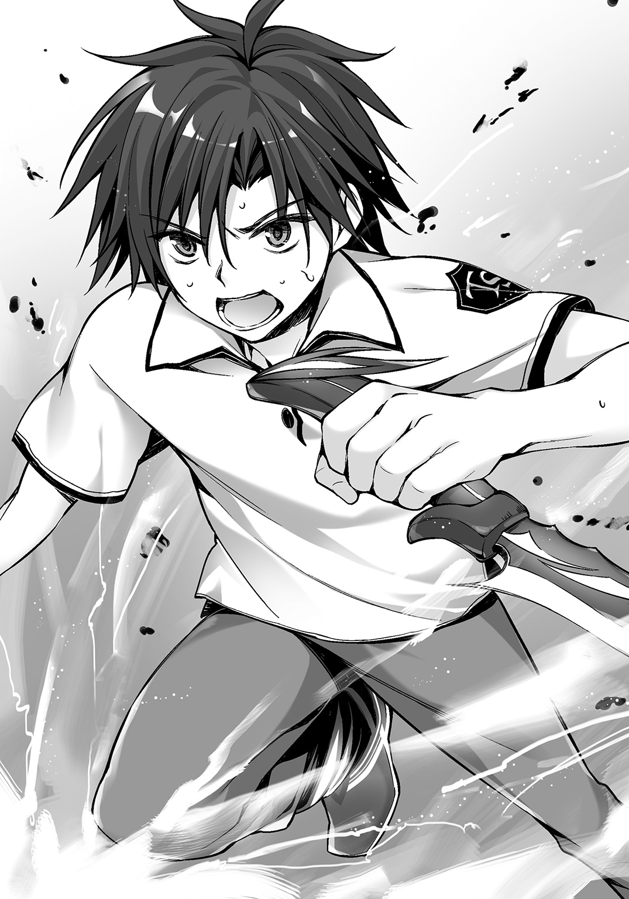
まぶしいほどの青色、赤色、金色の光が――トリニティの光があふれる。
先ほど刺したままのダガーの真横。
廻人はペカティの顔面に刃を突き刺した。
なにに触れたのかもわからないくらいに手応えはなかった。
すべての力を出し切った。
ペカティの中心体に切っ先が触れ、そのまま真っ二つに割った。
災厄の身体は瞬時に光を失い、灰色になる。
だけれど廻人はそれを見届けることもなかった。
廻人は、ペカティの上を飛び越すや意識を失ったからだ。
放物線を描いて二〇メートルは飛んでいった彼の身体は、アスファルトに叩きつけられる――直前、抱き留められた。
「......やりゃあがったな、小僧。俺はぎりぎり間に合わなかったってわけか」
東京災厄地域から鎌倉区まで強行軍で引き返してきたクレオだ。
素直に感心したような、どこか呆れたような笑顔を浮かべていた。
災厄技術庁、自衛隊のシューターチームは、南森、クレオに遅れること五分で現場に到着した。
彼らが目にしたのは、殺到した群衆、報道のカメラやレポーター、それに救急車に乗せられる高校生と、看護に当たる仁科だった。
仁科はここにやってくる直前に南森から連絡を受け、廻人たちの現在位置を教えた。南森は、昨晩ペカティが東京校に現れたと聞いて、いち早く立川基地を出発していたらしい。
それからすぐクレオから連絡が入った。クレオはすでに猛スピードでこちらに向かっていた。
このふたりは奇しくも、同じことを仁科に言った。
若いシューターを絶対に見殺しにしない、と。
結果的には間に合ったかどうかぎりぎりのラインではあったが。
災厄レベル５ｔｈのペカティを討伐したのが高校生だとわかるや、その事実は数日間ニュース番組を賑わせた。
廻人を始め、トリニティや黄金獅子のメンバーは災厄技術庁の関連病院へ搬送され、一週間、「治療」という名の「隔離措置」を受けた。
外界からの隔離は徹底していた。
外に出られないだけでなく、あらゆる情報もシャットアウトされていた。
腕が折れたせいでトレーニングができないどころか運動能力が落ちることを心配している廻人。
血を流しすぎて三日間は絶対安静だった月佳。
ふたりの看護のためにかいがいしく働いたアリス。
黄金獅子のメンバーも同じ病院にいた。重傷の棗や六条はともかく、まったくケガをしていない乃愛やユーリはすぐにも退院できたはずなのに、足留めされていた。
そんなときでも六条が「生徒会の仕事が滞る」と渋い顔をしていたのを見て、廻人は、ナンバーワンチームになっても生徒会にだけは入るのを止めようと心に誓った。
テレビもなく、訪問客もなく、チームメンバーとだけ過ごす一週間が過ぎた――。
彼らは知らなかった。
世間と隔絶していた一週間のうちに多くの出来事が進んでいたことを。
Ｅｐｉｌｏｇｕｅ
廻人はギプスで固定した左腕を吊っていた。
完治するまで一カ月はかかるという。
月佳もまた切り傷を二カ所縫ったがこちらは治りが早く、数日後には抜糸ができるという。
退院の日――手続きを終えた廻人たちが病院のロビーに集まったところへ仁科がやってきた。
「いい？ 君たち。いろいろ大変だと思うけど、気を強く持ってね」
廻人は担任の顔をじっと見た。
「......なんすか、その不穏な予告。先生が、先回りして大変だとか言うのって死ぬほど怖いんですけど」
「悪い話じゃないよ。......たぶん」
「だからなんなんすか！ たぶんって――」
そのとき廻人は、病院の外で何事か騒ぎが起きたのを耳にした。
一足先に病院のロビーから外へ出ていったのは黄金獅子の四人だ。棗は一カ月は入院という診断だったが無理矢理退院してしまった。
集まっていたのは報道陣だ。
「六条くん！ 今のお気持ちをお聞かせください！」
大量のマイクを向けられ、写真も撮られる。
六条が「わからない」という顔をする。
「......退院した感想ですか」
「違いますよ！ いやだなー」
「ではペカティを倒したことの感想ですか。我ながら未熟な点が多かったようにも思いますが、結果としては犠牲者を出すこともなく――」
「違う違う、違いますって！」
ますます六条がわからないという顔をしていると、報道陣がざわつきだした。
「おい、これ......ほんとうに知らないんじゃないか」
「まさか。さすがに本人に通知されていないなんてこと――」
六条は最初に質問してきた女性記者に視線を向ける。
「あ、えっと......知ら、ないのかな？ まいったな～......」
女性記者がごほん、と咳払いをする。
「では僭越ながら毎朝テレビが六条誠一郎くんにお知らせします。このたび、災厄技術庁は特例として六条くんを選抜シューターに迎え入れたいという考えを発表しました。卒業後にはチーム四人で来てほしいということです」
選抜シューター――南森のいる部隊だ。
南森が停鈍であれほど強いのだから、光撃や他の攻撃タイプはどれほどのパワーを持っているのか、想像するだけで恐ろしいところではある。
廻人があんぐりと口を開け、黄金獅子の他のメンバーも驚いていたが六条だけは眉根を寄せただけだった。
「それはなにかの間違いでは。ペカティとの戦いでも実感しましたが、私の実力は選抜シューターの方々と比べてはるかに及びません」
「またまたぁ、ご謙遜を。でもね、そこを含めて特例なんですよ。十七歳の現時点でここまで完成された身体能力、そして潜在能力も十分と評価されたわけです」
「ほんとうの話なんですか」
くるりと六条が振り返る。
視線の合った仁科は渋い顔ながらうなずく。
次いで六条は廻人へと視線を向けた。
その表情に――どんな意味が込められていたのか、廻人には知るよしもない。
廻人にうらやましい、という気持ちがないわけではない。
だけれど六条は別格だ。
六条ならその資格があると廻人は思う。
「俺もすぐに追いつきますから」
この距離で廻人のつぶやきは聞こえないはずだが、六条は小さくうなずいた。
そして報道陣に向き直る。
「大変光栄です。謹んでお受けしたいと思います」
わぁっ、と歓声が上がる。
フラッシュが焚かれ、写真を撮られる六条。
ユーリは相変わらず飄々とした顔で、乃愛は六条が喜びを見せないのでつまらなそうにし、棗はそんな評価は当然だとばかりに包帯だらけの身体で偉そうにしていた。
「なんでよ」
その一方で、頰をふくらませている月佳がいた。
「災厄を倒したのはトリニティもいっしょにいたからなのに」
「俺たちだって黄金獅子がいなかったらヤバかったし。それに......会長ならしょーがないなーって感じだ」
「なんでよ」
同じ言葉を、今度は廻人に向かって言った。
「いつの間に会長のことリスペクトするようになったわけ？ 最初は会長相手に嚙みついてく狂犬みたいなところがあったのに。ね、アリスちゃん」
「廻人くん、病気かなにかだったんですかぁ？」
「狂犬病な。それ。違うから。つーか俺、狂犬じゃなかったっつの」
「悔しいなあ。私たちのがんばりが評価されてないみたい」
「でもでもぉ、今回のことでまた......ちょっとだけ、かもしれないですけど、強くなれたかな......って、そんな気がするんです」
「そーだよな！ 俺も思う！ いやーなんかさ、生体響刻武装って奥が深いっつうか、いろいろ試してみたいっつうか」
「夏の間はトレーニング禁止だけどね」
「うぐっ」
月佳の言葉が廻人に突き刺さる。
トレーニング禁止命令はまだ生きており、ペカティに遭遇したことは不測の事態であったため、武装の使用についてはおとがめはなかった。
とはいえ、廻人も月佳も大ケガをした後だからトレーニングなんてできないのだが。
「夏休みの後半、どうしましょぅかぁ」
「あ、それじゃさ、みんなで勉強する？ ね？」
「なんで月佳は勉強するってのに目を輝かせてんだよ......」
すると仁科が「うーん」と唸った。
「どしたの、センセー。便秘？」
「違うわよ！ 厳密に言うとそうだけど、それは関係ないの！ ......あのね、さっき言ったでしょ。君たちこれから大変よ、って」
「会長のことでしょ。会長なら選ばれても妥当だなって思うし、選抜シューターでやってけるでしょ」
「ん～......それが、違うんだよねえ......」
ごにょごにょと仁科が言っていたときだった。
「おい、アレ――」
あらかた六条への取材を終えた報道陣のうち、ひとりが廻人たちを指差した。
「マジだ！ あの子だ！」
「動画の子じゃん！」
なんだ――と思う間もなく記者やカメラマンたちがロビーに突入してきて、廻人たちを包囲する。
「な、な、な、なんなのこれ、先生！ 仁科先生！」
左右を見たが先ほどまでいた仁科は人垣の向こうで逃げ出そうとしていた。
「コラァ！ 残念教師！ 生徒を置いて逃げるなっての!!」
びくっ、と仁科は振り返ると引きつった笑顔で、
「い、いや～......こんなことになるとは思わなくって。私だってよかれと思ってやったんだよ？ でもあの人、強烈でさ......」
「あの人？ ってなに――」
「六条さんと同じくなにも知らないんですか、火見沢月佳さん！」
戸惑う廻人たちを無視してマイクは一斉に――月佳の前に突き出された。
「......え？」
きょとんとする月佳をよそに、
「おい、実物は動画以上に美人だぞ」
「これは話題になるな。しかもホムラの火見沢家だろ」
ざわつきが広がっている。
「ちょっとちょーっと！ ストップ！ 動画ってなんの話っすか!?」
廻人が割って入ると、先ほど六条にあれこれ説明していたのと同じ記者が、
「ペカティとの戦い、すごかったですね。皆さんは知らないのかもしれませんが、あの模様を至近距離で撮影していた一般の方がいまして、それが動画サイトにアップされたんですよ」
彼女はポケットからスマートフォンを取り出した。
映し出されたのは確かに月佳だ。
ペカティからアリスを救い、陽那と会話を交わし、そして廻人を撃つところまでがまるまる収められていた。
血を流し、苦しんでいる姿を撮影されていた――と思うと廻人の頭にカッと血が上る。
「あのな、こんなの勝手に撮って――」
「待って廻人」
それを押しとどめたのは他ならぬ月佳だった。
「......再生数、二八〇万、ですか？」
とてつもない数字がそこには記されていた。
すると記者がポンと手を叩く。
「そう、そうなんです！ 火見沢さんが美少女だということで話題になって、彼女は何者なのかって大騒ぎになっていたんですよ。未成年だから東京戦厄高校は情報を出したがらなかったんですが、昨日の夜――」
「はい、そこからは私が説明しまーす」
にゅっ、と足下から現れた女性――火見沢陽那に廻人たちは思い切りのけぞった。
「お、お、お、お、お姉ちゃん!?」
「ん月佳ちゃん、寂しかったよ。でも感動の再会は後にしなきゃね」
にこやかだった陽那の顔が、不意に真面目になる。
「――月佳ちゃん、まだあなたは火見沢家から離れてひとりで生きていこうと思っているのかな？」
ざわっ、と報道陣がざわつく。
「当然よ」
月佳は迷わなかった。
彼女の左手を廻人が、右手をアリスが――強く握っていた。
ざわつきがさらに大きくなる。
それを陽那が制するように声を張り上げる。
「というわけで、火見沢月佳はホムラの創業本家から離れ、現在は自活の道を探っています。そこへ、今回の騒ぎです。私がちょーっとだけある提案をしたら、災厄技術庁広報部が呑んでくれたんだよね」
「............」
「............」
「............」
なんだか不穏な言葉の響きに廻人たちは視線をかわす。
「な、なによその目はっ。ちゃんと月佳ちゃんにとっていい提案なんだよ？ それはねぇ――ずばり『シューター個人へのスポンサードの許可』」
「......スポンサード？」
廻人がわからずに聞くと、
「月佳ちゃんが動画で有名になったことから様々な企業が注目したの。可憐で聡明な月佳ちゃんみたいな子が平和維持のために災厄と戦うことは、災厄技術庁にとって格好のイメージアップってわけ。東京校でも生徒会があちこち出かけているでしょ？ あれを個人にまで適用し、そこに個別の企業が直接支援できる仕組みを作ったの」
「直接支援って、ことは......」
「ええ。企業ＰＲにも協力してもらう代わりに、金銭の報酬を受けることができる」
それは、身分としては国家公務員にあたるシューターにとって、かなり特殊なケースだと言える。
あり得ないほどの厚遇だ。
すると陽那が顔を寄せ、廻人たちに聞こえるだけの小声で、
「......だってさあ、ペカティが二体いることを知らなかったこととか、自衛隊と災厄技術庁の情報の隠し合いとか、挙げ句の果てには響刻値の高い人間を使った囮作戦とか、これ、表沙汰になったらめっちゃヤバイじゃん？ そこを突っ込んだのよね......」
そう言った。
満面の笑みで。
仁科が言っていた「あの人、強烈」というのが陽那を指しているのだと、廻人は今さらながらに気がついた。仁科が今回の事情を全部陽那にゲロッたなということもわかった。
「さて、月佳ちゃん――いいえ、火見沢月佳さん」
不意に表情と声を改めて陽那は言った。
「株式会社ホムラはこのたび正式に、ディザスター・シューターである火見沢月佳さんとスポンサー契約を結びたいと考えています。ＰＲ活動の協力は月佳さんが成人を迎えてから。それまでは学業と修練に専念していただいて、その間の生活費、学費はすべてホムラが負担したいと思います」
「――――」
月佳の目が見開かれる。
あまりに突然の申し入れだった。
どうしてホムラが？ とか様々な疑問が湧いて出る。
だけれどそんな疑問をすべてぬぐい去るように、陽那は微笑んだ。
「......どれほど遠くまで、あなたが離れていったとしても、私はずっとあなたを支えるつもりだからね」
それは実の姉だからこその言葉だった。
「お姉、ちゃん――」
月佳の目から一筋の涙がこぼれる――瞬間、月佳は姉に抱きついていた。
フラッシュが焚かれる。
目を開けていられないほどに。
それは祝福の拍手のようにも見えた。
「ふう......よーやく、解放された......」
あれから、学校に呼び出され、陽那とも契約の細かいところを詰めて、自由になれたのは三時間後だった。
「お昼食べてませんでしたしねぇ......お腹空いちゃいましたぁ」
アリスがぼやくのも無理はない。時刻は昼の二時を回っていた。
「ごめんね。先にご飯食べててくれてよかったんだけど」
「いぇいぇ。月佳ちゃんのことですから、アリスも聞いておきたかったですし」
「ありがと、アリスちゃん」
「えへへ」
ふたりがにこにこと話している。
学校から寮への帰り道。
やっぱり――このふたりはちょっと前から、以前にも増して仲がよくなったように感じられる廻人である。
（まあ、でも仲がいいことはいいことだよなー）
と、自分が原因だとはまったく思いもせずのんきに考える。
「しっかしホムラも太っ腹だなー。二十歳になるまで無償でお金出してくれるようなもんだろ？」
「あー、アレね......」
廻人が聞くと月佳が苦笑する。
「ん、なんかあるのか？」
「あのね、私もさすがに条件よすぎるし、お父さんもよく許可したなって思って、踏み込んで聞いてみたの。そしたら......」
スポンサードを希望する企業は、なんとすでに一二社に上るという。
東京株式市場に上場している企業が六社含まれている。
そしてその中に、ホムラの競合他社である自動車メーカーがあったのだ。
「ようは、ライバル企業に取られるわけにはいかなかったってことね。しかもお姉ちゃん、私のマネージャーまでやるって言いだすし」
「は、ははは......」
やはり強烈な姉だった。
「それでも、いいお姉さんだと思います」
アリスが言うと廻人も月佳もうなずいた。
どんな思惑があったとしても陽那は月佳のためを思って動いているのだ。
「あの契約書、かなり分厚かったよな。全部読んだのか？」
「当然でしょ」
「なんか一カ所修正してたけど――あれって確か」
廻人もその修正箇所を見ていた。
内容は、「恋愛禁止」に関することだ。
月佳個人のイメージを守るために設定されている。
月佳が希望したのは「二十歳の誕生日を迎えるまで」という項目を「十八歳」に変えてもらうということだった。
「な、なによ......なにか変？ 修正してもらうことが」
「いやさ。だって、俺たちシューターだし、学校の勉強もあるわけだろ？ まあそれでも部活とかやってるやついるけど、実質的に恋愛してるヒマないんじゃないかなって」
すると、月佳が口を尖らせた。
よく見るとその横のアリスも口を尖らせている。
「......俺、なんか変なこと言ったか？ つうかひょっとして、好きなヤツがいるとか？」
「！」
すると月佳の目がぱちぱちと瞬いた。
「......い、いるけど」
「えーっ、マジかよ。月佳が好きになるってすっげぇレベル高そうだな！ どんなヤツ？ 俺が知ってる？」
月佳は、口元を緩ませた。
「その人はね......すごく勇気があって、頼りがいがあるの」
「あと、とってもカッコイイです！」
アリスが横から口を挟む。
「え、えぇ～。カッコイイかどうかはちょっと賛成しかねるな」
「もう。月佳ちゃんは要求が高すぎるんです」
「あと、優しい......かも」
「そうですねぇ～。とっても優しい人です」
「だよね」
「はぃ！」
ふたりでなんだか盛り上がっている。
「んんんん？ アリスはそいつが誰か知ってるの？」
廻人の中ではめっちゃイケメンでめっちゃ身長高くてめっちゃ頭よくてめっちゃ優しいヤツみたいなイメージができあがっている。いたっけそんなヤツ。輝井？ んー、それはなさそう。
「えへへ～」
アリスまで耳を赤くしてにやけている。
いったいなんなんだ。
「なあ、俺が知ってるヤツ？」
するとふたりは顔を見合わせた。
「これ以上は......」
「ナイショです！」
そしてふたりは廻人の右と左に並んできた。
「早く寮に戻ろ。カフェテリアでお昼にしたいし、冷たいもの飲みたい」
「アリスもです！」
「それは俺もだけど......」
月佳の好きな人。
どうやら教えてくれるつもりはないらしい。
「......ま、いいか」
そのうち教えてくれるだろう。同じチームなのだから。
三人は寮への道を歩いていく。
足並みをそろえて。
空は夏にふさわしい青さをたたえ、入道雲が鎌倉の山に乗っかっている。
これは成家廻人、火見沢月佳、千早川アリスが所属する第七二討伐班の物語。
これからも――三人で歩んでいく、チームの物語だ。
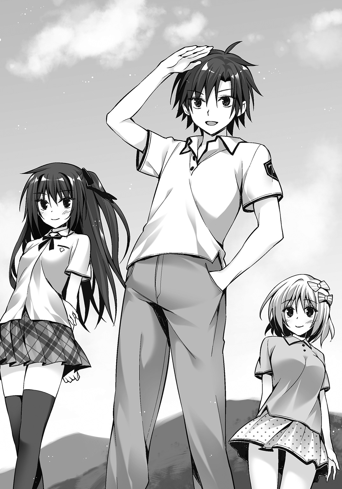
あ と が き
三角関係が大好物なのでどうしても書く作品に多く出てきてしまうのだが、リアルで自らの身に起こったら......と思うと空恐ろしくてたまらない。
ある人のことが好きで好きでたまらないのに、その人のそばには強力なライバルがいるのだ。もし仮にそんな立場に置かれたとしたら、「はい無理無理無理無理」と早速さじを投げる自信がある。
私って平和主義だから争いごととか嫌いだし。私の幸せのために誰かを傷つけるなんて堪えられないし。......とかそんなこんな言い訳を即座に作り出すだろう。や、「敵前逃亡なんてみっともない」だなんて考えるより前に、私は負けた後をリアルに想像してしまうのだ。恋愛の戦いに負けたら、惨めでしょ......やばいっしょ......立ち直れないっしょ......。
とはいえ現実を顧みれば私に三角関係なる事態は一度として起きたことがないし、逆三角関係（つまり女子二名から好かれるような関係）もない。「人生にモテ期は三回ある」とかいう都市伝説をネットでよく見かけるが、「誰も観測したことがない」からこそ都市伝説なのである。モテ期なんて来ないよ。三十代半ばの私が断言するよ。大体、誰かから一方的に好意を向けられた経験だって怪しいところだよ。あれ、なんの話だっけ。
そう、三角関係。
現実で経験したことがないからフィクションに求めているのかもしれない。
でも現実に三角関係なんてどうやったら起きるのか。私の周りで三角になりそうな関係......うーん、うーん、うーん......。
ハッ。
作家、イラストレーター、編集。
いやいやいやいやいやいやいやいや、ないないないないないないないない。この三者で三角関係になったらとんだ泥沼だよ。どんなライトノベルを創るんだよ。そもそも作家がイラストレーターと会う機会が少ないからお互いを好きになったりすることはない――待てよ、それなら編集が美少女だったらいいわけだ。
作家とイラストレーターはお互いを知ることなく、同じ人を好きになる。で、一巻完成後の打ち上げとかで初めて会って、ともに編集を見つめる視線の熱っぽいことに気がついて、お互いがお互いの思いを知ってしまう。もちろん美少女編集はそういうところ鈍感だからね、気づかないわけですよ。そうなってくると二巻目以降の取り組み方が変わってきて――ありそうじゃないですか！
ありそう――（担当の顔を思い浮かべる）。
はい（死んだ魚の目でうなずく）。
さて、今作で「東京戦厄高校第七二討伐班」の物語はひとまず終了となります。出てくるキャラクターがみんな可愛くて、書いてて楽しかったです。
イラストレーターのおりょうさん。素敵なキャラクターたちを描いていただいてありがとうございました。「災厄」という未知の生物の描写はかなりふわふわとしていて難しかったかもしれません......。実は、ふわふわさせたのは意図的で、イラストを見つつも鉱石のような、生物のような、光を放つ怪しい存在が読者の方々の頭で再生されればいいなと思っていました。
美少女（を愛してやまない）担当氏にも感謝を。健康診断の結果を胸に刻んで健康への道をひた走ってください。いやほんと、健康は大事ですよ。
そして、この物語を最後まで読んでくださった読者の皆様に感謝を。廻人、月佳、アリスという三人の物語を楽しんでいただけたなら、これに勝る喜びはありません。
三上康明
著者紹介
三上康明 みかみ やすあき
田舎のシーンは自分自身の田舎である秋田県某所がモチーフだったりするけれども、今作の執筆中ＢＧＭはやっぱりUVERworldの「コロナ」。
illustration
おりょう
イラストレーター。原画家。ツイッターｉｄ＝@oryo
ダッシュエックス文庫DIGITAL
東京戦厄高校第72討伐班３
著者 三上康明
© YASUAKI MIKAMI 2016
２０１６年２月29日発行
この電子書籍は、ダッシュエックス文庫「東京戦厄高校第72討伐班３」
２０１６年１月27日発行の第１刷を底本としています。
発行者 鈴木晴彦
発行所 株式会社 集英社
〒１０１－８０５０
東京都千代田区一ツ橋２丁目５番10号
０３－３２３０－６０８０（読者係）
制作所 株式会社ＩＣＥ
本作品の全部また一部を無断で複製、転載、改竄、インターネット上に掲載すること、および有償無償に関わらず、本データを第三者に譲渡することを禁じます。なお個人利用の目的であっても、コピーガードを解除しての複製は、法律で禁じられています。